MakeFinalFigs_Fig4
2023-05-11
Last updated: 2024-02-13
Checks: 6 1
Knit directory:
ChromatinSplicingQTLs/analysis/
This reproducible R Markdown analysis was created with workflowr (version 1.7.0). The Checks tab describes the reproducibility checks that were applied when the results were created. The Past versions tab lists the development history.
The R Markdown file has unstaged changes. To know which version of
the R Markdown file created these results, you’ll want to first commit
it to the Git repo. If you’re still working on the analysis, you can
ignore this warning. When you’re finished, you can run
wflow_publish to commit the R Markdown file and build the
HTML.
Great job! The global environment was empty. Objects defined in the global environment can affect the analysis in your R Markdown file in unknown ways. For reproduciblity it’s best to always run the code in an empty environment.
The command set.seed(20191126) was run prior to running
the code in the R Markdown file. Setting a seed ensures that any results
that rely on randomness, e.g. subsampling or permutations, are
reproducible.
Great job! Recording the operating system, R version, and package versions is critical for reproducibility.
Nice! There were no cached chunks for this analysis, so you can be confident that you successfully produced the results during this run.
Great job! Using relative paths to the files within your workflowr project makes it easier to run your code on other machines.
Great! You are using Git for version control. Tracking code development and connecting the code version to the results is critical for reproducibility.
The results in this page were generated with repository version c56b87d. See the Past versions tab to see a history of the changes made to the R Markdown and HTML files.
Note that you need to be careful to ensure that all relevant files for
the analysis have been committed to Git prior to generating the results
(you can use wflow_publish or
wflow_git_commit). workflowr only checks the R Markdown
file, but you know if there are other scripts or data files that it
depends on. Below is the status of the Git repository when the results
were generated:
Ignored files:
Ignored: .DS_Store
Ignored: .Rhistory
Ignored: .Rproj.user/
Ignored: analysis/.Rhistory
Ignored: code/-
Ignored: code/.DS_Store
Ignored: code/.RData
Ignored: code/._report.html
Ignored: code/.ipynb_checkpoints/
Ignored: code/.snakemake/
Ignored: code/APA_Processing/
Ignored: code/Alignments/
Ignored: code/ChromHMM/
Ignored: code/ENCODE/
Ignored: code/ExpressionAnalysis/
Ignored: code/ExtractPhenotypeBedByGenotype.py
Ignored: code/FastqFastp/
Ignored: code/FastqFastpSE/
Ignored: code/FastqSE/
Ignored: code/FineMapping/
Ignored: code/GTEx/
Ignored: code/Gencode.v34.6Colors.bed.gz
Ignored: code/Genotypes/
Ignored: code/H3K36me3_CutAndTag.pdf
Ignored: code/IntronSlopes/
Ignored: code/LR.bed
Ignored: code/LR.seq.bed
Ignored: code/LongReads/
Ignored: code/MYB.tracks.ini
Ignored: code/Metaplots/
Ignored: code/Misc/
Ignored: code/MiscCountTables/
Ignored: code/Multiqc/
Ignored: code/Multiqc_chRNA/
Ignored: code/NonCodingRNA/
Ignored: code/NonCodingRNA_annotation/
Ignored: code/PairwisePi1Traits.P.all.txt.gz
Ignored: code/PeakCalling/
Ignored: code/Phenotypes/
Ignored: code/PlotGruberQTLs/
Ignored: code/PlotQTLs/
Ignored: code/ProCapAnalysis/
Ignored: code/QC/
Ignored: code/QTL_SNP_Enrichment/
Ignored: code/QTLs/
Ignored: code/RPKM_tables/
Ignored: code/ReadLengthMapExperiment/
Ignored: code/ReadLengthMapExperimentResults/
Ignored: code/ReadLengthMapExperimentSpliceCounts/
Ignored: code/ReferenceGenome/
Ignored: code/Rplots.pdf
Ignored: code/Session.vim
Ignored: code/SmallMolecule/
Ignored: code/SplicingAnalysis/
Ignored: code/TODO
Ignored: code/Tehranchi/
Ignored: code/alias/
Ignored: code/bigwigs/
Ignored: code/bigwigs_FromNonWASPFilteredReads/
Ignored: code/config/.DS_Store
Ignored: code/config/._.DS_Store
Ignored: code/config/.ipynb_checkpoints/
Ignored: code/config/config.local.yaml
Ignored: code/dag.pdf
Ignored: code/dag.png
Ignored: code/dag.svg
Ignored: code/data/
Ignored: code/debug.ipynb
Ignored: code/debug_python.ipynb
Ignored: code/deepTools/
Ignored: code/featureCounts/
Ignored: code/featureCountsBasicGtf/
Ignored: code/genome_config.yaml
Ignored: code/gwas_summary_stats/
Ignored: code/hyprcoloc/
Ignored: code/igv_session.xml
Ignored: code/isoseqbams/
Ignored: code/log
Ignored: code/logs/
Ignored: code/notebooks/.ipynb_checkpoints/
Ignored: code/pi1/
Ignored: code/polyA.Splicing.Subset_YRI.NominalPassForColoc.bed.bgz
Ignored: code/rules/.ipynb_checkpoints/
Ignored: code/rules/OldRules/
Ignored: code/rules/notebooks/
Ignored: code/salmontest/
Ignored: code/scratch/
Ignored: code/scripts/.ipynb_checkpoints/
Ignored: code/scripts/GTFtools_0.8.0/
Ignored: code/scripts/__pycache__/
Ignored: code/scripts/liftOverBedpe/liftOverBedpe.py
Ignored: code/snakemake.dryrun.log
Ignored: code/snakemake.log
Ignored: code/snakemake.sbatch.log
Ignored: code/snakemake_profiles/slurm/__pycache__/
Ignored: code/test.introns.bed
Ignored: code/test.introns2.bed
Ignored: code/test.log
Ignored: code/tracks.xml
Ignored: data/.DS_Store
Ignored: data/GWAS_catalog_summary_stats_sources/._list_gwas_summary_statistics_6_Apr_2022-10.csv
Ignored: data/GWAS_catalog_summary_stats_sources/._list_gwas_summary_statistics_6_Apr_2022-11.csv
Ignored: data/GWAS_catalog_summary_stats_sources/._list_gwas_summary_statistics_6_Apr_2022-2.csv
Ignored: data/GWAS_catalog_summary_stats_sources/._list_gwas_summary_statistics_6_Apr_2022-3.csv
Ignored: data/GWAS_catalog_summary_stats_sources/._list_gwas_summary_statistics_6_Apr_2022-4.csv
Ignored: data/GWAS_catalog_summary_stats_sources/._list_gwas_summary_statistics_6_Apr_2022-5.csv
Ignored: data/GWAS_catalog_summary_stats_sources/._list_gwas_summary_statistics_6_Apr_2022-6.csv
Ignored: data/GWAS_catalog_summary_stats_sources/._list_gwas_summary_statistics_6_Apr_2022-7.csv
Ignored: data/GWAS_catalog_summary_stats_sources/._list_gwas_summary_statistics_6_Apr_2022-8.csv
Ignored: data/GWAS_catalog_summary_stats_sources/._list_gwas_summary_statistics_6_Apr_2022.csv
Ignored: data/Metaplots/.DS_Store
Untracked files:
Untracked: analysis/2024-01-17_CheckYangsJunctionAnnotator.Rmd
Unstaged changes:
Modified: analysis/MakeFinalFigs_Fig2.Rmd
Modified: analysis/MakeFinalFigs_Fig4.Rmd
Modified: code/scripts/GenometracksByGenotype
Note that any generated files, e.g. HTML, png, CSS, etc., are not included in this status report because it is ok for generated content to have uncommitted changes.
These are the previous versions of the repository in which changes were
made to the R Markdown (analysis/MakeFinalFigs_Fig4.Rmd)
and HTML (docs/MakeFinalFigs_Fig4.html) files. If you’ve
configured a remote Git repository (see ?wflow_git_remote),
click on the hyperlinks in the table below to view the files as they
were in that past version.
| File | Version | Author | Date | Message |
|---|---|---|---|---|
| Rmd | 42d9a7b | Benjmain Fair | 2023-09-14 | ben updates |
| Rmd | ada72d2 | Benjmain Fair | 2023-07-24 | updates Ben |
| Rmd | 3d0e9c1 | Benjmain Fair | 2023-06-21 | update intron annotations |
| Rmd | 5946b5a | Benjmain Fair | 2023-05-22 | update site |
knitr::opts_chunk$set(echo = TRUE, warning = F, message = F)
library(tidyverse)── Attaching packages ─────────────────────────────────────── tidyverse 1.3.1 ──✔ ggplot2 3.3.6 ✔ purrr 0.3.4
✔ tibble 3.1.7 ✔ dplyr 1.0.9
✔ tidyr 1.2.0 ✔ stringr 1.4.0
✔ readr 2.1.2 ✔ forcats 0.5.1── Conflicts ────────────────────────────────────────── tidyverse_conflicts() ──
✖ dplyr::filter() masks stats::filter()
✖ dplyr::lag() masks stats::lag()library(RColorBrewer)
library(data.table)
Attaching package: 'data.table'The following objects are masked from 'package:dplyr':
between, first, lastThe following object is masked from 'package:purrr':
transposelibrary(edgeR)Loading required package: limmalibrary(readxl)
library(qvalue)
library(ggrepel)
library(knitr)
library(drc)Loading required package: MASS
Attaching package: 'MASS'The following object is masked from 'package:dplyr':
select
'drc' has been loaded.Please cite R and 'drc' if used for a publication,for references type 'citation()' and 'citation('drc')'.
Attaching package: 'drc'The following objects are masked from 'package:stats':
gaussian, getInitiallibrary(ggbreak)ggbreak v0.1.1
If you use ggbreak in published research, please cite the following
paper:
S Xu, M Chen, T Feng, L Zhan, L Zhou, G Yu. Use ggbreak to effectively
utilize plotting space to deal with large datasets and outliers.
Frontiers in Genetics. 2021, 12:774846. doi: 10.3389/fgene.2021.774846# Set theme
theme_set(
theme_classic() +
theme(text=element_text(size=16, family="Helvetica")))
# I use layer a lot, to rotate long x-axis labels
Rotate_x_labels <- theme(axis.text.x = element_text(angle = 45, vjust = 1, hjust=1))List of figs to make
- Plot of induction of GAGT introns specifically in chRNA and polyA (main)
- spearman correlation distribution of GAGT introns compared to all others (supplement)
- A barplots of expression effect in chRNA and polyA, grouped by whether induced exons are productive or unproductive. (main)
- barplot of induced exons and proportion which are “poison” and why. (Supplement, possibly main)
- The druggability gene enrichment barplots comparing genes w/ ris-induced poison exons (not based on expression effects) (main)
- the druggability gene enrichment barplot comparing genes w/ post-txnal downregulation (Supplement)
- the polyA vs chRNA gene expression effect scatter, highlighting various categories (Supplement)
- polyA volcano at high dose, at low dose (Supplement)
- dose response and model fits of handfuls of genes of interest
- the splicing vs expression beta faceted by predicted splicing effect (ie frame shift, in-frame PTC, frame-preserving, etc) (Supplement)
Read in data
IntronAnnotatins <- read_tsv("../data/IntronAnnotationsFromYang.tsv.gz") %>%
mutate(chrom = str_remove_all(chrom, "chr")) %>%
mutate(Intron = paste(chrom, start, end, sep=":")) %>%
filter(!str_detect(SuperAnnotation, "NoncodingGene"))
small.molecule.dat.genes <- read_tsv("../code/SmallMolecule/FitModels/polyA_genes.tsv.gz")
# Model fits using PSI using intron trios
small.molecule.dat.introns <- read_tsv("../code/SmallMolecule/FitModels/polyA_GAGTIntrons_asPSI.tsv.gz") %>%
mutate(Intron = str_replace(junc, "^chr(.+?):[+-]$", "\\1")) %>%
left_join(IntronAnnotatins)
ClusterSignificance <- Sys.glob("../code/SmallMolecule/leafcutter/ds/chRNA_risdiplam_*_cluster_significance.txt") %>%
setNames(str_replace(., "../code/SmallMolecule/leafcutter/ds/chRNA_risdiplam_(.+?)_cluster_significance.txt", "\\1")) %>%
lapply(read_tsv) %>%
bind_rows(.id="dose.nM")
EffectSizes <- Sys.glob("../code/SmallMolecule/leafcutter/ds/chRNA_risdiplam_*_effect_sizes.txt") %>%
setNames(str_replace(., "../code/SmallMolecule/leafcutter/ds/chRNA_risdiplam_(.+?)_effect_sizes.txt", "\\1")) %>%
lapply(read_tsv) %>%
bind_rows(.id="dose.nM") %>%
mutate(cluster = str_replace(intron, "^(.+?):.+?:.+?(:clu_.+$)", "\\1\\2"))
chRNA.splicing.dat <- inner_join(EffectSizes, ClusterSignificance)
Translated.GAGT_CassetteExons <- read_tsv("../code/SmallMolecule/CassetteExons/ExonsToTranslate.Translated.tsv.gz") %>%
dplyr::select(-chrom, -Strand) %>%
mutate(TranslationDiff = str_length(IncludedTranslation) - str_length(SkippedTranslation)) %>%
mutate(InFrame = str_length(IncludedTranslation)-str_length(SkippedTranslation)==(ExonStop_Cassette-ExonStart_Cassette)/3) %>%
mutate(ExonRemainder = (ExonStop_Cassette - ExonStart_Cassette)%%3) %>%
mutate(Effect = case_when(
is.na(InFrame) ~ "Cassette in UTR",
InFrame ~ "Preserves frame",
ExonRemainder %in% c(1,2) ~ "Frame shifting",
InFrame == F ~ "In-frame PTC",
)) %>%
left_join(
IntronAnnotatins %>%
unite(Intron, chrom, start, end, strand, sep=":") %>%
mutate(GAGTInt = paste0("chr", Intron))
)
leafcutter.counts <- read.table("../code/SmallMolecule/leafcutter/clustering/autosomes/leafcutter_perind_numers.counts.gz", header=T, sep=' ') %>% as.matrix()
library(biomaRt)
ensembl = useMart("ensembl",dataset="hsapiens_gene_ensembl")
ensembl_to_symbols <- getBM(attributes= c("ensembl_gene_id","hgnc_symbol"),mart=ensembl)
Expression.tidyForDoseResponse <- read_tsv("/project2/yangili1/bjf79/20211209_JingxinRNAseq/code/DoseResponseData/LCL/TidyExpressionDoseData.txt.gz") %>%
mutate(gene = str_replace(Geneid, "(^.+?)\\..+?$", "\\1")) %>%
left_join(ensembl_to_symbols, by=c("gene"="ensembl_gene_id"))
chRNA.DE.dat <- read_tsv("../code/SmallMolecule/chRNA/DE.results.tsv.gz")volcanoes
First I need due testing to get pvalue from dose response fits in polyA data at the low and high dose
polyA.GeneEffects <- small.molecule.dat.genes %>%
filter(str_detect(param, "Pred")) %>%
mutate(gene = str_replace(Geneid, "(^.+?)\\..+?$", "\\1")) %>%
separate(param, into=c("Dummy", "dose.nM"), convert=T, sep="_") %>%
dplyr::select(-Dummy)
GeneEffects.Changes <-
inner_join(
polyA.GeneEffects %>%
filter(dose.nM == 0) %>%
dplyr::select(-Geneid, -dose.nM),
polyA.GeneEffects %>%
filter(!dose.nM == 0),
by=c("gene"),
suffix=c(".expression.untreated", ".expression.treated")
) %>%
distinct() %>%
mutate(Estimate.Expression.FC = Estimate.expression.treated - Estimate.expression.untreated) %>%
mutate(z = Estimate.Expression.FC/sqrt((SE.expression.treated + SE.expression.untreated))) %>%
mutate(abs.z = abs(z)) %>%
# filter(dose.nM == 100) %>%
mutate(polyA.P = 2*pnorm(abs.z, lower.tail = F)) %>%
group_by(dose.nM) %>%
add_count(gene) %>%
filter(n==1) %>%
mutate(FDR = qvalue(polyA.P)$qvalues) %>%
ungroup() %>%
left_join(ensembl_to_symbols, by=c("gene"="ensembl_gene_id"))
GeneEffects.Changes %>%
ggplot(aes(x=polyA.P)) +
geom_histogram() +
facet_wrap(~dose.nM)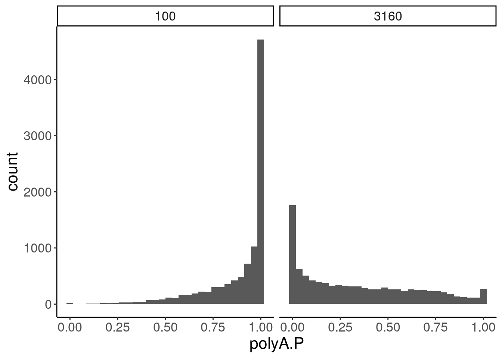
GeneEffects.Changes %>%
filter(dose.nM==100 & FDR<0.1) %>%
arrange(polyA.P)# A tibble: 3 × 14
Estimate.expression.un… SE.expression.u… gene Geneid dose.nM Estimate.expres…
<dbl> <dbl> <chr> <chr> <int> <dbl>
1 3.05 0.0621 ENSG… ENSG0… 100 0.458
2 7.25 0.0495 ENSG… ENSG0… 100 5.44
3 2.26 0.211 ENSG… ENSG0… 100 4.75
# … with 8 more variables: SE.expression.treated <dbl>,
# Estimate.Expression.FC <dbl>, z <dbl>, abs.z <dbl>, polyA.P <dbl>, n <int>,
# FDR <dbl>, hgnc_symbol <chr>SigLowDoseGenes <- GeneEffects.Changes %>%
filter(dose.nM==100 & FDR<0.1) %>%
arrange(polyA.P) %>% pull(gene)
Expression.tidyForDoseResponse %>%
filter(gene %in% SigLowDoseGenes | hgnc_symbol %in% c("HTT", "SMN2", "GALC", "STAT1", "KCNT2", "FHOD3", "SRSF10")) %>%
ggplot(aes(x=dose.nM, y=CPM, color=treatment)) +
geom_line() +
scale_y_continuous(trans="log2") +
scale_x_continuous(trans="log1p", limits=c(0, 10000), breaks=c(10000, 3160, 1000, 316, 100, 31.6, 10, 3.16, 1, 0.316, 0)) +
facet_wrap(~hgnc_symbol, scales="free_y") +
Rotate_x_labels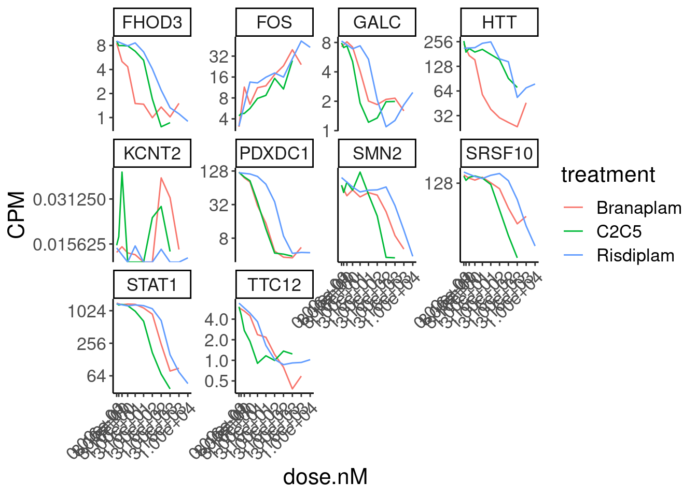
Ok, the test actually seems sort of reasonably calibrated at the high dose, but is overly conservative at the low dose. This issue might stem from the fact that the exact model i fit too (the log-logistic), might not be the best choice of sigmoidal model, especially around the elbows at low doses where an effect is just starting to be measurable. But fixing that could take a bit of work. There may be other workarounds as well to get a better calibrated test. Intuitively I feel what I’m doing (fitting model, then using model to output prediction with standard error at dose=100nM and dose=0nM) isn’t really using all the data very efficiently. Well I guess I don’t really mind being overly conservative, and given how the message of the paper doesn’t at all revolve around this point. So rather than figure out how to better calibrate this test, I think I’ll just be content with this methodology. Especially since the few significant hits actually do seem quite believable when I look at the full dose response set. And FOS is actually in interesting gene. I’m surprised I have missed that thus far.
Ok, so now I will make the final looking volcano plots
volcano.dat <- bind_rows(
chRNA.DE.dat %>%
separate(Geneid, into=c("Geneid", "symbol"), sep="\\_") %>%
mutate(gene = str_replace(Geneid, "(^.+?)\\..+?$", "\\1")) %>%
dplyr::select(logFC, PValue, FDR, gene, symbol, dose.nM=risdiplam_conc) %>%
mutate(dataset = "chRNA"),
GeneEffects.Changes %>%
dplyr::select(logFC=Estimate.Expression.FC, PValue=polyA.P, gene, dose.nM, symbol=hgnc_symbol, FDR, Estimate.expression.untreated) %>%
mutate(dataset = "polyA")
)
volcano.dat %>% filter(dose.nM == 100 & FDR<0.1) %>%
arrange(dataset, FDR)# A tibble: 11 × 8
logFC PValue FDR gene symbol dose.nM dataset Estimate.expres…
<dbl> <dbl> <dbl> <chr> <chr> <dbl> <chr> <dbl>
1 2.22 7.19e-10 0.00000806 ENSG00… TEX21P 100 chRNA NA
2 1.72 1.01e- 9 0.00000806 ENSG00… CAND2 100 chRNA NA
3 0.998 1.95e- 7 0.00104 ENSG00… ANP32A 100 chRNA NA
4 0.776 1.80e- 6 0.00647 ENSG00… GALC 100 chRNA NA
5 1.03 2.02e- 6 0.00647 ENSG00… POLN 100 chRNA NA
6 1.02 8.20e- 6 0.0218 ENSG00… C19or… 100 chRNA NA
7 0.865 1.92e- 5 0.0438 ENSG00… WDR91 100 chRNA NA
8 -0.448 4.82e- 5 0.0962 ENSG00… MZB1 100 chRNA NA
9 -2.60 2.33e-13 0.00000000232 ENSG00… TTC12 100 polyA 3.05
10 -1.82 1.17e- 6 0.00583 ENSG00… PDXDC1 100 polyA 7.25
11 2.48 2.90e- 5 0.0963 ENSG00… FOS 100 polyA 2.26volcano.dat %>%
filter(!is.na(FDR)) %>%
ggplot( aes(x=logFC, y=-log10(PValue), color=FDR<0.1)) +
geom_point(alpha=0.1) +
facet_wrap(dataset~dose.nM, scales = "free_y")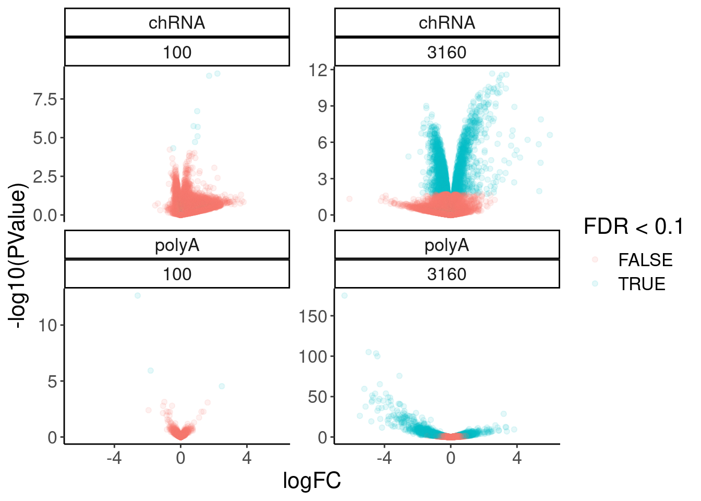
volcano.dat %>%
filter(symbol %in% c("HTT", "SMN2", "GALC", "STAT1", "KCNT2", "FHOD3")) %>%
arrange(dataset, dose.nM)# A tibble: 18 × 8
logFC PValue FDR gene symbol dose.nM dataset Estimate.expres…
<dbl> <dbl> <dbl> <chr> <chr> <dbl> <chr> <dbl>
1 0.776 1.80e- 6 6.47e- 3 ENSG00000… GALC 100 chRNA NA
2 0.410 2.10e- 3 6.06e- 1 ENSG00000… FHOD3 100 chRNA NA
3 0.0236 8.14e- 1 9.23e- 1 ENSG00000… STAT1 100 chRNA NA
4 -0.0218 8.56e- 1 9.41e- 1 ENSG00000… SMN2 100 chRNA NA
5 0.998 1.62e- 7 1.52e- 5 ENSG00000… GALC 3160 chRNA NA
6 0.493 5.22e- 4 5.93e- 3 ENSG00000… STAT1 3160 chRNA NA
7 0.375 3.50e- 3 2.59e- 2 ENSG00000… FHOD3 3160 chRNA NA
8 0.0800 5.08e- 1 8.74e- 1 ENSG00000… SMN2 3160 chRNA NA
9 -0.266 4.08e- 1 1 e+ 0 ENSG00000… STAT1 100 polyA 10.9
10 -0.204 7.90e- 1 1 e+ 0 ENSG00000… HTT 100 polyA 8.31
11 -0.00590 9.66e- 1 1 e+ 0 ENSG00000… SMN2 100 polyA 5.99
12 -1.94 4.02e- 3 1 e+ 0 ENSG00000… GALC 100 polyA 3.38
13 -1.06 1.64e- 3 1 e+ 0 ENSG00000… FHOD3 100 polyA 3.65
14 -4.36 1.42e-36 2.87e-34 ENSG00000… STAT1 3160 polyA 10.9
15 -1.84 1.78e- 3 9.96e- 3 ENSG00000… HTT 3160 polyA 8.31
16 -0.294 9.95e- 2 1.90e- 1 ENSG00000… SMN2 3160 polyA 5.99
17 -2.26 7.45e- 5 6.72e- 4 ENSG00000… GALC 3160 polyA 3.38
18 -2.88 2.07e-18 1.36e-16 ENSG00000… FHOD3 3160 polyA 3.65volcano.dat %>%
filter(!is.na(FDR)) %>%
mutate(Effect = if_else(FDR<0.1, sign(logFC), NaN )) %>%
count(Effect, dose.nM, dataset) %>%
arrange(dataset, dose.nM, Effect)# A tibble: 12 × 4
Effect dose.nM dataset n
<dbl> <dbl> <chr> <int>
1 -1 100 chRNA 1
2 1 100 chRNA 7
3 NaN 100 chRNA 15970
4 -1 3160 chRNA 2025
5 1 3160 chRNA 1165
6 NaN 3160 chRNA 12788
7 -1 100 polyA 2
8 1 100 polyA 1
9 NaN 100 polyA 9964
10 -1 3160 polyA 1399
11 1 3160 polyA 780
12 NaN 3160 polyA 7769volcano.dat %>%
filter(!is.na(FDR)) %>%
ggplot( aes(x=logFC, y=-log10(PValue), color=FDR<0.1)) +
geom_point(alpha=0.5) +
facet_wrap(dataset~dose.nM, scales = "free_y")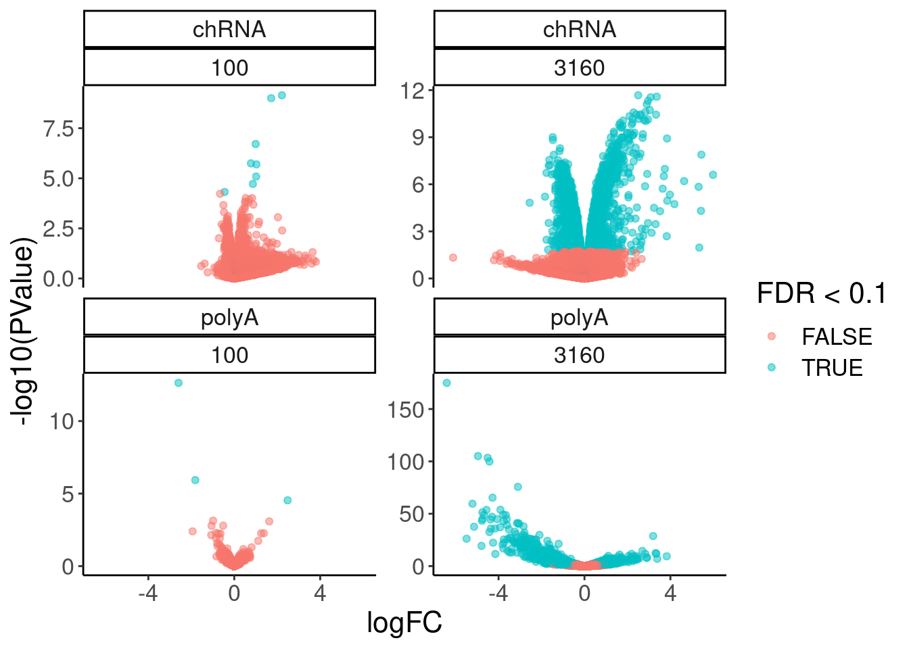
volcano.dat %>%
filter(!is.na(FDR)) %>%
ggplot(aes(x=logFC)) +
stat_ecdf() +
geom_vline(xintercept = 0) +
coord_cartesian(xlim=c(-2,2)) +
facet_wrap(dataset~dose.nM, scales = "free_y")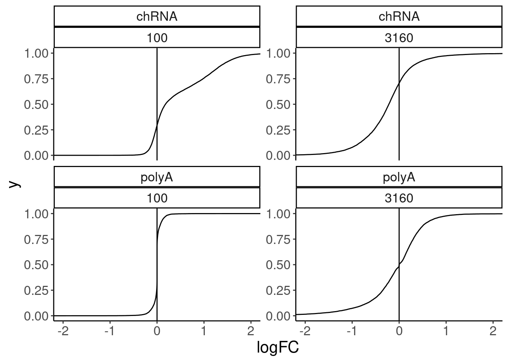
volcano.dat %>%
filter(!is.na(FDR)) %>%
ggplot( aes(x=logFC, y=-log10(PValue), color=FDR<0.1)) +
geom_point(alpha=0.5) +
facet_wrap(dataset~dose.nM, scales = "free_y")P.MA.count.labels <- volcano.dat %>%
filter(!is.na(FDR)) %>%
filter(dataset == "polyA") %>%
mutate(dose.nM = recode(dose.nM, `100`="100nM risdiplam", `3160`="3160nM risdiplam")) %>%
filter(FDR<0.01) %>%
mutate(sign = sign(logFC)) %>%
mutate(UpOrDown = recode(sign, `1`="Up", `-1`="Down")) %>%
count(dose.nM, sign, UpOrDown, .drop=F) %>%
mutate(y = Inf * sign) %>%
mutate(label = str_glue("{n} {UpOrDown}"))
P.MA <- volcano.dat %>%
filter(!is.na(FDR)) %>%
filter(dataset == "polyA") %>%
mutate(dose.nM = recode(dose.nM, `100`="100nM risdiplam", `3160`="3160nM risdiplam")) %>%
ggplot( aes(x=Estimate.expression.untreated, y=logFC, color=FDR<0.01)) +
geom_point(alpha=0.5) +
geom_hline(yintercept=0, linetype='dashed') +
scale_color_manual(values=c(`TRUE`="red", `FALSE`="gray")) +
geom_text(data=P.MA.count.labels, aes(y=y, label=label, vjust=sign), x=Inf, color="red", hjust=1) +
facet_wrap(~dose.nM, scales = "free_y") +
labs(x="Expression in DMSO control (log2CPM)", y="log2FoldChange,\nestimated from\ndose-response curve fit")
P.MA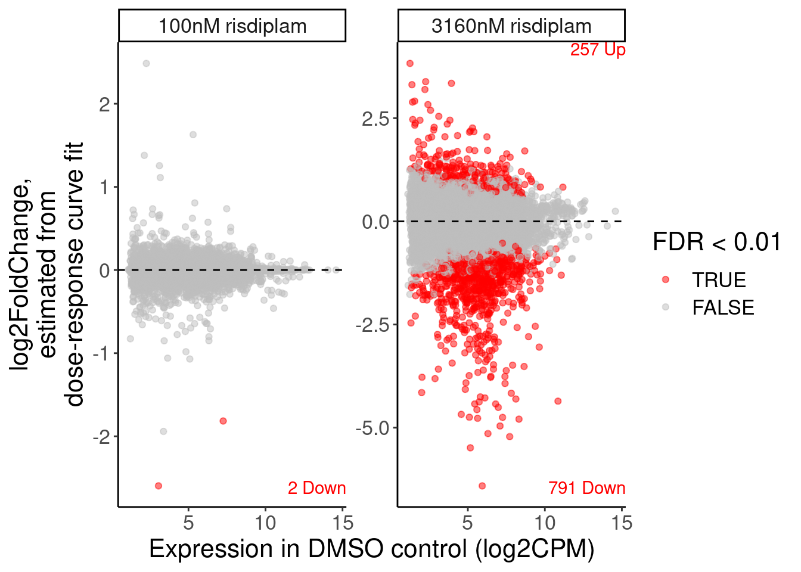
bar plots of predicted effects
#First see how my annotations match up with Gencode and Yang's annotations
Translated.GAGT_CassetteExons %>%
mutate(IsAnnotated = if_else(str_detect(SuperAnnotation,"Annotated"), "Annotated by Gencode", "Annotated by Yang")) %>%
replace_na(list(SemiSupergroupAnnotations="Unannotated by either", IsAnnotated="Unannotated by either")) %>%
count(Effect, IsAnnotated, SemiSupergroupAnnotations) %>%
ggplot(aes(x=Effect, y=n, fill=SemiSupergroupAnnotations)) +
geom_col(position="stack") +
facet_wrap(~IsAnnotated, scales="free_y", nrow = 3) +
Rotate_x_labels +
labs(title="Comparing my annotations to Gencode/Yang", x="My annotation by comparing translations", fill="Gencode/Yang's annotation")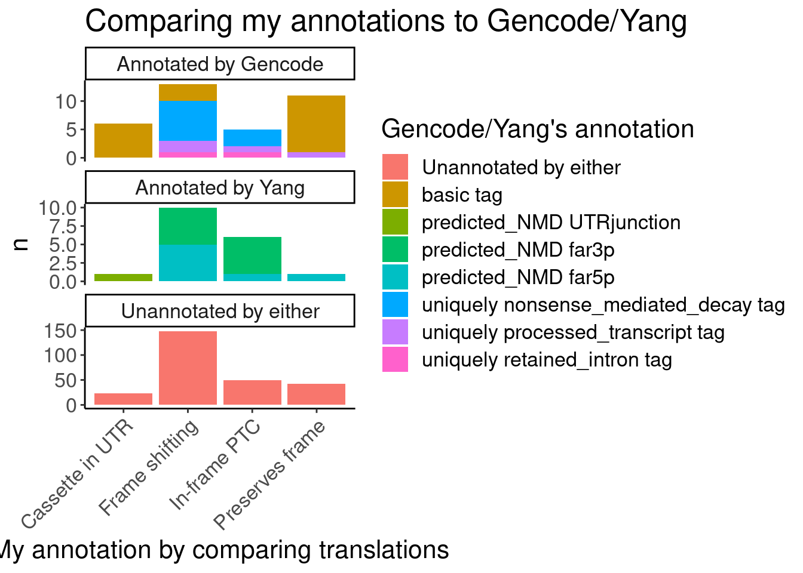
Ok, I feel good enough about my annotations which I think were slightly more careful than Yang’s but nonetheless mostly yield the same functional result - that the vast majority of unannotated junctions will be non-productive.
Now let’s plot something that I would want to include in manuscript
Translated.GAGT_CassetteExons$Effect %>% unique()[1] "Frame shifting" "In-frame PTC" "Cassette in UTR" "Preserves frame"P.bar.dat <- Translated.GAGT_CassetteExons %>%
mutate(IsAnnotated = if_else(str_detect(SuperAnnotation,"Annotated"), "Annotated by Gencode", "Unannotated", missing="Unannotated")) %>%
mutate(MergedEffect = case_when(
IsAnnotated == "Annotated by Gencode" & SemiSupergroupAnnotations=="basic tag" ~ "Productive",
IsAnnotated == "Annotated by Gencode" & !SemiSupergroupAnnotations=="basic tag" ~ "NMD",
TRUE ~ Effect
)) %>%
mutate(ColorEffect = if_else(MergedEffect %in% c("Productive", "Preserves frame", "Cassette in UTR"), "Productive", "NMD") )
#Check MYB
P.bar.dat %>%
filter(str_detect(gene, "ENSG00000118513"))# A tibble: 1 × 24
GAGTInt ExonStart_Upstr… ExonStop_Upstre… ExonStart_Casse… ExonStop_Casset…
<chr> <dbl> <dbl> <dbl> <dbl>
1 chr6:1351… 135198907 135199050 135199525 135199581
# … with 19 more variables: ExonStart_Downstream <dbl>,
# ExonStop_Downstream <dbl>, gene <chr>, transcript <chr>,
# SkipJuncName <chr>, IncludedTranslation <chr>, SkippedTranslation <chr>,
# TranslationDiff <int>, InFrame <lgl>, ExonRemainder <dbl>, Effect <chr>,
# Intron <chr>, NewAnnotation <chr>, symbol <chr>, SuperAnnotation <chr>,
# SemiSupergroupAnnotations <chr>, IsAnnotated <chr>, MergedEffect <chr>,
# ColorEffect <chr>P.bar <- P.bar.dat %>%
count(MergedEffect, ColorEffect, IsAnnotated) %>%
mutate(MergedEffect=factor(MergedEffect, levels=c("Productive", "Cassette in UTR","Preserves frame", "NMD", "In-frame PTC", "Frame shifting"))) %>%
mutate(IsAnnotated = recode(IsAnnotated, "Annotated by Gencode"="Annotated")) %>%
ggplot(aes(y=IsAnnotated, x=n, fill=MergedEffect, color=ColorEffect)) +
geom_col(position="stack", size=3) +
geom_text(aes(label=n), color='black', position=position_stack(vjust=0.5)) +
facet_wrap(~IsAnnotated, nrow=2, scales = "free") +
scale_color_manual(values=c(
"Productive" = "#1f78b4",
"NMD" = "#e31a1c"
)) +
scale_fill_manual(values=c(
"Productive"="#1f78b4",
"NMD"="#e31a1c",
"Frame shifting"="#fb6a4a",
"Cassette in UTR"="#deebf7",
"In-frame PTC"="#fcbba1",
"Preserves frame"="#a6cee3"
),
labels=c(
"Productive"="In annotated productive transcript",
"NMD"="In annotated NMD transcript",
"Frame shifting"="Frame shifting",
"Cassette in UTR"="Cassette in UTR",
"In-frame PTC"="In-frame PTC",
"Preserves frame"="Preserves frame"
)) +
scale_x_continuous(expand=c(0,0)) +
Rotate_x_labels +
guides(fill = guide_legend(order = 2),
color = guide_legend(order = 1)) +
theme(legend.box="vertical", legend.position = "bottom") +
theme(
strip.background = element_blank(),
strip.text.x = element_blank()
) +
labs(title="Predicted transcript effects of induced cassete exons", x="Number risdiplam-induced cassette exons", fill="Reason", y=NULL, color="Transcript effect")
P.bar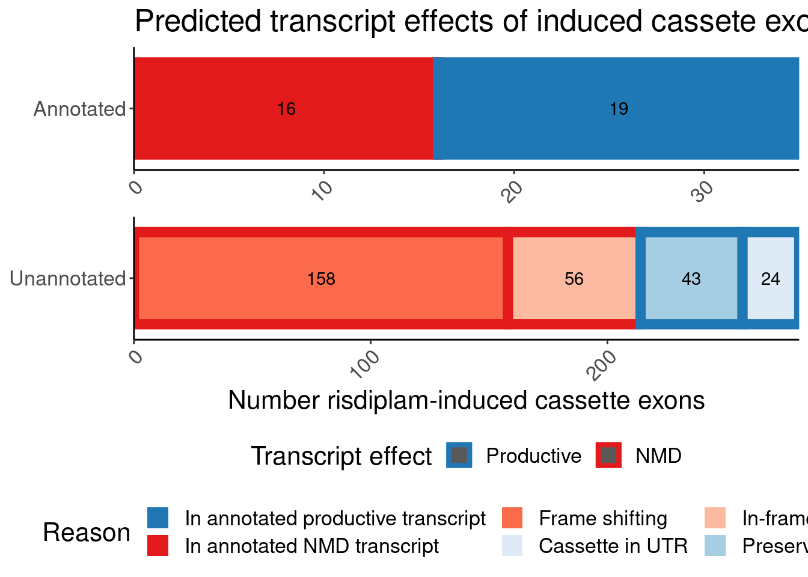
P.bar.dat %>%
filter(str_detect(gene, "ENSG00000188529"))# A tibble: 0 × 24
# … with 24 variables: GAGTInt <chr>, ExonStart_Upstream <dbl>,
# ExonStop_Upstream <dbl>, ExonStart_Cassette <dbl>, ExonStop_Cassette <dbl>,
# ExonStart_Downstream <dbl>, ExonStop_Downstream <dbl>, gene <chr>,
# transcript <chr>, SkipJuncName <chr>, IncludedTranslation <chr>,
# SkippedTranslation <chr>, TranslationDiff <int>, InFrame <lgl>,
# ExonRemainder <dbl>, Effect <chr>, Intron <chr>, NewAnnotation <chr>,
# symbol <chr>, SuperAnnotation <chr>, SemiSupergroupAnnotations <chr>, …I want to make one more version of the bar plot because it might more compact to manually annotate labels over the sub-bars instead of using fill colors
P.bar.simpler <- P.bar.dat %>%
count(MergedEffect, ColorEffect, IsAnnotated) %>%
mutate(MergedEffect=factor(MergedEffect, levels=c("Productive", "Cassette in UTR","Preserves frame", "NMD", "In-frame PTC", "Frame shifting"))) %>%
mutate(IsAnnotated = recode(IsAnnotated, "Annotated by Gencode"="Annotated")) %>%
ggplot(aes(y=IsAnnotated, x=n, fill=MergedEffect)) +
geom_col(position="stack", color='black') +
# geom_text(aes(label=str_glue("{MergedEffect}; n={n}")), color='black', position=position_stack(vjust=0.5)) +
facet_wrap(~IsAnnotated, nrow=2, scales = "free") +
scale_fill_manual(values=c(
"Productive"="#1f78b4",
"NMD"="#e31a1c",
"Frame shifting"="#fb9a99",
"Cassette in UTR"="#a6cee3",
"In-frame PTC"="#fb9a99",
"Preserves frame"="#a6cee3"
),
labels=c(
"Productive"="In annotated productive transcript",
"NMD"="In annotated NMD transcript",
"Frame shifting"="Frame shifting",
"Cassette in UTR"="Cassette in UTR",
"In-frame PTC"="In-frame PTC",
"Preserves frame"="Preserves frame"
)) +
scale_x_continuous(expand=c(0,0)) +
Rotate_x_labels +
guides(fill = guide_legend(order = 2),
color = guide_legend(order = 1)) +
theme(legend.position = "none") +
theme(
strip.background = element_blank(),
strip.text.x = element_blank()
) +
labs(title="Predicted transcript effects of induced cassete exons", x="Number risdiplam-induced cassette exons", fill="Reason", y=NULL, color="Transcript effect")
P.bar.simpler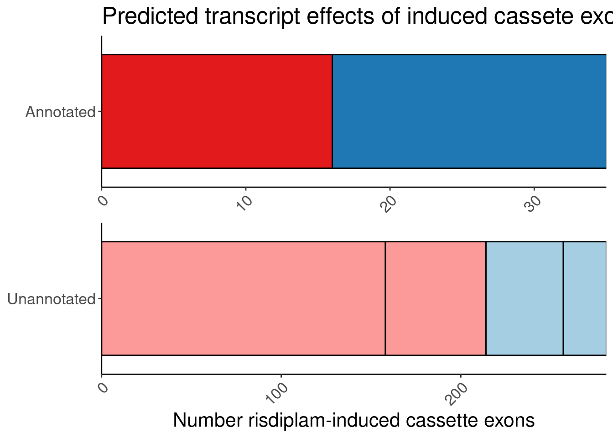
One more version… with fixed scale… borrowed code from here
position_stack_and_nudge <- function(x = 0, y = 0, vjust = 1, reverse = FALSE) {
ggproto(NULL, PositionStackAndNudge,
x = x,
y = y,
vjust = vjust,
reverse = reverse
)
}
#' @rdname ggplot2-ggproto
#' @format NULL
#' @usage NULL
#' @noRd
PositionStackAndNudge <- ggproto("PositionStackAndNudge", PositionStack,
x = 0,
y = 0,
setup_params = function(self, data) {
c(
list(x = self$x, y = self$y),
ggproto_parent(PositionStack, self)$setup_params(data)
)
},
compute_layer = function(self, data, params, panel) {
# operate on the stacked positions (updated in August 2020)
data = ggproto_parent(PositionStack, self)$compute_layer(data, params, panel)
x_orig <- data$x
y_orig <- data$y
# transform only the dimensions for which non-zero nudging is requested
if (any(params$x != 0)) {
if (any(params$y != 0)) {
data <- transform_position(data, function(x) x + params$x, function(y) y + params$y)
} else {
data <- transform_position(data, function(x) x + params$x, NULL)
}
} else if (any(params$y != 0)) {
data <- transform_position(data, function(x) x, function(y) y + params$y)
}
data$nudge_x <- data$x
data$nudge_y <- data$y
data$x <- x_orig
data$y <- y_orig
data
},
compute_panel = function(self, data, params, scales) {
ggproto_parent(PositionStack, self)$compute_panel(data, params, scales)
}
)P.bar.simpler.fixed <- P.bar.dat %>%
count(MergedEffect, ColorEffect, IsAnnotated) %>%
mutate(MergedEffect=factor(MergedEffect, levels=c("Productive", "Cassette in UTR","Preserves frame", "NMD", "In-frame PTC", "Frame shifting"))) %>%
mutate(IsAnnotated = recode(IsAnnotated, "Annotated by Gencode"="Annotated")) %>%
ggplot(aes(y=IsAnnotated, x=n, fill=MergedEffect)) +
geom_col(position="stack", color='black') +
# geom_text(aes(label=n), color='black', position=position_stack(vjust=0.5)) +
# geom_text_repel(aes(label=MergedEffect), color='black', position = position_stack_and_nudge(vjust = 0.5, y = 0.2),
# direction = 'x') +
scale_fill_manual(values=c(
"Productive"="#1f78b4",
"NMD"="#e31a1c",
"Frame shifting"="#fb9a99",
"Cassette in UTR"="#a6cee3",
"In-frame PTC"="#fb9a99",
"Preserves frame"="#a6cee3"
),
labels=c(
"Productive"="In annotated productive transcript",
"NMD"="In annotated NMD transcript",
"Frame shifting"="Frame shifting",
"Cassette in UTR"="Cassette in UTR",
"In-frame PTC"="In-frame PTC",
"Preserves frame"="Preserves frame"
)) +
scale_x_continuous(expand=c(0,0)) +
Rotate_x_labels +
guides(fill = guide_legend(order = 2),
color = guide_legend(order = 1)) +
theme(legend.position = "none") +
theme(
strip.background = element_blank(),
strip.text.x = element_blank()
) +
labs(title="Predicted transcript effects of induced cassete exons", x="Number risdiplam-induced cassette exons", fill="Reason", y=NULL, color="Transcript effect") +
facet_wrap(~IsAnnotated, nrow=2, scales = "free_y")
P.bar.simpler.fixed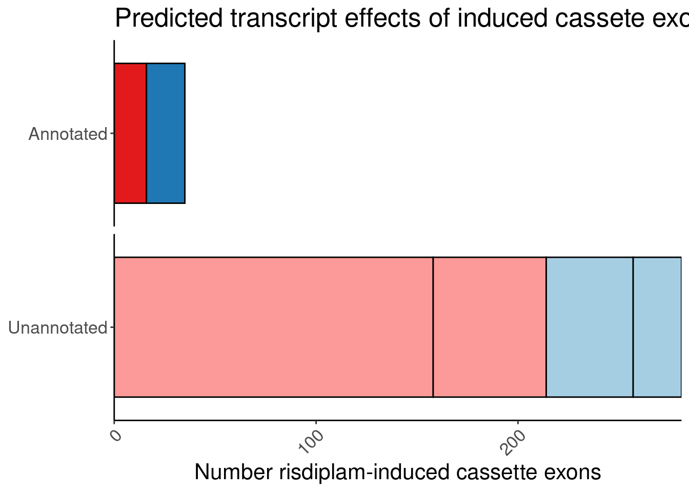
A barplots of expression effect in chRNA and polyA
P.boxplot.dat <- P.bar.dat %>%
dplyr::select(-symbol) %>%
mutate(gene = str_replace(gene, "(^.+?)\\..+?$", "\\1")) %>%
left_join(
volcano.dat %>%
filter(dose.nM == 3160) %>%
distinct(gene, dose.nM, dataset, .keep_all=T) %>%
dplyr::select(gene, dose.nM, dataset, logFC) %>%
pivot_wider(names_from="dataset", values_from="logFC"),
by="gene"
) %>%
left_join(ensembl_to_symbols, by=c("gene"="ensembl_gene_id")) %>%
# filter(hgnc_symbol %in% c("HTT", "SMN2", "GALC", "STAT1", "KCNT2", "FHOD3", "FOXM1))
dplyr::select(GAGTInt, ExonStart_Cassette, ExonStop_Cassette, gene, hgnc_symbol, chRNA, polyA, ColorEffect, MergedEffect, IsAnnotated) %>%
gather("dataset", "log2FC", chRNA, polyA)
P.box.small <- P.boxplot.dat %>%
mutate(ColorEffect = factor(ColorEffect, levels=c("Productive", "NMD"))) %>%
ggplot(aes(y=log2FC, x=ColorEffect, color=ColorEffect)) +
geom_hline(yintercept=0) +
geom_boxplot(outlier.shape=NA, alpha=1, fill="white") +
geom_segment(x="Productive", xend="NMD", y=2.5, yend=2.5, color='black') +
geom_point(position=position_jitterdodge(jitter.width=0.5), alpha=0.3) +
geom_text(data = . %>%
group_by(dataset) %>%
do(w = wilcox.test(log2FC~ColorEffect, data=., paired=FALSE)) %>%
summarise(dataset, Wilcox = format.pval(w$p.value, digits=3)) %>%
ungroup() %>%
mutate(label=str_glue("P={Wilcox}")),
aes(label=label, group=NULL),
x=1.5, y=2.5, color='black', vjust=-1) +
scale_color_manual(values=c( "#1f78b4","#e31a1c")) +
facet_wrap(~dataset) +
labs(y=expression("Host gene "*log["2"]*"FC"), x="Predicted transcript effect") +
Rotate_x_labels +
theme(legend.position="none")
P.box.small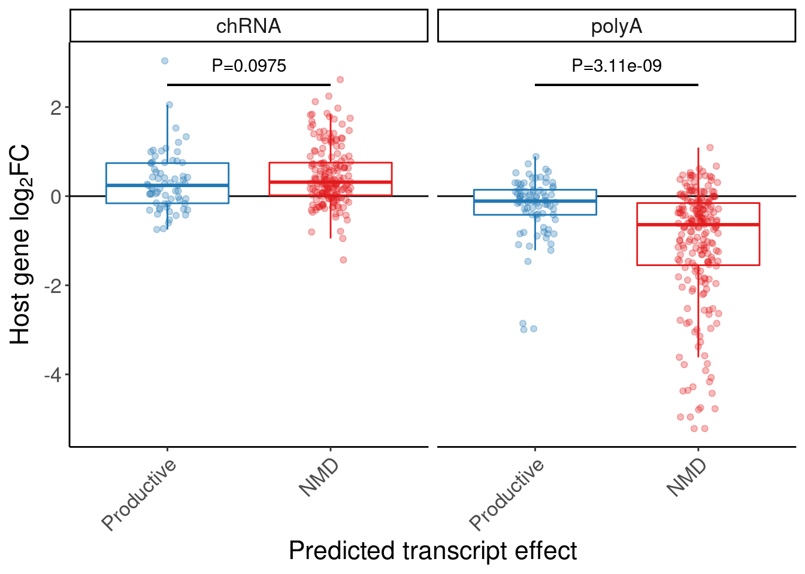
P.box <- P.boxplot.dat %>%
mutate(ColorEffect = factor(ColorEffect, levels=c("Productive", "NMD"))) %>%
ggplot(aes(y=log2FC, x=ColorEffect, color=interaction(IsAnnotated, ColorEffect), group=interaction(IsAnnotated, ColorEffect))) +
geom_hline(yintercept=0) +
geom_boxplot(outlier.shape=NA, alpha=1, fill="white") +
geom_segment(x="Productive", xend="NMD", y=2.5, yend=2.5, color='black') +
geom_point(position=position_jitterdodge(jitter.width=0.5), alpha=0.3) +
geom_text(data = . %>%
group_by(dataset) %>%
do(w = wilcox.test(log2FC~ColorEffect, data=., paired=FALSE)) %>%
summarise(dataset, Wilcox = format.pval(w$p.value, digits=3)) %>%
ungroup() %>%
mutate(label=str_glue("P={Wilcox}")),
aes(label=label, group=NULL),
x=1.5, y=2.5, color='black', vjust=-1) +
scale_color_manual(values=c( "#1f78b4", "#a6cee3", "#e31a1c", "#fb9a99")) +
facet_wrap(~dataset) +
labs(y=expression("Host gene "*log["2"]*"FC"), x="Predicted transcript effect") +
Rotate_x_labels +
theme(legend.position="none")
P.box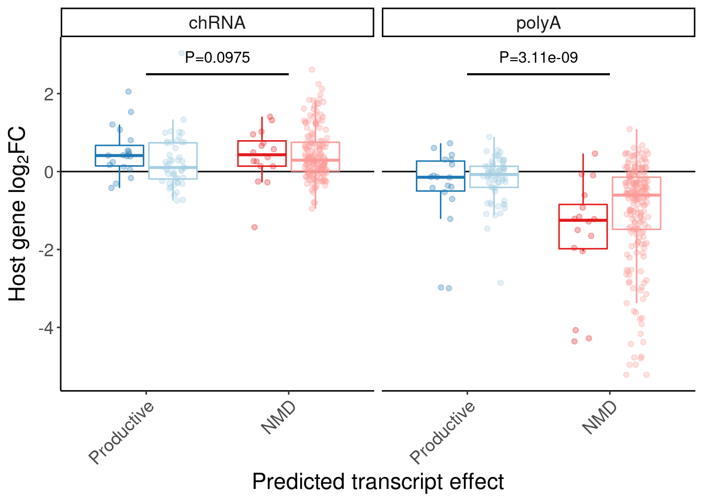
Let’s quickly check some genes of interest in this set of NMD-predicted cassette exon targets
P.boxplot.dat %>%
filter(ColorEffect == "NMD") %>%
filter(hgnc_symbol %in% c("HTT", "SMN2", "GALC", "STAT1", "KCNT2", "FHOD3", "FOXM1", "FOS", "PIEZO2", "MYB", "SRSF10"))# A tibble: 12 × 10
GAGTInt ExonStart_Casse… ExonStop_Casset… gene hgnc_symbol ColorEffect
<chr> <dbl> <dbl> <chr> <chr> <chr>
1 chr12:285966… 2861378 2861412 ENSG… FOXM1 NMD
2 chr18:107021… 10702545 10702669 ENSG… PIEZO2 NMD
3 chr18:109112… 10963754 10963891 ENSG… PIEZO2 NMD
4 chr2:1909770… 190978527 190978606 ENSG… STAT1 NMD
5 chr4:3213736… 3213621 3213736 ENSG… HTT NMD
6 chr6:1351995… 135199525 135199581 ENSG… MYB NMD
7 chr12:285966… 2861378 2861412 ENSG… FOXM1 NMD
8 chr18:107021… 10702545 10702669 ENSG… PIEZO2 NMD
9 chr18:109112… 10963754 10963891 ENSG… PIEZO2 NMD
10 chr2:1909770… 190978527 190978606 ENSG… STAT1 NMD
11 chr4:3213736… 3213621 3213736 ENSG… HTT NMD
12 chr6:1351995… 135199525 135199581 ENSG… MYB NMD
# … with 4 more variables: MergedEffect <chr>, IsAnnotated <chr>,
# dataset <chr>, log2FC <dbl>P.boxplot.dat %>%
filter(ColorEffect == "NMD") %>%
pull(hgnc_symbol) %>% unique() [1] "RERE" "PIK3CD" "SPEN" "FUCA1" "TOE1"
[6] "NSUN4" "IL12RB2" "COL24A1" "DIPK1A" "POGZ"
[11] "VAMP4" "COP1" "SOAT1" "DHX9" "NIBAN1"
[16] "PLA2G4A" "DENND1B" "MDM4" "INTS7" "MLLT10"
[21] "ARHGAP12" "MARCHF8" "VDAC2" "MMS19" "DNMBP"
[26] "NT5C2" "PDCD4" "CASP7" "WDR11" "DENND5A"
[31] "BTBD10" "CSTF3" "APIP" "MARK2" "UVRAG"
[36] "EMSY" "ALG8" "HIKESHI" "CEP57" "CASP4"
[41] "SIK3" "ERC1" "FOXM1" "PLEKHG6" "KIF21A"
[46] "GXYLT1" "PPHLN1" "TMBIM6" "GTSF1" "DGKA"
[51] "PLXNC1" "PPP1CC" "HECTD4" "RBM19" "MED13L"
[56] "SPPL3" "ZCCHC8" "DDX51" "POLR1D" "SUPT20H"
[61] "COG3" "FNDC3A" "SPRYD7" "TDRD3" "MZT1"
[66] "MYCBP2" "BIVM-ERCC5" "ERCC5" "RAB2B" "SOS2"
[71] "CDKL1" "PPP2R5E" "COQ6" "ITPK1" "NIPA1"
[76] "SNAP23" "TCF12" "CSNK1G1" "" "CLPX"
[81] "SCAPER" "PDE8A" "PDXDC1" "ABCC1" "TNRC6A"
[86] "CYLD" "OGFOD1" "SLC7A6" "SF3B3" "PIEZO1"
[91] "SCO1" "BLTP2" "NSRP1" "UTP6" "MYO1D"
[96] "HDAC5" "LUC7L3" "TRIM25" "DDX42" "GRB2"
[101] "PIEZO2" "KDSR" "AKAP8L" "DDX49" "FBL"
[106] "SNRPD2" "BICRA" "ADAM17" "LDAH" "ATAD2B"
[111] "MRPL33" "BABAM2" "MEMO1" "FAM161A" "GCFC2"
[116] "KCMF1" "C2orf49" "DARS1" "MARCHF7" "TANK"
[121] "DCAF17" "STAT1" "ANKRD44" "TYW5" "STRADB"
[126] "IDH1" "COPS7B" "TASP1" "XRN2" "PIGU"
[131] "DNTTIP1" "SLC9A8" "PTPN1" "IFNGR2" "TNRC6B"
[136] "SLC25A17" "EP300" "NUP50" "TAMM41" "GOLGA4"
[141] "LARS2" "PXK" "CBLB" "CD47" "CIP2A"
[146] "TMEM39A" "SLC41A3" "DNAJC13" "RNF13" "TFRC"
[151] "NELFA" "HTT" "ARAP2" "SEC31A" "NFKB1"
[156] "IRF2" "EXOC3" "LPCAT1" "CCT5" "SKP2"
[161] "OXCT1" "ERCC8" "PIK3R1" "GTF2H2" "ANKRA2"
[166] "TBCA" "TENT2" "DHFR" "MCTP1" "FAM174A"
[171] "FER" "HSD17B4" "SNX24" "DIAPH1" "JARID2"
[176] "C6orf62" "KIFC1" "CUL7" "EFHC1" "RARS2"
[181] "MDN1" "USP45" "CRYBG1" "RPF2" "REV3L"
[186] "MYB" "WDR27" "HYCC1" "IGF2BP3" "AVL9"
[191] "NT5C3A" "ELMO1" "PSMA2" "ZNF138" "CPSF4"
[196] "MDFIC" "SSBP1" "MCPH1" "PCM1" "CHRNA6"
[201] "PRKDC" "PDE7A" "MTERF3" "UBR5" "NUDCD1"
[206] "TAF2" "FOCAD" "TJP2" "GNG10" "FBXW2"
[211] "DENND1A" "PBX3" "DPM2" "FNBP1" "RALGDS"
[216] "EHMT1" polyA vs chRNA gene expression effect scatter
Threshold <- log2(1.5)
Scatter.dat <- volcano.dat %>%
filter(dose.nM == 3160) %>%
distinct(gene, dose.nM, dataset, .keep_all=T) %>%
dplyr::select(gene, dose.nM, dataset, logFC, PValue, FDR) %>%
pivot_wider(names_from="dataset", values_from=c("logFC", "PValue", "FDR")) %>%
mutate(Category = case_when(
# FDR_polyA < 0.1 & !(FDR_chRNA < 0.1 & sign(logFC_chRNA)==sign(logFC_polyA)) ~ "polyA-specific change",
FDR_polyA <0.1 & FDR_chRNA <0.1 & logFC_polyA-logFC_chRNA<Threshold & logFC_polyA-logFC_chRNA > -Threshold ~ "txn",
FDR_polyA < 0.1 & logFC_polyA-logFC_chRNA>Threshold ~ "post-txn up",
FDR_polyA < 0.1 & logFC_polyA-logFC_chRNA < -Threshold ~ "post-txn down",
TRUE ~ "Other"
))
Scatter.dat %>%
filter(!is.na(logFC_polyA) & !is.na(logFC_chRNA)) %>%
count(Category)# A tibble: 4 × 2
Category n
<chr> <int>
1 Other 6928
2 post-txn down 628
3 post-txn up 340
4 txn 544Enrichment.test <- Scatter.dat %>%
filter(!is.na(logFC_polyA) & !is.na(logFC_chRNA)) %>%
left_join(
P.boxplot.dat %>%
dplyr::select(gene, ColorEffect) %>%
filter(ColorEffect == "NMD"),
by="gene"
) %>%
mutate(IsPostTxn = Category == "post-txn down") %>%
mutate(IsNMD = ColorEffect == "NMD") %>%
replace_na(list(IsNMD=F)) %>%
count(IsPostTxn, IsNMD) %>%
pivot_wider(names_from="IsPostTxn", values_from="n") %>%
column_to_rownames("IsNMD") %>%
fisher.test()
library(ggnewscale)
P.scatter <- Scatter.dat %>%
ggplot(aes(x=logFC_chRNA, y=logFC_polyA)) +
geom_abline(color='gray', slope=1, intercept=0) +
geom_point(alpha=0.3, aes(color=Category)) +
scale_color_manual(
values=c(
"Other"="#bdbdbd",
"post-txn up"="#6a3d9a",
"post-txn down"="#e31a1c",
"txn"="#b15928"
),
labels=c(
"Other"="Unchanged; n=6928)",
"post-txn up"="Post txn up; n=340",
"post-txn down"="Post txn down; n=628",
"txn"="Txn change; n=544"
),
name="Expression change type"
) +
guides(colour = guide_legend(override.aes = list(alpha = 1))) +
new_scale_color() +
geom_point(
data = Scatter.dat %>%
inner_join(
P.boxplot.dat %>%
dplyr::select(gene, ColorEffect) %>%
filter(ColorEffect == "NMD"),
by="gene"
) %>%
distinct(gene, .keep_all=T),
aes(color='NMD targets predicted from splicing changes'),
fill="#e31a1c",
shape=21
) +
scale_color_manual(values=c('NMD targets predicted from splicing changes'="black"), labels=c("NMD targets predicted from splicing changes"=str_wrap("NMD targets predicted from splicing changes", 20)), name=NULL) +
scale_x_continuous(limits=c(-3,3)) +
scale_y_continuous(limits=c(-3,3)) +
labs(x=expression("chRNA "*log["2"]*"FC"), y=expression("polyA "*log["2"]*"FC"), caption=str_wrap(str_glue("post-txn down 14.9 fold enriched for set of NMD targets predicted from splicing, P<2x10-16, hypergeometric test"),40)) +
coord_fixed() +
theme_bw()
P.scatter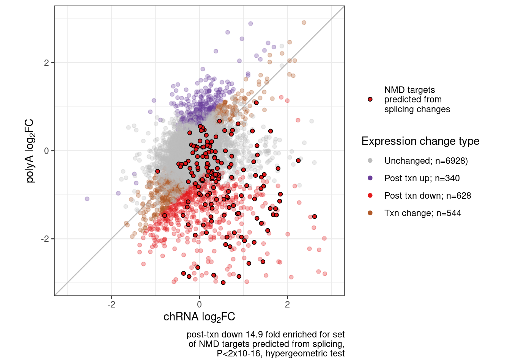
Scatter.dat %>%
filter(gene == "ENSG00000188529")# A tibble: 1 × 9
gene dose.nM logFC_chRNA logFC_polyA PValue_chRNA PValue_polyA FDR_chRNA
<chr> <dbl> <dbl> <dbl> <dbl> <dbl> <dbl>
1 ENSG00000… 3160 -0.415 -0.596 0.000936 0.000414 0.00930
# … with 2 more variables: FDR_polyA <dbl>, Category <chr>Induction of GAGT introns plots
first read in some data
ClusterMax.mat <- leafcutter.counts %>%
as.data.frame() %>%
rownames_to_column("junc") %>%
mutate(cluster=str_replace(junc, "^(.+?):.+?:.+?:(.+)$", "\\1_\\2")) %>%
group_by(cluster) %>%
mutate(across(where(is.numeric), sum)) %>%
ungroup() %>%
dplyr::select(junc, everything(), -cluster) %>%
column_to_rownames("junc") %>%
as.matrix()
PSI.df <- (leafcutter.counts / as.numeric(ClusterMax.mat) * 100) %>%
signif() %>%
as.data.frame() %>%
rownames_to_column("Leafcutter.ID") %>%
mutate(Intron = str_replace(Leafcutter.ID, "(.+?):(.+?):(.+?):clu_.+?_([+-])$", "\\1:\\2:\\3:\\4"))
Intron.Donors <- fread("../code/SmallMolecule/leafcutter/JuncfilesMerged.annotated.basic.bed.5ss.tab.gz", col.names = c("Intron", "DonorSeq", "DonorScore")) %>%
mutate(Intron = str_replace(Intron, "(.+?)_(.+?)_(.+?)_(.+?)::.+?$", "\\1:\\2:\\3:\\4"))
PSI.tidy <- PSI.df %>%
left_join(Intron.Donors) %>%
gather("Sample", "PSI",contains("_")) %>%
inner_join(
leafcutter.counts %>%
as.data.frame() %>%
rownames_to_column("Leafcutter.ID") %>%
mutate(Intron = str_replace(Leafcutter.ID, "(.+?):(.+?):(.+?):clu_.+?_([+-])$", "\\1:\\2:\\3:\\4")) %>%
gather("Sample", "Counts",contains("_"))
) %>%
separate(Sample, into=c("treatment", "dose.nM", "Cell.type", "LibraryType", "rep"), sep="_", convert=T) %>%
replace_na(list(dose.nM=0))- Plot of induction of GAGT introns specifically in chRNA and polyA (main)
Mean.PSI <- PSI.tidy %>%
group_by(Intron, dose.nM, DonorSeq, LibraryType) %>%
summarise(PSI=mean(PSI, na.rm=T)) %>%
ungroup()
inner_join(
Mean.PSI,
Mean.PSI %>%
filter(dose.nM==0) %>%
dplyr::select(Intron, DonorSeq, PSI, LibraryType),
by=c("Intron", "DonorSeq", "LibraryType")
) %>%
mutate(Is.GA.GT = substr(DonorSeq, 3,4)) %>%
mutate(DeltaPSI=(PSI.x-PSI.y)) %>%
group_by(dose.nM, Is.GA.GT, LibraryType) %>%
summarise(PSI.summary = mean(DeltaPSI, na.rm=T)) %>%
ungroup() %>%
drop_na() %>%
ggplot(aes(x=dose.nM, y=PSI.summary, color=Is.GA.GT=="GA", group=interaction(Is.GA.GT, LibraryType))) +
geom_line(aes(linetype=LibraryType)) +
geom_point() +
scale_x_continuous(trans="log1p", limits=c(0, 10000), breaks=c(10000, 3160, 1000, 316, 100, 31.6, 10, 3.16, 0), labels=c(10000, 3160, 1000, 316, 100, 31.6, 10, 3.16, 0)) +
# facet_wrap(~Is.GA.GT, scales = "free_y") +
# scale_y_continuous(trans="log1p") +
theme(axis.text.x = element_text(angle = 45, vjust = 1)) +
labs(y="Mean deltaPSI", caption=str_wrap("Average DeltaPSI across all introns", 30))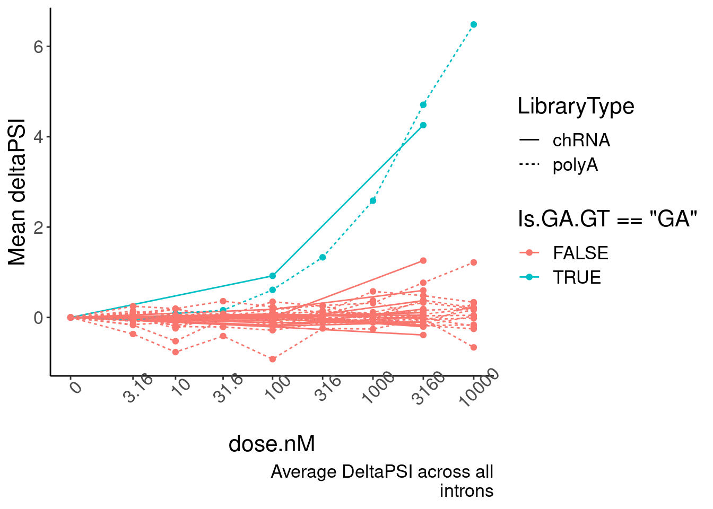
Ok now let’s bootstrap some confidence intervals…
dat.to.plot.GAGT.enrichment <- inner_join(
Mean.PSI,
Mean.PSI %>%
filter(dose.nM==0) %>%
dplyr::select(Intron, DonorSeq, PSI, LibraryType),
by=c("Intron", "DonorSeq", "LibraryType")
) %>%
mutate(Is.GA.GT = substr(DonorSeq, 3,4)) %>%
mutate(DinculeotideCategory = case_when(
Is.GA.GT == "AG" ~ "AG|GU",
Is.GA.GT == "GA" ~ "GA|GU",
TRUE ~ "not (AG or GA)|GU"
)) %>%
mutate(DeltaPSI=(PSI.x-PSI.y))
# Bootstrap resamples for confidence intervals
NumIterations <- 200
ResampleResults <- list()
for (i in 1:NumIterations){
df <- dat.to.plot.GAGT.enrichment %>%
group_by(dose.nM, DinculeotideCategory, LibraryType) %>%
sample_frac(replace=T) %>%
ungroup() %>%
group_by(dose.nM, DinculeotideCategory, LibraryType) %>%
summarise(PSI.summary = mean(DeltaPSI, na.rm=T)) %>%
ungroup() %>%
drop_na()
ResampleResults[[i]] <- df
}
dat.to.plot.GAGT.enrichment %>% distinct(Intron, .keep_all=T) %>%
count(DinculeotideCategory)
labels <- c("AG|GU"="AG|GU; n=90011", "GA|GU"="GA|GU; n=3263", "not (AG or GA)|GU"= "not (AG or GA)|GU; n=63548")
P.MeanDeltaPSI <- bind_rows(ResampleResults, .id="iteration") %>%
group_by(dose.nM, DinculeotideCategory, LibraryType) %>%
summarise(enframe(quantile(PSI.summary, c(0.025, 0.5, 0.975)), "ResampledQuantile", "MeanDeltaPSI")) %>%
pivot_wider(names_from="ResampledQuantile", values_from="MeanDeltaPSI") %>%
ggplot(aes(x=dose.nM, y=`50%`, color=DinculeotideCategory,linetype=LibraryType, group=interaction(DinculeotideCategory, LibraryType))) +
geom_ribbon(aes(ymin=`2.5%`, ymax=`97.5%`, fill=DinculeotideCategory), alpha=0.1, size=0.5) +
geom_line(size=1) +
geom_point() +
scale_colour_brewer(type="qual", palette = "Dark2", labels=labels, name="5'ss motif") +
scale_fill_brewer(type="qual", palette = "Dark2", labels=labels, name="5'ss motif") +
# facet_wrap(~Is.GA.GT, scales = "free_y") +
# scale_y_continuous(trans="log1p") +
scale_x_continuous(trans="log1p", limits=c(0, 10000), breaks=c(10000, 3160, 1000, 316, 100, 31.6, 10, 3.16, 0), labels=rev(c("0", "3.16","10","31.6","100", "316", "1000", "3160", "10000"))) +
# scale_x_break(c(2,2)) +
# theme(axis.text.x.top = element_blank(),
# axis.ticks.x.top = element_blank(),
# axis.line.x.top = element_blank(),
# plot.background = element_blank()) +
Rotate_x_labels +
labs(y=expression("Mean "*Delta*"PSI"), x="[risdiplam] (nanomolar)")
P.MeanDeltaPSI- spearman correlation distribution of GAGT introns compared to all others (supplement)
SpearmanCorr <- read_tsv("../code/SmallMolecule/FitModels/Data/polyA_GAGTIntrons.tsv.gz")
SpearmanCorr %>%
distinct(Intron, .keep_all=T) %>%
filter(substr(DonorSeq, 3,4)=="GA") %>%
filter(q<0.1) %>%
mutate(numberInts = n()) %>%
filter(spearman == min(spearman))# A tibble: 1 × 16
Intron Leafcutter.ID DonorSeq DonorScore treatment dose.nM Cell.type
<chr> <chr> <chr> <dbl> <chr> <dbl> <chr>
1 chr19:58571429:… chr19:585714… AGGAGTA… 2.87 DMSO 0 LCL
# … with 9 more variables: LibraryType <chr>, rep <dbl>, PSI <dbl>,
# Counts <dbl>, n <dbl>, spearman <dbl>, spearman.p <dbl>, q <dbl>,
# numberInts <int>Translated.GAGT_CassetteExons %>% nrow()[1] 316P.spearman.dist <- SpearmanCorr %>%
distinct(Intron, .keep_all=T) %>%
mutate(Is.GA.GT = substr(DonorSeq, 3,4)) %>%
mutate(DinculeotideCategory = case_when(
Is.GA.GT == "AG" ~ "AG|GU",
Is.GA.GT == "GA" ~ "GA|GU",
TRUE ~ "not (AG or GA)|GU"
)) %>%
filter(!is.na(spearman)) %>%
# mutate(DinculeotideCategory = factor(DinculeotideCategory, levels=c("GA|GU", "AG|GU", "not (AG or GA)|GU"))) %>%
arrange(desc(DinculeotideCategory)) %>%
ggplot(aes(x=spearman, group=Is.GA.GT, color=DinculeotideCategory)) +
geom_vline(xintercept=0) +
scale_colour_brewer(type="qual", palette = "Dark2", labels=labels, name="5'ss motif") +
stat_ecdf() +
labs(y="Cumulative fraction", x="dose:PSI spearman coef", caption=str_wrap("641 GA|GU induced introns with significant spearman correlation (FDR<10%, corresponding to spearman coef > 0.775) were used for futher interpretion of effects. 305 of which were classified as cassette exons, translated, and PSI was recalculated from junction trios", 40))
P.spearman.dist 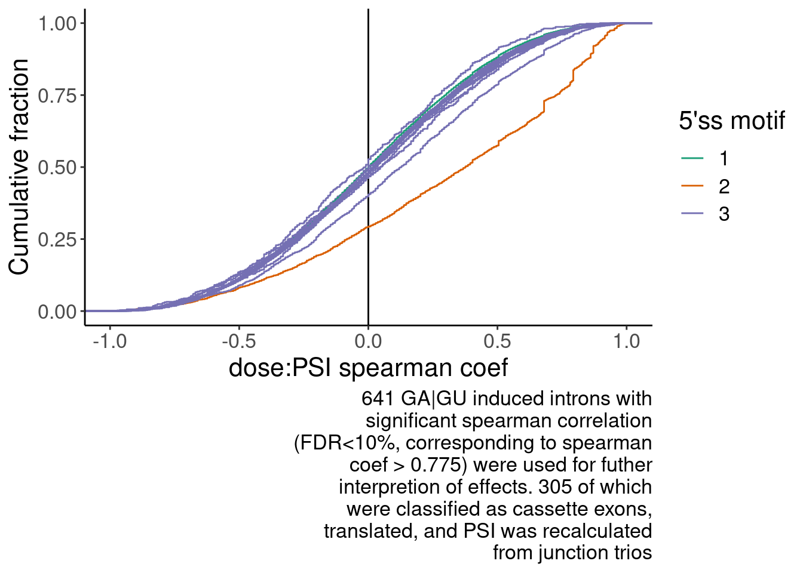
splicing vs expression beta faceted by predicted splicing effect
##NEEDS FIXING
PolyA.SplicingEffects.Annotationed <- small.molecule.dat.introns %>%
dplyr::select(1:4) %>%
inner_join(
Translated.GAGT_CassetteExons,
by=c("junc"="GAGTInt")
)
P.scatter.byPrediction.dat <- Scatter.dat %>%
filter(dose.nM==3160) %>%
inner_join(
P.boxplot.dat %>%
filter(dataset=="polyA") %>%
dplyr::select(gene, ColorEffect, MergedEffect),
by="gene"
) %>%
inner_join(
PolyA.SplicingEffects.Annotationed %>%
filter(param == "Pred_3160") %>%
dplyr::select(junc, gene, Estimate) %>%
mutate(gene = str_replace(gene, "(^.+?)\\..+?$", "\\1")),
by="gene"
)
MergedEffectLabels <- c(
"Productive"="In annotated productive transcript",
"NMD"="In annotated NMD transcript",
"Frame shifting"="Frame shifting",
"Cassette in UTR"="Cassette in UTR",
"In-frame PTC"="In-frame PTC",
"Preserves frame"="Preserves frame",
"All NMD"="All predicted NMD exons",
"All productive"="All predicted productive exons"
)
P.scatter.byPrediction <- bind_rows(
P.scatter.byPrediction.dat %>%
mutate(color=MergedEffect),
P.scatter.byPrediction.dat %>%
mutate(color=MergedEffect) %>%
mutate(MergedEffect=recode(ColorEffect, !!!c("NMD"="All NMD", "Productive"="All productive")))
) %>%
mutate(MergedEffect = factor(MergedEffect, levels=c("Productive", "Preserves frame", "Cassette in UTR", "All productive","NMD", "Frame shifting", "In-frame PTC", "All NMD"))) %>%
ggplot(aes(x=Estimate, y=logFC_polyA, color=color)) +
geom_hline(yintercept=0) +
geom_point() +
scale_color_manual(values=c(
"Productive"="#1f78b4",
"NMD"="#e31a1c",
"Frame shifting"="#fb9a99",
"Cassette in UTR"="#a6cee3",
"In-frame PTC"="#fb9a99",
"Preserves frame"="#a6cee3"
),
labels=MergedEffectLabels) +
geom_text( data = . %>%
group_by(MergedEffect) %>%
summarise(cor=cor.test(Estimate,logFC_polyA)[["estimate"]], pval=cor.test(Estimate,logFC_polyA, method='s')[["p.value"]]) %>%
mutate(R = signif(cor, 3), P=format.pval(pval, 3)) %>%
mutate(label = str_glue("rho:{R}\nP:{P}")),
aes(x=-Inf, y=-Inf, label=label),
hjust=-.1, vjust=-0.1, color='black'
) +
# facet_wrap(~MergedEffect, labeller = as_labeller(MergedEffectLabels)) +
facet_wrap(~MergedEffect, nrow=2, labeller = as_labeller(MergedEffectLabels, default=label_wrap_gen(20))) +
theme(legend.position="none") +
labs(y=expression("host gene "*log["2"]*"FC, polyA RNA"), x=expression(Delta*"PSI"), caption="[risdiplam]=3160nM, Effects measured in polyA RNA") +
Rotate_x_labels
P.scatter.byPrediction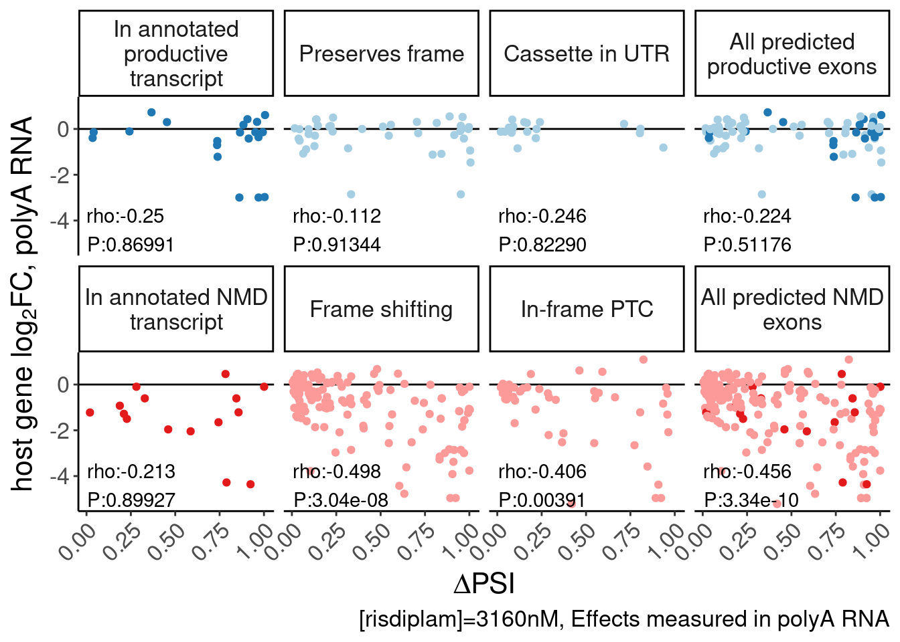
Same thing but use expression effects in chRNA.
P.scatter.byPrediction.dat.chRNA <- Scatter.dat %>%
filter(dose.nM==3160) %>%
inner_join(
P.boxplot.dat %>%
filter(dataset=="polyA") %>%
dplyr::select(gene, ColorEffect, MergedEffect),
by="gene"
) %>%
inner_join(
PolyA.SplicingEffects.Annotationed %>%
filter(param=="Pred_3160") %>%
dplyr::select(junc, gene, Estimate) %>%
mutate(gene = str_replace(gene, "(^.+?)\\..+?$", "\\1")),
by="gene"
)
MergedEffectLabels <- c(
"Productive"="In annotated productive transcript",
"NMD"="In annotated NMD transcript",
"Frame shifting"="Frame shifting",
"Cassette in UTR"="Cassette in UTR",
"In-frame PTC"="In-frame PTC",
"Preserves frame"="Preserves frame",
"All NMD"="All predicted NMD exons",
"All productive"="All predicted productive exons"
)
P.scatter.byPrediction.chRNA <- bind_rows(
P.scatter.byPrediction.dat.chRNA %>%
mutate(color=MergedEffect),
P.scatter.byPrediction.dat.chRNA %>%
mutate(color=MergedEffect) %>%
mutate(MergedEffect=recode(ColorEffect, !!!c("NMD"="All NMD", "Productive"="All productive")))
) %>%
mutate(MergedEffect = factor(MergedEffect, levels=c("Productive", "Preserves frame", "Cassette in UTR", "All productive","NMD", "Frame shifting", "In-frame PTC", "All NMD"))) %>%
ggplot(aes(x=Estimate, y=logFC_chRNA, color=color)) +
geom_hline(yintercept=0) +
geom_point() +
scale_color_manual(values=c(
"Productive"="#1f78b4",
"NMD"="#e31a1c",
"Frame shifting"="#fb9a99",
"Cassette in UTR"="#a6cee3",
"In-frame PTC"="#fb9a99",
"Preserves frame"="#a6cee3"
),
labels=MergedEffectLabels) +
geom_text( data = . %>%
group_by(MergedEffect) %>%
summarise(cor=cor.test(Estimate,logFC_chRNA)[["estimate"]], pval=cor.test(Estimate,logFC_chRNA, method='s')[["p.value"]]) %>%
mutate(R = signif(cor, 3), P=format.pval(pval, 3)) %>%
mutate(label = str_glue("rho:{R}\nP:{P}")),
aes(x=-Inf, y=Inf, label=label),
hjust=-.1, vjust=1.1, color='black'
) +
# facet_wrap(~MergedEffect, labeller = as_labeller(MergedEffectLabels)) +
facet_wrap(~MergedEffect, nrow=2, labeller = as_labeller(MergedEffectLabels, default=label_wrap_gen(20))) +
theme(legend.position="none") +
labs(y=expression("host gene "*log["2"]*"FC, chRNA"), x=expression(Delta*"PSI"), caption="[risdiplam]=3160nM, Splicing measured in polyA") +
Rotate_x_labels
P.scatter.byPrediction.chRNA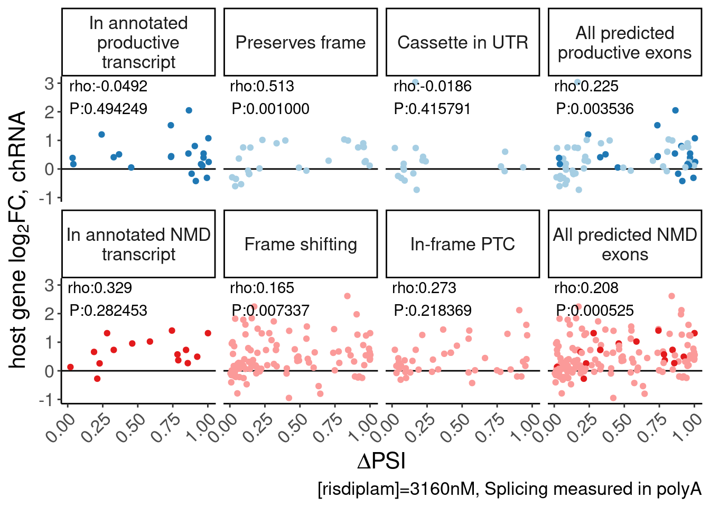
Druggability enrichment plots
- The druggability gene enrichment barplots comparing genes w/ ris-induced poison exons (not based on expression effects) (main)
- the druggability gene enrichment barplot comparing genes w/ post-txnal downregulation (Supplement)
SplicingDruggableGenes <- P.boxplot.dat %>%
filter(dataset == 'polyA') %>%
filter(ColorEffect == 'NMD') %>%
distinct(gene, .keep_all=T)
nrow(SplicingDruggableGenes)[1] 219exons <- read_tsv("../code/ReferenceGenome/Annotations/GTFTools_BasicAnnotations/gencode.v34.chromasomal.exons.sorted.bed", col_names=c("chrom", "start", "stop", "gene_transcript", "score", "strand"))
transcripts_to_genes <- exons %>%
distinct(gene_transcript) %>%
separate(gene_transcript, into=c("gene", "transcript"), sep="_") %>%
mutate(gene = str_replace(gene, "(^.+?)\\..+?$", "\\1"))
Expression.table.transcripts <- read_tsv("../code/SmallMolecule/salmon.DMSO.merged.txt")
Expression.table.genes <- Expression.table.transcripts %>%
inner_join(transcripts_to_genes, by=c("Name"="transcript")) %>%
group_by(gene) %>%
summarise_at(vars(contains("DMSO")), sum) %>%
gather("sample", "TPM", -gene) %>%
group_by(gene) %>%
summarise(medianTPM = median(TPM))
hist(log2(Expression.table.genes$medianTPM))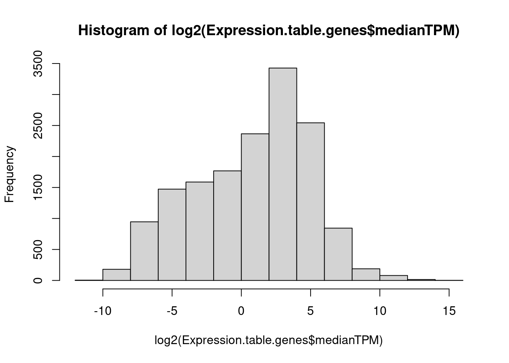
Expression.table.genes %>%
filter(gene == "ENSG00000111640")# A tibble: 1 × 2
gene medianTPM
<chr> <dbl>
1 ENSG00000111640 4502.Expression.tidyForMatchingGenes <- Expression.table.genes %>%
mutate(IsSplicingDruggable = gene %in% SplicingDruggableGenes$gene) %>%
arrange(medianTPM) %>%
mutate(LaggingGeneGroup = lag(IsSplicingDruggable)) %>%
mutate(LeadingGeneGroup = lead(IsSplicingDruggable)) %>%
ungroup()
Merged.WithExpressionMatchedControlGenes <-
bind_rows(
Expression.tidyForMatchingGenes %>%
filter(IsSplicingDruggable) %>%
mutate(Group = "SplicingPerturbed"),
Expression.tidyForMatchingGenes %>%
filter(!IsSplicingDruggable & LaggingGeneGroup) %>%
mutate(Group = "SplicingUnperturbedControl"),
Expression.tidyForMatchingGenes %>%
filter(!IsSplicingDruggable & LeadingGeneGroup) %>%
mutate(Group = "SplicingUnperturbedControl"),
) %>%
dplyr::select(gene, medianTPM, Group)
Merged.WithExpressionMatchedControlGenes %>%
ggplot(aes(medianTPM)) +
stat_ecdf() +
scale_x_continuous(trans='log10') +
facet_wrap(~Group)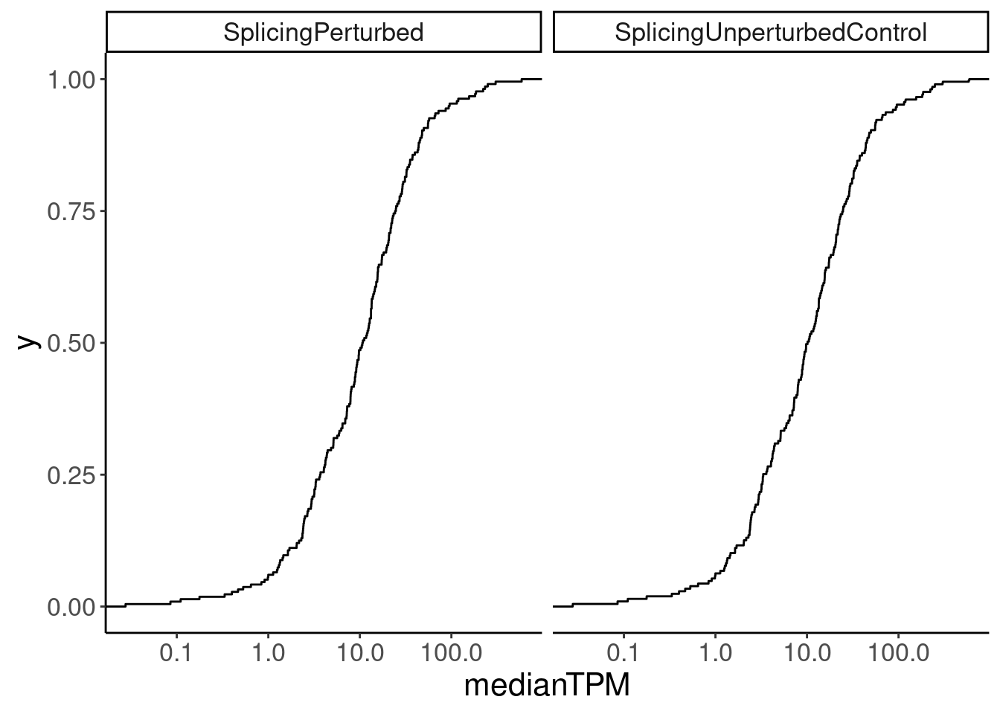
Now download the supplemental table from This paper…
url1<-'https://www.ncbi.nlm.nih.gov/pmc/articles/PMC6321762/bin/NIHMS80906-supplement-Table_S1.xlsx'
p1f <- tempfile()
download.file(url1, p1f, mode="wb")
p1<-read_excel(path = p1f, sheet = 1)
head(p1)# A tibble: 6 × 12
ensembl_gene_id druggability_tier hgnc_names chr_b37 start_b37 end_b37 strand
<chr> <chr> <chr> <chr> <dbl> <dbl> <dbl>
1 ENSG00000000938 Tier 1 FGR 1 27938575 2.80e7 -1
2 ENSG00000001626 Tier 1 CFTR 7 117105838 1.17e8 1
3 ENSG00000001630 Tier 1 CYP51A1 7 91741465 9.18e7 -1
4 ENSG00000002549 Tier 1 LAP3 4 17578815 1.76e7 1
5 ENSG00000004468 Tier 1 CD38 4 15779898 1.59e7 1
6 ENSG00000004478 Tier 1 FKBP4 12 2904119 2.91e6 1
# … with 5 more variables: description <chr>, no_of_gwas_regions <dbl>,
# small_mol_druggable <chr>, bio_druggable <chr>, adme_gene <chr>Also, make sure to subset all gene sets to only include protein coding ones.
CodingGenes <- read_tsv("../data/mart_export.txt.gz") %>%
distinct(`Gene stable ID`) %>%
dplyr::select(gene = "Gene stable ID")
GeneCategories <- p1 %>%
filter(small_mol_druggable=="Y") %>%
left_join(Expression.table.genes, by=c("ensembl_gene_id"="gene")) %>%
dplyr::select(Group=druggability_tier, gene=ensembl_gene_id, medianTPM) %>%
bind_rows(
Merged.WithExpressionMatchedControlGenes,
Expression.table.genes %>%
mutate(Group = "Whole protein coding genome")
) %>%
filter(gene %in% CodingGenes$gene)Now check number of exons and gene length of different druggability categories
TopTranscriptPerGene <- Expression.table.transcripts %>%
# # summarise_at(vars(contains("DMSO")), sum) %>%
gather("sample", "TPM", -Name) %>%
group_by(Name) %>%
summarise(medianTPM = median(TPM)) %>%
inner_join(transcripts_to_genes, by=c("Name"="transcript")) %>%
group_by(gene) %>%
filter(medianTPM == max(medianTPM)) %>%
ungroup() %>%
distinct(gene, .keep_all=T)
NumExonsAndLength <- exons %>%
group_by(gene_transcript) %>%
summarise(NumExons = n(),
Min = min(start),
Max = max(stop)) %>%
mutate(GeneLength = Max - Min) %>%
separate(gene_transcript, into=c("gene", "transcript"), sep="_") %>%
filter(transcript %in% TopTranscriptPerGene$Name) %>%
mutate(gene = str_replace(gene, "(^.+?)\\..+?$", "\\1")) %>%
dplyr::select(-Min, -Max)
NumExonsAndLength %>%
filter(gene %in% CodingGenes$gene) %>%
ggplot(aes(x=GeneLength)) +
stat_ecdf() +
coord_cartesian(xlim=c(1E3, 1E6)) +
scale_x_continuous(trans='log10') +
annotation_logticks() +
theme_bw()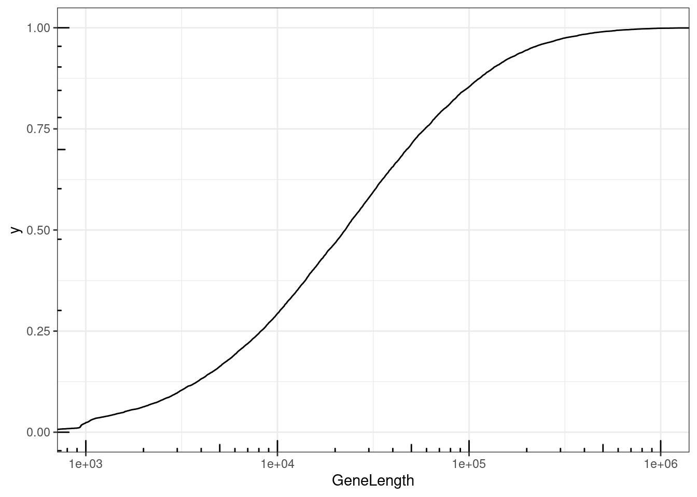
GeneCategories %>%
left_join(NumExonsAndLength) %>%
filter(!Group %in% c("Tier 2", "Tier 3A", "Tier 3B")) %>%
gather(key="Feature", value="value", NumExons, GeneLength, medianTPM) %>%
ggplot(aes(x=value, color=Group)) +
stat_ecdf() +
scale_x_continuous(trans='log10') +
annotation_logticks() +
facet_wrap(~Feature, scales = "free", ncol=1) +
labs(y="ecdf", color="Druggability gene group")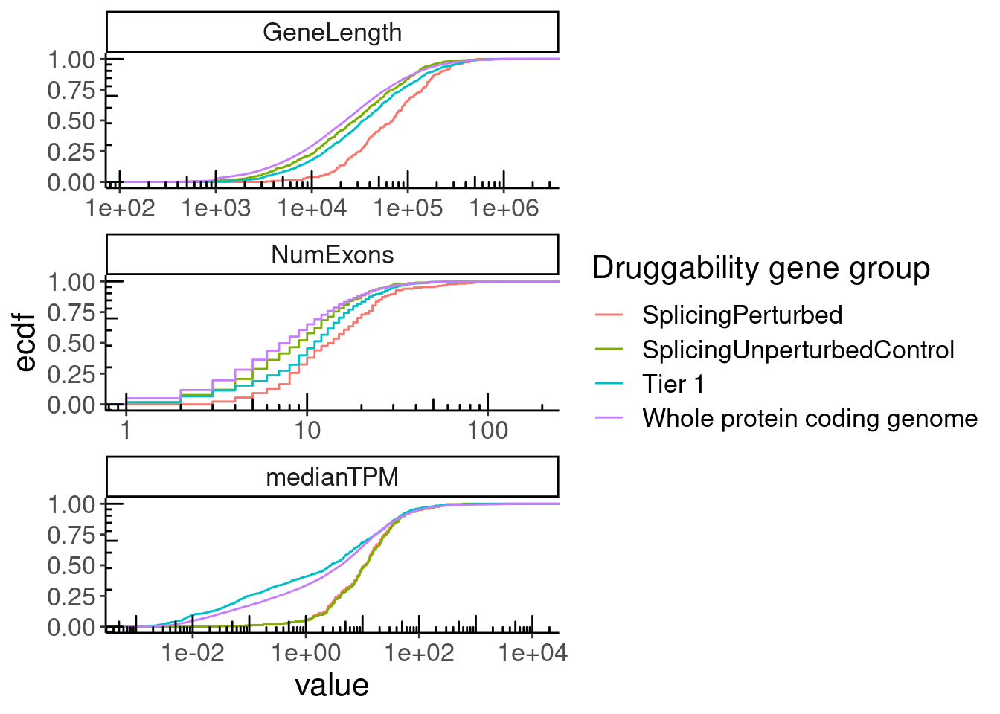
GeneCategories %>%
left_join(NumExonsAndLength) %>%
gather(key="Feature", value="value", NumExons, GeneLength, medianTPM) %>%
filter(Feature == "NumExons") %>%
ggplot(aes(x=value, color=Group)) +
stat_ecdf() +
scale_x_continuous(trans='log10') +
annotation_logticks() +
facet_wrap(~Feature, scales = "free", ncol=1) +
labs(y="ecdf", color="Druggability gene group")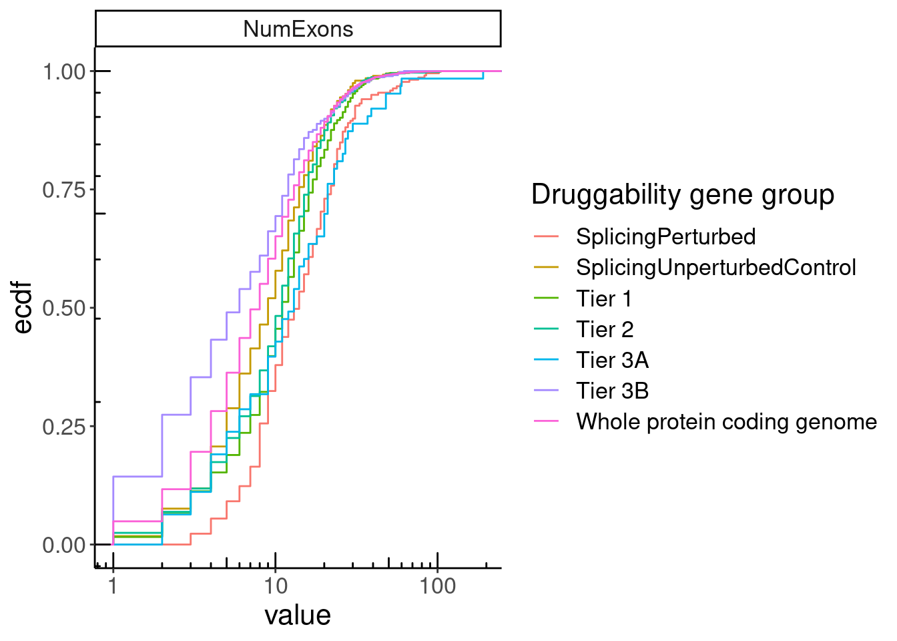
Save plots for number of exons and host intron length
GeneCategories %>%
left_join(NumExonsAndLength) %>%
gather(key="Feature", value="value", NumExons, GeneLength, medianTPM) %>%
filter(Feature == "NumExons") %>%
group_by(Group, Feature) %>%
summarise(Med = median(value, na.rm=T))# A tibble: 7 × 3
# Groups: Group [7]
Group Feature Med
<chr> <chr> <dbl>
1 SplicingPerturbed NumExons 14
2 SplicingUnperturbedControl NumExons 9
3 Tier 1 NumExons 11
4 Tier 2 NumExons 11
5 Tier 3A NumExons 13
6 Tier 3B NumExons 6
7 Whole protein coding genome NumExons 8Introns.Annotated.Lengths <- read_tsv("../data/IntronAnnotationsFromYang.tsv.gz") %>%
mutate(gene = str_replace(gene, "^(.+?)\\..+$", "\\1")) %>%
filter(SemiSupergroupAnnotations == "basic tag") %>%
inner_join(
GeneCategories %>%
filter(Group == "SplicingPerturbed")) %>%
mutate(Len = end - start) %>%
mutate(Group = "AllOtherIntronInGenes") %>%
dplyr::select(Len, Group)
HostIntrons <- read_tsv("../output/SmallMoleculeGAGT_CassetteExonclusters.bed", col_names=paste0("V", 1:9)) %>%
filter(str_detect(V4, "junc.skipping")) %>%
mutate(Len = V3-V2) %>%
mutate(Group = "Host introns") %>%
dplyr::select(Len, Group)
bind_rows(
HostIntrons, Introns.Annotated.Lengths
) %>%
wilcox.test(Len ~ Group, data=.)
Wilcoxon rank sum test with continuity correction
data: Len by Group
W = 564921, p-value < 2.2e-16
alternative hypothesis: true location shift is not equal to 0bind_rows(
HostIntrons, Introns.Annotated.Lengths
) %>%
group_by(Group) %>%
summarise(medLen = median(Len))# A tibble: 2 × 2
Group medLen
<chr> <dbl>
1 AllOtherIntronInGenes 2232.
2 Host introns 6138.P.IntLen <- bind_rows(
HostIntrons, Introns.Annotated.Lengths
) %>%
ggplot(aes(x=Len, color=Group)) +
stat_ecdf() +
scale_x_continuous(trans='log10') +
coord_cartesian(xlim=c(100, 1E5)) +
scale_color_manual(values=c("Host introns"="#e31a1c", "AllOtherIntronInGenes"="#969696")) +
labs(x="Intron length (bp)", y="Cumulative fraction", caption="2233 vs 6139bp medians, P<2.2E-16")
P.IntLen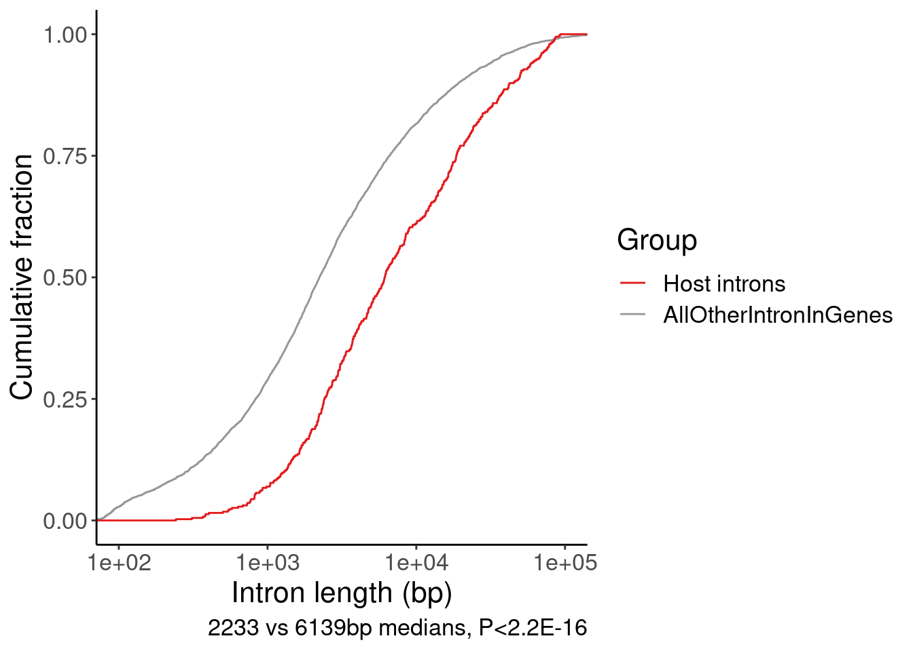
GeneCategories$Group %>% unique()[1] "Tier 1" "Tier 2"
[3] "Tier 3A" "Tier 3B"
[5] "SplicingPerturbed" "SplicingUnperturbedControl"
[7] "Whole protein coding genome"GeneCategories %>%
left_join(NumExonsAndLength) %>%
gather(key="Feature", value="value", NumExons, GeneLength, medianTPM) %>%
filter(Feature == "NumExons") %>%
filter(Group %in% c("SplicingPerturbed", "SplicingUnperturbedControl")) %>%
wilcox.test(value~Group, data=.)
Wilcoxon rank sum test with continuity correction
data: value by Group
W = 57906, p-value = 5.186e-12
alternative hypothesis: true location shift is not equal to 0P.NumExons <-
GeneCategories %>%
left_join(NumExonsAndLength) %>%
gather(key="Feature", value="value", NumExons, GeneLength, medianTPM) %>%
filter(Feature == "NumExons") %>%
filter(!Group %in% c("Tier 2", "Tier 3A", "Tier 3B", "Tier 1")) %>%
ggplot(aes(x=value, color=Group)) +
stat_ecdf() +
# scale_x_continuous(trans='log10') +
# annotation_logticks(sides='b') +
coord_cartesian(xlim=c(1, 30)) +
scale_color_manual(
labels=c(
"SplicingPerturbed"="219 Risdiplam-induced NMD targets",
"SplicingUnperturbedControl"="389 expression-matched genes",
"Whole protein coding genome"="Whole genome",
"Tier 1"="1059 targets of approved small molecules"),
values=c(
"SplicingPerturbed"="#e31a1c",
"SplicingUnperturbedControl"="#1f78b4",
"Whole protein coding genome"="#000000",
"Tier 1"="#737373")
) +
labs(y="Cumulative fraction", color="Druggability gene group", x="Number exons in gene", caption="median 14 vs 9, P=5.2x10-12")
P.NumExons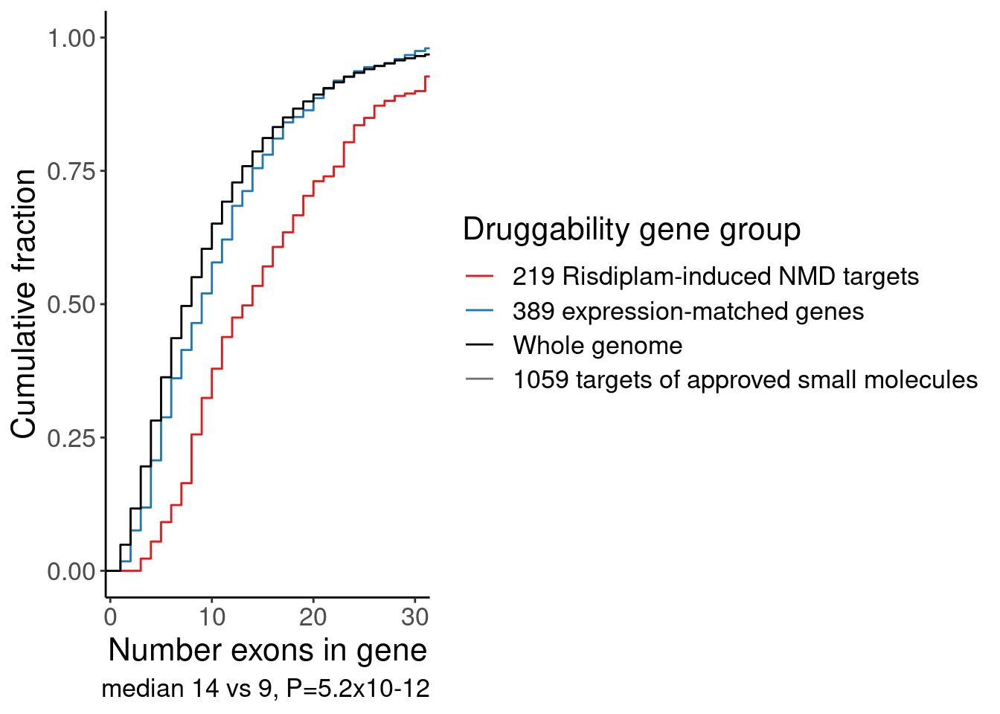
Ok, that is one way to show that the risdiplam-perturbed genes tend to be in longer genes with more exons, compared to a matched set of control genes or compared to previously druggable genes. But for sake of compactness, since I already know I also want to do an enrichment analysis including GO categories (ie GPCRs, etc), let’s also look make gene categories by length and present for enrichment alongside the GO enrichment analysis…
library(biomaRt)
ensembl = useMart("ensembl",dataset="hsapiens_gene_ensembl")
ensembl_to_symbols <- getBM(attributes= c("ensembl_gene_id","hgnc_symbol"),mart=ensembl)
#Manually copy paste links from MsigDB
go=c(
"GO:0015075"="https://www.gsea-msigdb.org/gsea/msigdb/human/download_geneset.jsp?geneSetName=GOMF_MONOATOMIC_ION_TRANSMEMBRANE_TRANSPORTER_ACTIVITY&fileType=grp",
"GO:0004930"="https://www.gsea-msigdb.org/gsea/msigdb/human/download_geneset.jsp?geneSetName=GOMF_G_PROTEIN_COUPLED_RECEPTOR_ACTIVITY&fileType=grp",
"GO:0004984"="https://www.gsea-msigdb.org/gsea/msigdb/human/download_geneset.jsp?geneSetName=GOMF_OLFACTORY_RECEPTOR_ACTIVITY&fileType=grp",
"GO:0004879"="https://www.gsea-msigdb.org/gsea/msigdb/human/download_geneset.jsp?geneSetName=GOMF_NUCLEAR_RECEPTOR_ACTIVITY&fileType=grp",
"GO:0016301"="https://www.gsea-msigdb.org/gsea/msigdb/human/download_geneset.jsp?geneSetName=GOMF_KINASE_ACTIVITY&fileType=grp",
"GO:0003700"="https://www.gsea-msigdb.org/gsea/msigdb/human/download_geneset.jsp?geneSetName=GOMF_DNA_BINDING_TRANSCRIPTION_FACTOR_ACTIVITY&fileType=grp")
GO.genes.of.interest <- lapply(go, read.table, skip=2, col.names=c("hgnc_symbol")) %>%
bind_rows(.id="GO") %>%
mutate(GO_Name = recode(GO, !!!go)) %>%
mutate(GO_Name = str_replace(GO_Name, ".+?geneSetName=(.+?)&fileType=grp$", "\\1")) %>%
left_join(ensembl_to_symbols)
GO.genes.of.interest %>%
distinct(hgnc_symbol, GO_Name) %>%
count(GO_Name) GO_Name n
1 GOMF_DNA_BINDING_TRANSCRIPTION_FACTOR_ACTIVITY 1454
2 GOMF_G_PROTEIN_COUPLED_RECEPTOR_ACTIVITY 871
3 GOMF_KINASE_ACTIVITY 743
4 GOMF_MONOATOMIC_ION_TRANSMEMBRANE_TRANSPORTER_ACTIVITY 726
5 GOMF_NUCLEAR_RECEPTOR_ACTIVITY 52
6 GOMF_OLFACTORY_RECEPTOR_ACTIVITY 429GPCRs <- GO.genes.of.interest %>%
filter(GO_Name == "GOMF_G_PROTEIN_COUPLED_RECEPTOR_ACTIVITY") %>%
pull(hgnc_symbol) %>% unique() %>%
setdiff(
GO.genes.of.interest %>%
filter(GO_Name == "GOMF_OLFACTORY_RECEPTOR_ACTIVITY") %>%
pull(hgnc_symbol) %>% unique()
)Now let’s do the GO enrichment tests. I’ll actually just do them “by
hand” with the fisher.test (hypergeometric test) function
rather than using a dedicated package to systematically look for
enrichment across all GO categories, which I am less interested in.
library(broom)
GO.genes.of.interest.totest <-
bind_rows(
# filter out olfactor GPCRs from GPCR group
GO.genes.of.interest %>%
filter(ensembl_gene_id %in% CodingGenes$gene) %>%
filter(!GO_Name=="GOMF_OLFACTORY_RECEPTOR_ACTIVITY") %>%
filter(!(GO_Name=="GOMF_G_PROTEIN_COUPLED_RECEPTOR_ACTIVITY" & !hgnc_symbol %in% GPCRs)),
NumExonsAndLength %>%
filter(gene %in% CodingGenes$gene) %>%
# mutate(GO_Name = cut_number(GeneLength, 4, ordered_result=T)) %>%
# distinct(GO_Name)
mutate(GO_Name = factor(ntile(GeneLength, 4))) %>%
# mutate(GO_Name = cut(GeneLength, breaks=c(-Inf,1E3, 1E4, 1E5, Inf), include.lowest=T)) %>%
filter(!is.na(GO_Name)) %>%
dplyr::select(ensembl_gene_id=gene, GO_Name)
)
GO_Categories <- GO.genes.of.interest.totest %>%
pull(GO_Name) %>% unique()
count(GO.genes.of.interest.totest, GO_Name) GO_Name n
1 1 4621
2 2 4621
3 3 4621
4 4 4621
5 GOMF_DNA_BINDING_TRANSCRIPTION_FACTOR_ACTIVITY 1537
6 GOMF_G_PROTEIN_COUPLED_RECEPTOR_ACTIVITY 489
7 GOMF_KINASE_ACTIVITY 793
8 GOMF_MONOATOMIC_ION_TRANSMEMBRANE_TRANSPORTER_ACTIVITY 778
9 GOMF_NUCLEAR_RECEPTOR_ACTIVITY 57DruggabilityCategories <- GeneCategories %>%
filter(!Group=="Whole protein coding genome") %>% pull(Group) %>% unique()
DruggabilityCategories[1] "Tier 1" "Tier 2"
[3] "Tier 3A" "Tier 3B"
[5] "SplicingPerturbed" "SplicingUnperturbedControl"GeneCategories.totest <- GeneCategories %>%
sample_frac() %>%
group_by(Group) %>%
mutate(n = row_number()) %>%
ungroup()
# filter(!Group == "Tier 1" | (Group == "Tier 1" & n <= 116))
count(GeneCategories.totest, Group)# A tibble: 7 × 2
Group n
<chr> <int>
1 SplicingPerturbed 219
2 SplicingUnperturbedControl 396
3 Tier 1 1059
4 Tier 2 648
5 Tier 3A 67
6 Tier 3B 516
7 Whole protein coding genome 18484NumExonsAndLength %>%
filter(gene %in% CodingGenes$gene) %>%
mutate(N = cut_number(GeneLength, 4)) %>%
distinct(N)# A tibble: 4 × 1
N
<fct>
1 (8.21e+03,2.25e+04]
2 (2.25e+04,5.88e+04]
3 (5.88e+04,2.3e+06]
4 [117,8.21e+03] results <- list()
for (DruggabilitySetName in DruggabilityCategories){
for (GO_CategoryName in GO_Categories){
print(paste(DruggabilitySetName, GO_CategoryName))
DruggabilitySet <- GeneCategories.totest %>%
filter(Group==DruggabilitySetName) %>% pull(gene)
GO_CategorySet <- GO.genes.of.interest.totest %>%
filter(GO_Name==GO_CategoryName) %>% pull(ensembl_gene_id)
test.results <- data.frame(gene=CodingGenes$gene) %>%
mutate(IsDruggable = gene %in% DruggabilitySet, IsInGO.Set = gene %in% GO_CategorySet) %>%
mutate(IsDruggable = factor(IsDruggable),
IsInGO.Set = factor(IsInGO.Set)) %>%
count(IsDruggable, IsInGO.Set, .drop=F) %>%
pivot_wider(names_from="IsInGO.Set", values_from="n") %>%
column_to_rownames("IsDruggable") %>%
fisher.test() %>% glance()
results[[paste(DruggabilitySetName, GO_CategoryName, sep=";")]] <- test.results %>%
as.data.frame()
}
}[1] "Tier 1 GOMF_MONOATOMIC_ION_TRANSMEMBRANE_TRANSPORTER_ACTIVITY"
[1] "Tier 1 GOMF_G_PROTEIN_COUPLED_RECEPTOR_ACTIVITY"
[1] "Tier 1 GOMF_NUCLEAR_RECEPTOR_ACTIVITY"
[1] "Tier 1 GOMF_KINASE_ACTIVITY"
[1] "Tier 1 GOMF_DNA_BINDING_TRANSCRIPTION_FACTOR_ACTIVITY"
[1] "Tier 1 2"
[1] "Tier 1 3"
[1] "Tier 1 4"
[1] "Tier 1 1"
[1] "Tier 2 GOMF_MONOATOMIC_ION_TRANSMEMBRANE_TRANSPORTER_ACTIVITY"
[1] "Tier 2 GOMF_G_PROTEIN_COUPLED_RECEPTOR_ACTIVITY"
[1] "Tier 2 GOMF_NUCLEAR_RECEPTOR_ACTIVITY"
[1] "Tier 2 GOMF_KINASE_ACTIVITY"
[1] "Tier 2 GOMF_DNA_BINDING_TRANSCRIPTION_FACTOR_ACTIVITY"
[1] "Tier 2 2"
[1] "Tier 2 3"
[1] "Tier 2 4"
[1] "Tier 2 1"
[1] "Tier 3A GOMF_MONOATOMIC_ION_TRANSMEMBRANE_TRANSPORTER_ACTIVITY"
[1] "Tier 3A GOMF_G_PROTEIN_COUPLED_RECEPTOR_ACTIVITY"
[1] "Tier 3A GOMF_NUCLEAR_RECEPTOR_ACTIVITY"
[1] "Tier 3A GOMF_KINASE_ACTIVITY"
[1] "Tier 3A GOMF_DNA_BINDING_TRANSCRIPTION_FACTOR_ACTIVITY"
[1] "Tier 3A 2"
[1] "Tier 3A 3"
[1] "Tier 3A 4"
[1] "Tier 3A 1"
[1] "Tier 3B GOMF_MONOATOMIC_ION_TRANSMEMBRANE_TRANSPORTER_ACTIVITY"
[1] "Tier 3B GOMF_G_PROTEIN_COUPLED_RECEPTOR_ACTIVITY"
[1] "Tier 3B GOMF_NUCLEAR_RECEPTOR_ACTIVITY"
[1] "Tier 3B GOMF_KINASE_ACTIVITY"
[1] "Tier 3B GOMF_DNA_BINDING_TRANSCRIPTION_FACTOR_ACTIVITY"
[1] "Tier 3B 2"
[1] "Tier 3B 3"
[1] "Tier 3B 4"
[1] "Tier 3B 1"
[1] "SplicingPerturbed GOMF_MONOATOMIC_ION_TRANSMEMBRANE_TRANSPORTER_ACTIVITY"
[1] "SplicingPerturbed GOMF_G_PROTEIN_COUPLED_RECEPTOR_ACTIVITY"
[1] "SplicingPerturbed GOMF_NUCLEAR_RECEPTOR_ACTIVITY"
[1] "SplicingPerturbed GOMF_KINASE_ACTIVITY"
[1] "SplicingPerturbed GOMF_DNA_BINDING_TRANSCRIPTION_FACTOR_ACTIVITY"
[1] "SplicingPerturbed 2"
[1] "SplicingPerturbed 3"
[1] "SplicingPerturbed 4"
[1] "SplicingPerturbed 1"
[1] "SplicingUnperturbedControl GOMF_MONOATOMIC_ION_TRANSMEMBRANE_TRANSPORTER_ACTIVITY"
[1] "SplicingUnperturbedControl GOMF_G_PROTEIN_COUPLED_RECEPTOR_ACTIVITY"
[1] "SplicingUnperturbedControl GOMF_NUCLEAR_RECEPTOR_ACTIVITY"
[1] "SplicingUnperturbedControl GOMF_KINASE_ACTIVITY"
[1] "SplicingUnperturbedControl GOMF_DNA_BINDING_TRANSCRIPTION_FACTOR_ACTIVITY"
[1] "SplicingUnperturbedControl 2"
[1] "SplicingUnperturbedControl 3"
[1] "SplicingUnperturbedControl 4"
[1] "SplicingUnperturbedControl 1"results %>%
bind_rows(.id="Druggability_GO") %>%
separate(Druggability_GO, into=c("Druggability", "GO category"), sep=";") %>%
mutate(GO = recode(`GO category`, "GOMF_KINASE_ACTIVITY"="Kinases", "GOMF_NUCLEAR_RECEPTOR_ACTIVITY"="Nuc receptors", "GOMF_G_PROTEIN_COUPLED_RECEPTOR_ACTIVITY"="GPCRs", "GOMF_MONOATOMIC_ION_TRANSMEMBRANE_TRANSPORTER_ACTIVITY"="Ion transporters", "GOMF_DNA_BINDING_TRANSCRIPTION_FACTOR_ACTIVITY"="TFs")) %>%
# filter(!GO=="TFs") %>%
# pull(GO) %>% unique()
# mutate(GO = factor(GO, levels=c("1-10kb", "10-50kb", "50-100kb", ">100kb", "GPCRs", "Nuc receptors", "Kinases", "Ion transporters", "TFs", "BrainEnriched_HumanProteinAtlas"))) %>%
filter(Druggability %in% c("Tier 1", "SplicingPerturbed")) %>%
mutate(Druggability = recode(Druggability, "Tier 1"="1059 targets of approved small molecules", "SplicingPerturbed"="219 Risdiplam-induced NMD targets")) %>%
ggplot(aes(x=GO, y=log2(estimate), fill=GO)) +
geom_col() +
geom_errorbar(aes(ymin=log2(conf.low), ymax=log2(conf.high)), width=.2) +
geom_hline(yintercept = 0) +
Rotate_x_labels +
scale_fill_manual(
values=c(
"1"="#b2e2e2",
"2"="#66c2a4",
"3"="#2ca25f",
"4"="#006d2c",
"GPCRs"="#ffffb3",
"Ion transporters"="#bebada",
"Kinases"="#fb8072",
"Nuc receptors"="#80b1d3",
"TFs"="#fdb462"),
labels=c(
"1"="Q1 gene length; <8.2kb",
"2"="Q2 gene length; 8-23kb",
"3"="Q3 gene length; 23-59kb",
"4"="Q4 gene length; >59kb",
"GPCRs"="GPCRs",
"Ion transporters",
"Kinases",
"Nuc receptors"="Nuclear receptors",
"TFs"="Transcription factors"
)) +
# scale_y_continuous(trans="log2") +
facet_wrap(~Druggability, labeller = label_wrap_gen(25)) +
labs(y="Enrichment; log2(OddsRatio)", x="Gene category", fill="Gene category")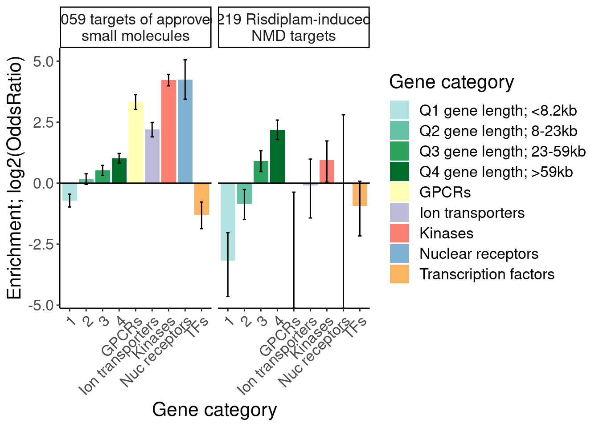
Ok, I think I want to repeat that now but also add two more facets: one for “disease genes” (ie OMIM), and another facet for the larger set of post-txn regulated genes. First let’s explore the OMIM dataset quickly…
OMIM <- read_tsv("/project2/yangili1/bjf79/20211209_JingxinRNAseq/code/OMIM/genemap2.txt", skip=3)
#Just dominant genes, search of Huntington's HTT gene, an expected result
OMIM %>%
filter(!is.na(Phenotypes)) %>%
filter(!is.na(`Ensembl Gene ID`)) %>%
filter(str_detect(Phenotypes, "dominant")) %>%
filter(str_detect(Phenotypes, "untington"))# A tibble: 3 × 14
`# Chromosome` `Genomic Position Start` `Genomic Position End` `Cyto Location`
<chr> <dbl> <dbl> <chr>
1 chr4 3074680 3243959 4p16.3
2 chr16 87601834 87698155 16q24.3
3 chr20 4686455 4701587 20pter-p12
# … with 10 more variables: `Computed Cyto Location` <chr>, `MIM Number` <dbl>,
# `Gene Symbols` <chr>, `Gene Name` <chr>, `Approved Gene Symbol` <chr>,
# `Entrez Gene ID` <dbl>, `Ensembl Gene ID` <chr>, Comments <chr>,
# Phenotypes <chr>, `Mouse Gene Symbol/ID` <chr># How many dominant OMIM genes are there?
OMIM %>%
filter(!is.na(Phenotypes)) %>%
filter(!is.na(`Ensembl Gene ID`)) %>%
filter(str_detect(Phenotypes, "dominant")) %>%
distinct(`Ensembl Gene ID`) %>%
nrow()[1] 1834GO.genes.of.interest.totest <-
bind_rows(
# filter out olfactor GPCRs from GPCR group
GO.genes.of.interest %>%
filter(ensembl_gene_id %in% CodingGenes$gene) %>%
filter(!GO_Name=="GOMF_OLFACTORY_RECEPTOR_ACTIVITY") %>%
filter(!(GO_Name=="GOMF_G_PROTEIN_COUPLED_RECEPTOR_ACTIVITY" & !hgnc_symbol %in% GPCRs)),
NumExonsAndLength %>%
filter(gene %in% CodingGenes$gene) %>%
# mutate(GO_Name = cut_number(GeneLength, 5, ordered_result=T)) %>%
mutate(GO_Name = factor(ntile(GeneLength, 4))) %>%
# mutate(GO_Name = cut(GeneLength, breaks=c(-Inf,1E3, 1E4, 1E5, Inf), include.lowest=T)) %>%
filter(!is.na(GO_Name)) %>%
dplyr::select(ensembl_gene_id=gene, GO_Name),
OMIM %>%
filter(!is.na(Phenotypes)) %>%
filter(!is.na(`Ensembl Gene ID`)) %>%
filter(str_detect(Phenotypes, "dominant")) %>%
dplyr::select(ensembl_gene_id = `Ensembl Gene ID`) %>%
distinct() %>%
filter(ensembl_gene_id %in% CodingGenes$gene) %>%
mutate(GO_Name = "OMIM_DomNegative")
)
GO_Categories <- GO.genes.of.interest.totest %>%
pull(GO_Name) %>% unique()
count(GO.genes.of.interest.totest, GO_Name) GO_Name n
1 1 4621
2 2 4621
3 3 4621
4 4 4621
5 GOMF_DNA_BINDING_TRANSCRIPTION_FACTOR_ACTIVITY 1537
6 GOMF_G_PROTEIN_COUPLED_RECEPTOR_ACTIVITY 489
7 GOMF_KINASE_ACTIVITY 793
8 GOMF_MONOATOMIC_ION_TRANSMEMBRANE_TRANSPORTER_ACTIVITY 778
9 GOMF_NUCLEAR_RECEPTOR_ACTIVITY 57
10 OMIM_DomNegative 1823DruggabilityCategories.totest.df <- GeneCategories %>%
sample_frac() %>%
group_by(Group) %>%
mutate(n = row_number()) %>%
ungroup() %>%
# filter(!Group == "Tier 1" | (Group == "Tier 1" & n <= 116))
bind_rows(
Scatter.dat %>%
filter(Category == "post-txn down") %>%
filter(gene %in% CodingGenes$gene) %>%
dplyr::select(gene) %>%
mutate(Group = "Larger set of risdiplam-effected"),
OMIM %>%
filter(!is.na(Phenotypes)) %>%
filter(!is.na(`Ensembl Gene ID`)) %>%
filter(str_detect(Phenotypes, "dominant")) %>%
dplyr::select(gene = `Ensembl Gene ID`) %>%
distinct() %>%
filter(gene %in% CodingGenes$gene) %>%
mutate(Group = "OMIM_DomNegative")
)
count(DruggabilityCategories.totest.df, Group)# A tibble: 9 × 2
Group n
<chr> <int>
1 Larger set of risdiplam-effected 627
2 OMIM_DomNegative 1823
3 SplicingPerturbed 219
4 SplicingUnperturbedControl 396
5 Tier 1 1059
6 Tier 2 648
7 Tier 3A 67
8 Tier 3B 516
9 Whole protein coding genome 18484DruggabilityCategories <- DruggabilityCategories.totest.df %>%
filter(!Group=="Whole protein coding genome") %>% pull(Group) %>% unique()
DruggabilityCategories[1] "Tier 3B" "Tier 1"
[3] "Tier 2" "SplicingUnperturbedControl"
[5] "SplicingPerturbed" "Tier 3A"
[7] "Larger set of risdiplam-effected" "OMIM_DomNegative" results <- list()
for (DruggabilitySetName in DruggabilityCategories){
for (GO_CategoryName in GO_Categories){
print(paste(DruggabilitySetName, GO_CategoryName))
DruggabilitySet <- DruggabilityCategories.totest.df %>%
filter(Group==DruggabilitySetName) %>% pull(gene)
GO_CategorySet <- GO.genes.of.interest.totest %>%
filter(GO_Name==GO_CategoryName) %>% pull(ensembl_gene_id)
test.results <- data.frame(gene=CodingGenes$gene) %>%
mutate(IsDruggable = gene %in% DruggabilitySet, IsInGO.Set = gene %in% GO_CategorySet) %>%
mutate(IsDruggable = factor(IsDruggable),
IsInGO.Set = factor(IsInGO.Set)) %>%
count(IsDruggable, IsInGO.Set, .drop=F) %>%
pivot_wider(names_from="IsInGO.Set", values_from="n") %>%
column_to_rownames("IsDruggable") %>%
fisher.test() %>% glance()
results[[paste(DruggabilitySetName, GO_CategoryName, sep=";")]] <- test.results %>%
as.data.frame()
}
}[1] "Tier 3B GOMF_MONOATOMIC_ION_TRANSMEMBRANE_TRANSPORTER_ACTIVITY"
[1] "Tier 3B GOMF_G_PROTEIN_COUPLED_RECEPTOR_ACTIVITY"
[1] "Tier 3B GOMF_NUCLEAR_RECEPTOR_ACTIVITY"
[1] "Tier 3B GOMF_KINASE_ACTIVITY"
[1] "Tier 3B GOMF_DNA_BINDING_TRANSCRIPTION_FACTOR_ACTIVITY"
[1] "Tier 3B 2"
[1] "Tier 3B 3"
[1] "Tier 3B 4"
[1] "Tier 3B 1"
[1] "Tier 3B OMIM_DomNegative"
[1] "Tier 1 GOMF_MONOATOMIC_ION_TRANSMEMBRANE_TRANSPORTER_ACTIVITY"
[1] "Tier 1 GOMF_G_PROTEIN_COUPLED_RECEPTOR_ACTIVITY"
[1] "Tier 1 GOMF_NUCLEAR_RECEPTOR_ACTIVITY"
[1] "Tier 1 GOMF_KINASE_ACTIVITY"
[1] "Tier 1 GOMF_DNA_BINDING_TRANSCRIPTION_FACTOR_ACTIVITY"
[1] "Tier 1 2"
[1] "Tier 1 3"
[1] "Tier 1 4"
[1] "Tier 1 1"
[1] "Tier 1 OMIM_DomNegative"
[1] "Tier 2 GOMF_MONOATOMIC_ION_TRANSMEMBRANE_TRANSPORTER_ACTIVITY"
[1] "Tier 2 GOMF_G_PROTEIN_COUPLED_RECEPTOR_ACTIVITY"
[1] "Tier 2 GOMF_NUCLEAR_RECEPTOR_ACTIVITY"
[1] "Tier 2 GOMF_KINASE_ACTIVITY"
[1] "Tier 2 GOMF_DNA_BINDING_TRANSCRIPTION_FACTOR_ACTIVITY"
[1] "Tier 2 2"
[1] "Tier 2 3"
[1] "Tier 2 4"
[1] "Tier 2 1"
[1] "Tier 2 OMIM_DomNegative"
[1] "SplicingUnperturbedControl GOMF_MONOATOMIC_ION_TRANSMEMBRANE_TRANSPORTER_ACTIVITY"
[1] "SplicingUnperturbedControl GOMF_G_PROTEIN_COUPLED_RECEPTOR_ACTIVITY"
[1] "SplicingUnperturbedControl GOMF_NUCLEAR_RECEPTOR_ACTIVITY"
[1] "SplicingUnperturbedControl GOMF_KINASE_ACTIVITY"
[1] "SplicingUnperturbedControl GOMF_DNA_BINDING_TRANSCRIPTION_FACTOR_ACTIVITY"
[1] "SplicingUnperturbedControl 2"
[1] "SplicingUnperturbedControl 3"
[1] "SplicingUnperturbedControl 4"
[1] "SplicingUnperturbedControl 1"
[1] "SplicingUnperturbedControl OMIM_DomNegative"
[1] "SplicingPerturbed GOMF_MONOATOMIC_ION_TRANSMEMBRANE_TRANSPORTER_ACTIVITY"
[1] "SplicingPerturbed GOMF_G_PROTEIN_COUPLED_RECEPTOR_ACTIVITY"
[1] "SplicingPerturbed GOMF_NUCLEAR_RECEPTOR_ACTIVITY"
[1] "SplicingPerturbed GOMF_KINASE_ACTIVITY"
[1] "SplicingPerturbed GOMF_DNA_BINDING_TRANSCRIPTION_FACTOR_ACTIVITY"
[1] "SplicingPerturbed 2"
[1] "SplicingPerturbed 3"
[1] "SplicingPerturbed 4"
[1] "SplicingPerturbed 1"
[1] "SplicingPerturbed OMIM_DomNegative"
[1] "Tier 3A GOMF_MONOATOMIC_ION_TRANSMEMBRANE_TRANSPORTER_ACTIVITY"
[1] "Tier 3A GOMF_G_PROTEIN_COUPLED_RECEPTOR_ACTIVITY"
[1] "Tier 3A GOMF_NUCLEAR_RECEPTOR_ACTIVITY"
[1] "Tier 3A GOMF_KINASE_ACTIVITY"
[1] "Tier 3A GOMF_DNA_BINDING_TRANSCRIPTION_FACTOR_ACTIVITY"
[1] "Tier 3A 2"
[1] "Tier 3A 3"
[1] "Tier 3A 4"
[1] "Tier 3A 1"
[1] "Tier 3A OMIM_DomNegative"
[1] "Larger set of risdiplam-effected GOMF_MONOATOMIC_ION_TRANSMEMBRANE_TRANSPORTER_ACTIVITY"
[1] "Larger set of risdiplam-effected GOMF_G_PROTEIN_COUPLED_RECEPTOR_ACTIVITY"
[1] "Larger set of risdiplam-effected GOMF_NUCLEAR_RECEPTOR_ACTIVITY"
[1] "Larger set of risdiplam-effected GOMF_KINASE_ACTIVITY"
[1] "Larger set of risdiplam-effected GOMF_DNA_BINDING_TRANSCRIPTION_FACTOR_ACTIVITY"
[1] "Larger set of risdiplam-effected 2"
[1] "Larger set of risdiplam-effected 3"
[1] "Larger set of risdiplam-effected 4"
[1] "Larger set of risdiplam-effected 1"
[1] "Larger set of risdiplam-effected OMIM_DomNegative"
[1] "OMIM_DomNegative GOMF_MONOATOMIC_ION_TRANSMEMBRANE_TRANSPORTER_ACTIVITY"
[1] "OMIM_DomNegative GOMF_G_PROTEIN_COUPLED_RECEPTOR_ACTIVITY"
[1] "OMIM_DomNegative GOMF_NUCLEAR_RECEPTOR_ACTIVITY"
[1] "OMIM_DomNegative GOMF_KINASE_ACTIVITY"
[1] "OMIM_DomNegative GOMF_DNA_BINDING_TRANSCRIPTION_FACTOR_ACTIVITY"
[1] "OMIM_DomNegative 2"
[1] "OMIM_DomNegative 3"
[1] "OMIM_DomNegative 4"
[1] "OMIM_DomNegative 1"
[1] "OMIM_DomNegative OMIM_DomNegative"results %>%
bind_rows(.id="Druggability_GO") %>%
separate(Druggability_GO, into=c("Druggability", "GO category"), sep=";") %>%
mutate(GO = recode(`GO category`, "GOMF_KINASE_ACTIVITY"="Kinases", "GOMF_NUCLEAR_RECEPTOR_ACTIVITY"="Nuc receptors", "GOMF_G_PROTEIN_COUPLED_RECEPTOR_ACTIVITY"="GPCRs", "GOMF_MONOATOMIC_ION_TRANSMEMBRANE_TRANSPORTER_ACTIVITY"="Ion transporters", "GOMF_DNA_BINDING_TRANSCRIPTION_FACTOR_ACTIVITY"="TFs")) %>%
# filter(!GO=="TFs") %>%
# pull(GO) %>% unique()
# mutate(GO = factor(GO, levels=c("1-10kb", "10-50kb", "50-100kb", ">100kb", "GPCRs", "Nuc receptors", "Kinases", "Ion transporters", "TFs", "BrainEnriched_HumanProteinAtlas"))) %>%
filter(Druggability %in% c("Tier 1", "SplicingPerturbed", "Larger set of risdiplam-effected", "OMIM_DomNegative")) %>%
mutate(Druggability = recode(Druggability, "Tier 1"="1059 targets of approved small molecules", "SplicingPerturbed"="219 Risdiplam-induced NMD targets", "Larger set of risdiplam-effected"="627 post-txn down genes")) %>%
ggplot(aes(x=GO, y=log2(estimate), fill=GO)) +
geom_col() +
geom_errorbar(aes(ymin=log2(conf.low), ymax=log2(conf.high)), width=.2) +
geom_hline(yintercept = 0) +
scale_y_continuous(limits=c(-5,5)) +
Rotate_x_labels +
scale_fill_manual(
values=c(
"1"="#b2e2e2",
"2"="#66c2a4",
"3"="#2ca25f",
"4"="#006d2c",
"GPCRs"="#ffffb3",
"Ion transporters"="#bebada",
"Kinases"="#fb8072",
"Nuc receptors"="#80b1d3",
"TFs"="#fdb462",
"OMIM_DomNegative"="#737373"),
labels=c(
"1"="Q1 gene length; <8.2kb",
"2"="Q2 gene length; 8-23kb",
"3"="Q3 gene length; 23-59kb",
"4"="Q4 gene length; >59kb",
"GPCRs"="GPCRs",
"Ion transporters",
"Kinases",
"Nuc receptors"="Nuclear receptors",
"TFs"="Transcription factors",
"OMIM_DomNegative"="OMIM_DomNegative"
)) +
# scale_y_continuous(trans="log2") +
facet_wrap(~Druggability, labeller = label_wrap_gen(25)) +
labs(y="Enrichment; log2(OddsRatio)", x="Gene category", fill="Gene category")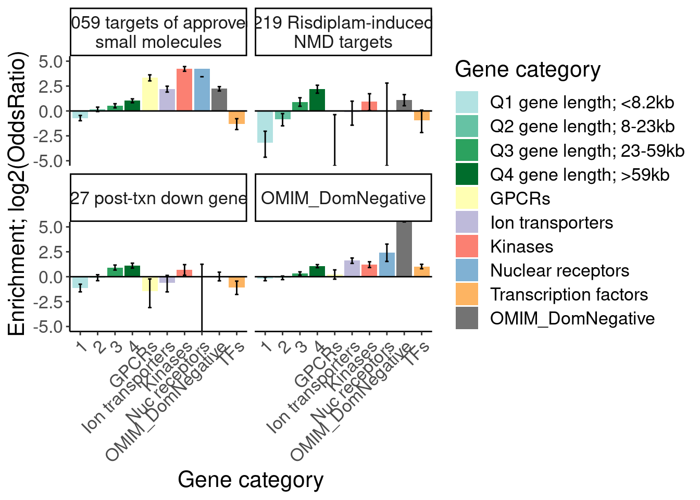
Ok, so the conclusion is that risdiplam targets are particularly enriched in long genes, and not particularly enriched in GPCRs, kinases, etc. However, interestingly, the small molecule targets are also somewhat enriched in long genes, though not to the extent of risdiplam targets. Looking at OMIM dominant negative genes they are enriched in OMIM doinant negative genes (obviously circular), and perhaps as expected the small molecule targets are also enriched in them, and interestingly risdiplam targets are slightly enriched. But also note that the dominant negative OMIM genes are also slightly enriched in long genes and gpcrs, kinases, etc. So in a way the existing small molecule set is already more ‘matched’ for OMIM disease gene types… Maybe a different way to present this is just as a stacked bar plots with different categories…
But first let’s save a version of this plot for final fig.
P.genesetEnrichment <- results %>%
bind_rows(.id="Druggability_GO") %>%
separate(Druggability_GO, into=c("Druggability", "GO category"), sep=";") %>%
mutate(GO = recode(`GO category`, "GOMF_KINASE_ACTIVITY"="Kinases", "GOMF_NUCLEAR_RECEPTOR_ACTIVITY"="Nuc receptors", "GOMF_G_PROTEIN_COUPLED_RECEPTOR_ACTIVITY"="GPCRs", "GOMF_MONOATOMIC_ION_TRANSMEMBRANE_TRANSPORTER_ACTIVITY"="Ion transporters", "GOMF_DNA_BINDING_TRANSCRIPTION_FACTOR_ACTIVITY"="TFs")) %>%
# filter(!GO=="TFs") %>%
# pull(GO) %>% unique()
# mutate(GO = factor(GO, levels=c("1-10kb", "10-50kb", "50-100kb", ">100kb", "GPCRs", "Nuc receptors", "Kinases", "Ion transporters", "TFs", "BrainEnriched_HumanProteinAtlas"))) %>%
filter(Druggability %in% c("Tier 1", "SplicingPerturbed", "Larger set of risdiplam-effected")) %>%
mutate(Druggability = recode(Druggability, "Tier 1"="1059 targets of approved small molecules", "SplicingPerturbed"="219 Risdiplam-induced NMD targets", "Larger set of risdiplam-effected"="627 post-txn down genes")) %>%
filter(!GO %in% c("OMIM_DomNegative")) %>%
ggplot(aes(x=GO, y=log2(estimate), fill=GO)) +
geom_col() +
geom_errorbar(aes(ymin=log2(conf.low), ymax=log2(conf.high)), width=.2) +
geom_hline(yintercept = 0) +
scale_y_continuous(limits=c(-5,5)) +
Rotate_x_labels +
scale_fill_manual(
values=c(
"1"="#b2e2e2",
"2"="#66c2a4",
"3"="#2ca25f",
"4"="#006d2c",
"GPCRs"="#ffffb3",
"Ion transporters"="#bebada",
"Kinases"="#fb8072",
"Nuc receptors"="#80b1d3",
"TFs"="#fdb462"),
labels=c(
"1"="Q1 gene length; <8.2kb",
"2"="Q2 gene length; 8-23kb",
"3"="Q3 gene length; 23-59kb",
"4"="Q4 gene length; >59kb",
"GPCRs"="GPCRs",
"Ion transporters",
"Kinases",
"Nuc receptors"="Nuclear receptors",
"TFs"="Transcription factors"
)) +
# scale_y_continuous(trans="log2") +
scale_x_discrete(labels=c("Q1 gene length", "Q2 gene length", "Q3 gene length", "Q4 gene length", "GPCRs",
"Ion transporters",
"Kinases",
"Nuc receptors",
"TFs")) +
facet_wrap(~Druggability, labeller = label_wrap_gen(25)) +
labs(y="Enrichment; log2(OddsRatio)", x="Gene category", fill="Gene category")
P.genesetEnrichment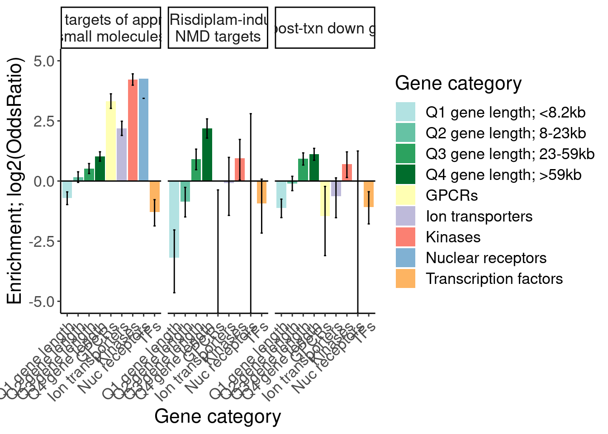
And also let’s print the table of p values and stuff for reference…
results %>%
bind_rows(.id="Druggability_GO") %>%
separate(Druggability_GO, into=c("Druggability", "GO category"), sep=";") %>%
mutate(GO = recode(`GO category`, "GOMF_KINASE_ACTIVITY"="Kinases", "GOMF_NUCLEAR_RECEPTOR_ACTIVITY"="Nuc receptors", "GOMF_G_PROTEIN_COUPLED_RECEPTOR_ACTIVITY"="GPCRs", "GOMF_MONOATOMIC_ION_TRANSMEMBRANE_TRANSPORTER_ACTIVITY"="Ion transporters", "GOMF_DNA_BINDING_TRANSCRIPTION_FACTOR_ACTIVITY"="TFs")) %>%
dplyr::select(-method, -`GO category`) %>%
kable()| Druggability | estimate | p.value | conf.low | conf.high | alternative | GO |
|---|---|---|---|---|---|---|
| Tier 3B | 9.1584316 | 0.0000000 | 7.2645120 | 11.4817690 | two.sided | Ion transporters |
| Tier 3B | 17.8318534 | 0.0000000 | 14.0484213 | 22.5384382 | two.sided | GPCRs |
| Tier 3B | 7.1777300 | 0.0000393 | 2.9207456 | 15.3880137 | two.sided | Nuc receptors |
| Tier 3B | 4.2068880 | 0.0000000 | 3.1530710 | 5.5375236 | two.sided | Kinases |
| Tier 3B | 0.2148774 | 0.0000000 | 0.0920764 | 0.4277921 | two.sided | TFs |
| Tier 3B | 1.0360823 | 0.7393335 | 0.8273790 | 1.2882130 | two.sided | 2 |
| Tier 3B | 0.9381724 | 0.6175399 | 0.7439220 | 1.1736752 | two.sided | 3 |
| Tier 3B | 1.1252871 | 0.2674937 | 0.9034546 | 1.3925325 | two.sided | 4 |
| Tier 3B | 1.5953272 | 0.0000049 | 1.3049055 | 1.9423057 | two.sided | 1 |
| Tier 3B | 1.5695556 | 0.0017286 | 1.1759211 | 2.0639941 | two.sided | OMIM_DomNegative |
| Tier 1 | 4.5775591 | 0.0000000 | 3.7197576 | 5.6022199 | two.sided | Ion transporters |
| Tier 1 | 10.0233817 | 0.0000000 | 8.1091459 | 12.3478953 | two.sided | GPCRs |
| Tier 1 | 19.0191977 | 0.0000000 | 10.8351038 | 33.2253463 | two.sided | Nuc receptors |
| Tier 1 | 18.6713523 | 0.0000000 | 15.8462886 | 21.9655357 | two.sided | Kinases |
| Tier 1 | 0.4073325 | 0.0000000 | 0.2742487 | 0.5844331 | two.sided | TFs |
| Tier 1 | 1.1224319 | 0.1361653 | 0.9627033 | 1.3047237 | two.sided | 2 |
| Tier 1 | 1.4346905 | 0.0000011 | 1.2415966 | 1.6542055 | two.sided | 3 |
| Tier 1 | 2.0315724 | 0.0000000 | 1.7744165 | 2.3226804 | two.sided | 4 |
| Tier 1 | 0.6106577 | 0.0000000 | 0.5070732 | 0.7310714 | two.sided | 1 |
| Tier 1 | 4.6770866 | 0.0000000 | 4.0250797 | 5.4242085 | two.sided | OMIM_DomNegative |
| Tier 2 | 3.3065440 | 0.0000000 | 2.4867452 | 4.3360520 | two.sided | Ion transporters |
| Tier 2 | 3.7628017 | 0.0000000 | 2.6857913 | 5.1671221 | two.sided | GPCRs |
| Tier 2 | 6.5159324 | 0.0000294 | 2.7985334 | 13.5045955 | two.sided | Nuc receptors |
| Tier 2 | 7.2893233 | 0.0000000 | 5.8415702 | 9.0413296 | two.sided | Kinases |
| Tier 2 | 0.5740051 | 0.0040124 | 0.3706802 | 0.8527182 | two.sided | TFs |
| Tier 2 | 1.2090959 | 0.0469397 | 0.9980052 | 1.4579726 | two.sided | 2 |
| Tier 2 | 1.6053487 | 0.0000002 | 1.3420347 | 1.9141582 | two.sided | 3 |
| Tier 2 | 1.4228886 | 0.0001555 | 1.1836140 | 1.7040751 | two.sided | 4 |
| Tier 2 | 0.7421310 | 0.0053825 | 0.5937480 | 0.9201179 | two.sided | 1 |
| Tier 2 | 2.4238705 | 0.0000000 | 1.9429889 | 3.0018796 | two.sided | OMIM_DomNegative |
| SplicingUnperturbedControl | 0.3653269 | 0.0156537 | 0.1176105 | 0.8637518 | two.sided | Ion transporters |
| SplicingUnperturbedControl | 0.1160682 | 0.0039433 | 0.0029283 | 0.6534926 | two.sided | GPCRs |
| SplicingUnperturbedControl | 0.0000000 | 1.0000000 | 0.0000000 | 3.8681414 | two.sided | Nuc receptors |
| SplicingUnperturbedControl | 1.5204465 | 0.0908983 | 0.9126993 | 2.3993212 | two.sided | Kinases |
| SplicingUnperturbedControl | 0.7482665 | 0.2601520 | 0.4503874 | 1.1769642 | two.sided | TFs |
| SplicingUnperturbedControl | 1.2800803 | 0.0415533 | 1.0025661 | 1.6223144 | two.sided | 2 |
| SplicingUnperturbedControl | 1.5278082 | 0.0003469 | 1.2093794 | 1.9186500 | two.sided | 3 |
| SplicingUnperturbedControl | 1.5680826 | 0.0001267 | 1.2430408 | 1.9668070 | two.sided | 4 |
| SplicingUnperturbedControl | 0.9730301 | 0.8987106 | 0.7466031 | 1.2551631 | two.sided | 1 |
| SplicingUnperturbedControl | 1.1430022 | 0.4497635 | 0.7808881 | 1.6262270 | two.sided | OMIM_DomNegative |
| SplicingPerturbed | 0.9386204 | 1.0000000 | 0.3715479 | 1.9773767 | two.sided | Ion transporters |
| SplicingPerturbed | 0.0000000 | 0.0163396 | 0.0000000 | 0.7741248 | two.sided | GPCRs |
| SplicingPerturbed | 0.0000000 | 1.0000000 | 0.0000000 | 6.9654439 | two.sided | Nuc receptors |
| SplicingPerturbed | 1.9206458 | 0.0245324 | 1.0268418 | 3.3166145 | two.sided | Kinases |
| SplicingPerturbed | 0.5246647 | 0.0763309 | 0.2231702 | 1.0557286 | two.sided | TFs |
| SplicingPerturbed | 0.5538893 | 0.0029441 | 0.3552937 | 0.8326365 | two.sided | 2 |
| SplicingPerturbed | 1.8721591 | 0.0000414 | 1.3860027 | 2.5082922 | two.sided | 3 |
| SplicingPerturbed | 4.5451953 | 0.0000000 | 3.4485599 | 5.9978310 | two.sided | 4 |
| SplicingPerturbed | 0.1103190 | 0.0000000 | 0.0399805 | 0.2443146 | two.sided | 1 |
| SplicingPerturbed | 2.1468543 | 0.0002109 | 1.4387333 | 3.1190947 | two.sided | OMIM_DomNegative |
| Tier 3A | 19.8449432 | 0.0000000 | 11.6405941 | 33.3450155 | two.sided | Ion transporters |
| Tier 3A | 5.4098961 | 0.0005572 | 2.0754929 | 11.9337986 | two.sided | GPCRs |
| Tier 3A | 19.7590682 | 0.0006250 | 3.8539321 | 63.4995983 | two.sided | Nuc receptors |
| Tier 3A | 5.5396300 | 0.0000175 | 2.6064320 | 10.7419787 | two.sided | Kinases |
| Tier 3A | 0.6510472 | 0.6269370 | 0.1306695 | 1.9937555 | two.sided | TFs |
| Tier 3A | 1.1419718 | 0.6476907 | 0.5965028 | 2.0619601 | two.sided | 2 |
| Tier 3A | 0.8630289 | 0.7608965 | 0.4202778 | 1.6327580 | two.sided | 3 |
| Tier 3A | 2.8520798 | 0.0000493 | 1.6883620 | 4.7608384 | two.sided | 4 |
| Tier 3A | 0.5357802 | 0.1253387 | 0.2209096 | 1.1271720 | two.sided | 1 |
| Tier 3A | 3.0707135 | 0.0006864 | 1.5702242 | 5.6275106 | two.sided | OMIM_DomNegative |
| Larger set of risdiplam-effected | 0.6431856 | 0.1165465 | 0.3478389 | 1.0943909 | two.sided | Ion transporters |
| Larger set of risdiplam-effected | 0.3620125 | 0.0160427 | 0.1165987 | 0.8552979 | two.sided | GPCRs |
| Larger set of risdiplam-effected | 0.0000000 | 0.4098360 | 0.0000000 | 2.3765859 | two.sided | Nuc receptors |
| Larger set of risdiplam-effected | 1.6256628 | 0.0103286 | 1.1067487 | 2.3176707 | two.sided | Kinases |
| Larger set of risdiplam-effected | 0.4746449 | 0.0002571 | 0.2907583 | 0.7349793 | two.sided | TFs |
| Larger set of risdiplam-effected | 0.9349390 | 0.5449357 | 0.7576516 | 1.1461573 | two.sided | 2 |
| Larger set of risdiplam-effected | 1.8919248 | 0.0000000 | 1.5862322 | 2.2508137 | two.sided | 3 |
| Larger set of risdiplam-effected | 2.1640447 | 0.0000000 | 1.8214016 | 2.5655820 | two.sided | 4 |
| Larger set of risdiplam-effected | 0.4578311 | 0.0000000 | 0.3484867 | 0.5929993 | two.sided | 1 |
| Larger set of risdiplam-effected | 1.0247280 | 0.8809431 | 0.7508390 | 1.3722556 | two.sided | OMIM_DomNegative |
| OMIM_DomNegative | 3.0516993 | 0.0000000 | 2.5247921 | 3.6715647 | two.sided | Ion transporters |
| OMIM_DomNegative | 1.1765324 | 0.3101460 | 0.8425683 | 1.6078825 | two.sided | GPCRs |
| OMIM_DomNegative | 5.3809014 | 0.0000002 | 2.8908877 | 9.6572225 | two.sided | Nuc receptors |
| OMIM_DomNegative | 2.3184865 | 0.0000000 | 1.8913974 | 2.8247566 | two.sided | Kinases |
| OMIM_DomNegative | 2.0352455 | 0.0000000 | 1.7399303 | 2.3727446 | two.sided | TFs |
| OMIM_DomNegative | 0.9246512 | 0.2124116 | 0.8163187 | 1.0452143 | two.sided | 2 |
| OMIM_DomNegative | 1.2483949 | 0.0001601 | 1.1121383 | 1.3993429 | two.sided | 3 |
| OMIM_DomNegative | 2.0875980 | 0.0000000 | 1.8789638 | 2.3174869 | two.sided | 4 |
| OMIM_DomNegative | 0.8581283 | 0.0162214 | 0.7556052 | 0.9723993 | two.sided | 1 |
| OMIM_DomNegative | Inf | 0.0000000 | 8402.0512839 | Inf | two.sided | OMIM_DomNegative |
DruggabilityCategories[1] "Tier 3B" "Tier 1"
[3] "Tier 2" "SplicingUnperturbedControl"
[5] "SplicingPerturbed" "Tier 3A"
[7] "Larger set of risdiplam-effected" "OMIM_DomNegative" GroupLabels <- c("OMIM_DomNegative"="Disease genes", "Whole genome"="Whole genome", "Tier 1"="1059 targets of approved small molecules", "SplicingPerturbed"="219 Risdiplam-induced NMD targets", "Larger set of risdiplam-effected"="627 post-txn down genes")
P.enrichmentByBarplot <- bind_rows(
DruggabilityCategories.totest.df %>%
filter(Group %in% c("Tier 1", "OMIM_DomNegative", "SplicingPerturbed", "Larger set of risdiplam-effected")),
CodingGenes %>%
mutate(Group = "Whole genome")
) %>%
left_join(
GO.genes.of.interest.totest %>%
filter(str_detect(GO_Name, "GOMF")),
by=c("gene"="ensembl_gene_id")
) %>%
distinct(gene, Group, .keep_all=T) %>%
replace_na(list(GO_Name="Other")) %>%
mutate(GO = recode(`GO_Name`, "GOMF_KINASE_ACTIVITY"="Kinases", "GOMF_NUCLEAR_RECEPTOR_ACTIVITY"="Nuc receptors", "GOMF_G_PROTEIN_COUPLED_RECEPTOR_ACTIVITY"="GPCRs", "GOMF_MONOATOMIC_ION_TRANSMEMBRANE_TRANSPORTER_ACTIVITY"="Ion transporters", "GOMF_DNA_BINDING_TRANSCRIPTION_FACTOR_ACTIVITY"="TFs")) %>%
count(Group, GO) %>%
mutate(Group = recode(Group, !!!GroupLabels)) %>%
mutate(Group = factor(Group, levels=c("1059 targets of approved small molecules", "219 Risdiplam-induced NMD targets", "627 post-txn down genes", "Whole genome", "Disease genes"))) %>%
filter(!Group=="627 post-txn down genes") %>%
ggplot(aes(x=Group, y=n, fill=GO)) +
geom_col(position="fill") +
scale_fill_manual(
values=c(
"GPCRs"="#ffffb3",
"Ion transporters"="#bebada",
"Kinases"="#fb8072",
"Nuc receptors"="#80b1d3",
"TFs"="#fdb462",
"Other"="#737373"),
labels=c(
"GPCRs"="GPCRs",
"Ion transporters",
"Kinases",
"Nuc receptors"="Nuclear receptors",
"TFs"="Transcription factors",
"Other"="Other"
)) +
scale_x_discrete(labels = function(x) str_wrap(x, width = 22), limits=rev) +
scale_y_continuous(expand=c(0,0)) +
labs(x=NULL, y="Fraction", fill="Gene category", caption=str_wrap("Disease genes are 1823 genes with dominant negative phenotypes in OMIM", 30)) +
coord_flip()
P.enrichmentByBarplot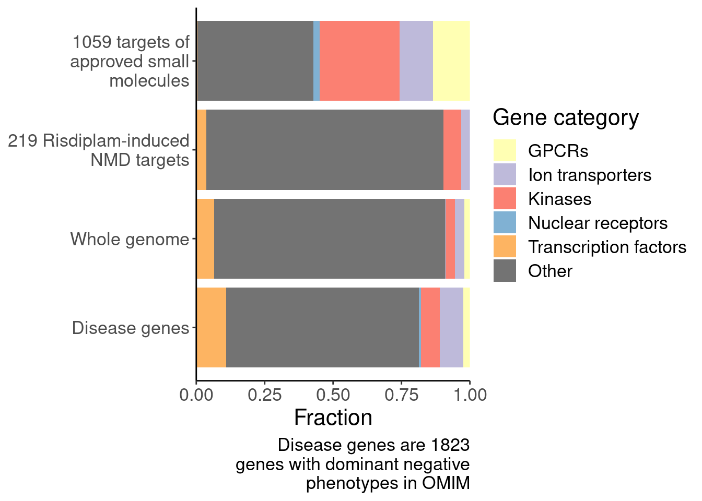
And also for reference, let’s print a list of the intersection of the OMIM genes and the NMD target sets… This isn’t the strongest filtering (for example, to really follow up on a potential target I would definitely manually inspect the data a lot closer), it’s just a quick reference.
OMIM.risdiplam.genes <- P.scatter.byPrediction.dat %>%
filter(FDR_polyA < 0.1) %>%
filter(logFC_polyA < -1) %>%
filter(ColorEffect == "NMD") %>%
dplyr::rename(DeltaPSI=Estimate) %>%
inner_join(
OMIM %>%
filter(!is.na(Phenotypes)) %>%
filter(!is.na(`Ensembl Gene ID`)) %>%
filter(str_detect(Phenotypes, "dominant")) %>%
dplyr::select("MIM Number":"Phenotypes"),
by=c("gene"="Ensembl Gene ID")
)
kable(OMIM.risdiplam.genes)| gene | dose.nM | logFC_chRNA | logFC_polyA | PValue_chRNA | PValue_polyA | FDR_chRNA | FDR_polyA | Category | ColorEffect | MergedEffect | junc | DeltaPSI | MIM Number | Gene Symbols | Gene Name | Approved Gene Symbol | Entrez Gene ID | Comments | Phenotypes |
|---|---|---|---|---|---|---|---|---|---|---|---|---|---|---|---|---|---|---|---|
| ENSG00000078403 | 3160 | 0.6755900 | -1.288923 | 0.0000034 | 0.0000000 | 0.0001318 | 0.0000002 | post-txn down | NMD | Frame shifting | chr10:21728675:21730900:+ | 0.7762386 | 602409 | AF10 | ALL1 fused gene from chromosome 10 | MLLT10 | 8028 | fuses with MLL and HEAB | Leukemia, acute myeloid, 601626 (3), Somatic mutation, Autosomal dominant |
| ENSG00000033030 | 3160 | 0.6288341 | -1.961917 | 0.0000090 | 0.0000000 | 0.0002713 | 0.0000000 | post-txn down | NMD | Frame shifting | chr12:122478292:122478664:- | 0.7376685 | 616381 | ZCCHC8, PFBMFT5 | Zinc finger CCHC domain-containing protein 8 | ZCCHC8 | 55596 | mutation identified in 1 PFBMFT5 family | ?Pulmonary fibrosis and/or bone marrow failure, telomere-related, 5, 618674 (3), Autosomal dominant |
| ENSG00000115415 | 3160 | 0.4927000 | -4.357511 | 0.0005217 | 0.0000000 | 0.0059284 | 0.0000000 | post-txn down | NMD | NMD | chr2:190977025:190978528:- | 0.9243423 | 600555 | STAT1, CANDF7, IMD31A, IMD31B, IMD31C | Signal transducer and activator of transcription-1 | STAT1 | 6772 | NA | Immunodeficiency 31C, chronic mucocutaneous candidiasis, autosomal dominant, 614162 (3), Autosomal dominant; Immunodeficiency 31A, mycobacteriosis, autosomal dominant, 614892 (3), Autosomal dominant; Immunodeficiency 31B, mycobacterial and viral infections, autosomal recessive, 613796 (3), Autosomal recessive |
| ENSG00000103335 | 3160 | 0.5567517 | -1.099484 | 0.0005570 | 0.0015190 | 0.0062411 | 0.0087129 | post-txn down | NMD | Frame shifting | chr16:88720532:88720660:- | 1.0025870 | 611184 | PIEZO1, FAM38A, MIB, DHS, LMPHM6 | PIEZO1 ion channel | PIEZO1 | 9780 | NA | Lymphatic malformation 6, 616843 (3), Autosomal recessive; Dehydrated hereditary stomatocytosis with or without pseudohyperkalemia and/or perinatal edema, 194380 (3), Autosomal dominant |
| ENSG00000100485 | 3160 | 0.3876746 | -1.104077 | 0.0009561 | 0.0086641 | 0.0094387 | 0.0339973 | post-txn down | NMD | Frame shifting | chr14:50130762:50133808:- | 0.9987109 | 601247 | SOS2, NS9 | SOS Ras/Rac guanine nucleotide exchange factor 2 | SOS2 | 6655 | NA | Noonan syndrome 9, 616559 (3), Autosomal dominant |
| ENSG00000096093 | 3160 | 0.0248003 | -1.004033 | 0.8927372 | 0.0278749 | 0.9771466 | 0.0810435 | post-txn down | NMD | Frame shifting | chr6:52428243:52438304:+ | 0.2162461 | 608815 | EFHC1, FLJ10466, EJM1, JAE, EJA1 | EF hand domain (C-terminal)-containing 1 | EFHC1 | 114327 | NA | {Epilepsy, juvenile absence, susceptibility to, 1}, 607631 (3), Autosomal dominant; {Myoclonic epilepsy, juvenile, susceptibility to, 1}, 254770 (3), Autosomal dominant |
| ENSG00000197386 | 3160 | NA | -1.836470 | NA | 0.0017826 | NA | 0.0099649 | Other | NMD | Frame shifting | chr4:3213736:3213958:+ | 0.9595212 | 613004 | HTT, HD, IT15, LOMARS | Huntingtin | HTT | 3064 | distal to D4S10 | Lopes-Maciel-Rodan syndrome, 617435 (3), Autosomal recessive; Huntington disease, 143100 (3), Autosomal dominant |
| ENSG00000159063 | 3160 | NA | -2.969738 | NA | 0.0000000 | NA | 0.0000000 | Other | NMD | Frame shifting | chr11:78106946:78108970:- | 0.2456783 | 608103 | ALG8, CDG1H, PCLD3 | ALG8 alpha-1,3-glucosyltransferase | ALG8 | 79053 | NA | Congenital disorder of glycosylation, type Ih, 608104 (3), Autosomal recessive; Polycystic liver disease 3 with or without kidney cysts, 617874 (3), Autosomal dominant |
| ENSG00000083799 | 3160 | NA | -1.214614 | NA | 0.0000207 | NA | 0.0002209 | Other | NMD | In-frame PTC | chr16:50775855:50776179:+ | 0.8050513 | 605018 | CYLD, CDMT, EAC, MFT1, KIAA0849, BRSS, FTDALS8 | CYLD lysine-63 deubiquitinase | CYLD | 1540 | mutation identified in 1 FTDALS8 family | Brooke-Spiegler syndrome, 605041 (3), Autosomal dominant; Cylindromatosis, familial, 132700 (3), Autosomal dominant; Trichoepithelioma, multiple familial, 1, 601606 (3), Autosomal dominant; ?Frontotemporal dementia and/or amyotrophic lateral sclerosis 8, 619132 (3), Autosomal dominant |
| ENSG00000154864 | 3160 | NA | -1.163771 | NA | 0.0057753 | NA | 0.0250624 | Other | NMD | Frame shifting | chr18:10702171:10702546:- | 0.9428523 | 613629 | PIEZO2, FAM38B, DA5, DA3, MWKS, DAIPT | PIEZO-type mechanosensitive ion channel component 2 | PIEZO2 | 63895 | mutation identified in 1 MWKS patient | Arthrogryposis, distal, type 5, 108145 (3), Autosomal dominant; Arthrogryposis, distal, with impaired proprioception and touch, 617146 (3), Autosomal recessive; Arthrogryposis, distal, type 3, 114300 (3), Autosomal dominant; ?Marden-Walker syndrome, 248700 (3), Autosomal dominant |
| ENSG00000154864 | 3160 | NA | -1.163771 | NA | 0.0057753 | NA | 0.0250624 | Other | NMD | Frame shifting | chr18:10911228:10963755:- | 0.0729154 | 613629 | PIEZO2, FAM38B, DA5, DA3, MWKS, DAIPT | PIEZO-type mechanosensitive ion channel component 2 | PIEZO2 | 63895 | mutation identified in 1 MWKS patient | Arthrogryposis, distal, type 5, 108145 (3), Autosomal dominant; Arthrogryposis, distal, with impaired proprioception and touch, 617146 (3), Autosomal recessive; Arthrogryposis, distal, type 3, 114300 (3), Autosomal dominant; ?Marden-Walker syndrome, 248700 (3), Autosomal dominant |
| ENSG00000154864 | 3160 | NA | -1.163771 | NA | 0.0057753 | NA | 0.0250624 | Other | NMD | Frame shifting | chr18:10702171:10702546:- | 0.9428523 | 613629 | PIEZO2, FAM38B, DA5, DA3, MWKS, DAIPT | PIEZO-type mechanosensitive ion channel component 2 | PIEZO2 | 63895 | mutation identified in 1 MWKS patient | Arthrogryposis, distal, type 5, 108145 (3), Autosomal dominant; Arthrogryposis, distal, with impaired proprioception and touch, 617146 (3), Autosomal recessive; Arthrogryposis, distal, type 3, 114300 (3), Autosomal dominant; ?Marden-Walker syndrome, 248700 (3), Autosomal dominant |
| ENSG00000154864 | 3160 | NA | -1.163771 | NA | 0.0057753 | NA | 0.0250624 | Other | NMD | Frame shifting | chr18:10911228:10963755:- | 0.0729154 | 613629 | PIEZO2, FAM38B, DA5, DA3, MWKS, DAIPT | PIEZO-type mechanosensitive ion channel component 2 | PIEZO2 | 63895 | mutation identified in 1 MWKS patient | Arthrogryposis, distal, type 5, 108145 (3), Autosomal dominant; Arthrogryposis, distal, with impaired proprioception and touch, 617146 (3), Autosomal recessive; Arthrogryposis, distal, type 3, 114300 (3), Autosomal dominant; ?Marden-Walker syndrome, 248700 (3), Autosomal dominant |
Now let’s plot the ecdf of gene length nicer for possible publication…
GeneLength.dat <- GeneCategories %>%
left_join(NumExonsAndLength) %>%
filter(!Group %in% c("Tier 2", "Tier 3A", "Tier 3B")) %>%
mutate(GeneLength = GeneLength/1E3)
GeneLength.dat %>% count(Group)# A tibble: 4 × 2
Group n
<chr> <int>
1 SplicingPerturbed 219
2 SplicingUnperturbedControl 396
3 Tier 1 1059
4 Whole protein coding genome 18484GeneLength.dat %>%
filter(Group %in% c("SplicingPerturbed", "SplicingUnperturbedControl")) %>%
wilcox.test(GeneLength~Group,data = .)
Wilcoxon rank sum test with continuity correction
data: GeneLength by Group
W = 60572, p-value = 3.458e-16
alternative hypothesis: true location shift is not equal to 0P.geneLength <- ggplot(GeneLength.dat, aes(x=GeneLength, color=Group)) +
stat_ecdf() +
scale_x_continuous(trans='log10') +
annotation_logticks() +
coord_cartesian(xlim=c(1, 500)) +
scale_color_manual(
labels=c(
"SplicingPerturbed"="219 Risdiplam-induced NMD targets",
"SplicingUnperturbedControl"="389 expression-matched genes",
"Whole protein coding genome"="Whole genome",
"Tier 1"="1059 targets of approved small molecules"),
values=c(
"SplicingPerturbed"="#e31a1c",
"SplicingUnperturbedControl"="#1f78b4",
"Whole protein coding genome"="#000000",
"Tier 1"="#737373")
) +
labs(y="ecdf", color="Druggability gene group", x="Gene length (kb)", caption="Splicing perturbed to control P: 3.4x10^-15")
P.geneLength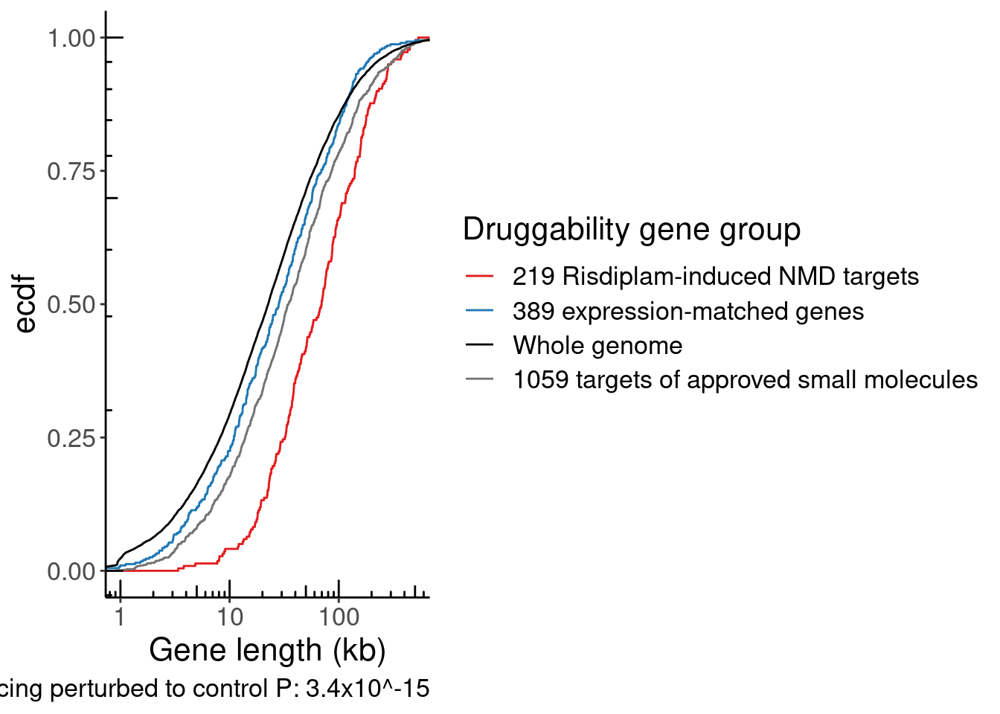
Even though the point is that longer genes are more likely to have a splicing change due to chance, I kind of want to repeat this analysis in a way that isn’t dependent on splicing and has no testing difference in long vs short genes… That is, by looking at post-txn down genes, they should be longer than expression matched controls…
SplicingDruggableGenes_ByPostTxn <- Scatter.dat %>%
filter(Category == "post-txn down") %>%
filter(gene %in% CodingGenes$gene) %>%
dplyr::select(gene) %>%
distinct(gene, .keep_all=T)
Expression.tidyForMatchingGenes <- Expression.table.genes %>%
mutate(IsSplicingDruggable = gene %in% SplicingDruggableGenes_ByPostTxn$gene) %>%
arrange(medianTPM) %>%
mutate(LaggingGeneGroup = lag(IsSplicingDruggable)) %>%
mutate(LeadingGeneGroup = lead(IsSplicingDruggable)) %>%
ungroup()
Merged.WithExpressionMatchedControlGenes <-
bind_rows(
Expression.tidyForMatchingGenes %>%
filter(IsSplicingDruggable) %>%
mutate(Group = "SplicingPerturbed"),
Expression.tidyForMatchingGenes %>%
filter(!IsSplicingDruggable & LaggingGeneGroup) %>%
mutate(Group = "SplicingUnperturbedControl"),
Expression.tidyForMatchingGenes %>%
filter(!IsSplicingDruggable & LeadingGeneGroup) %>%
mutate(Group = "SplicingUnperturbedControl"),
) %>%
dplyr::select(gene, medianTPM, Group)
Merged.WithExpressionMatchedControlGenes %>%
ggplot(aes(medianTPM, color=Group)) +
stat_ecdf() +
scale_x_continuous(trans='log10')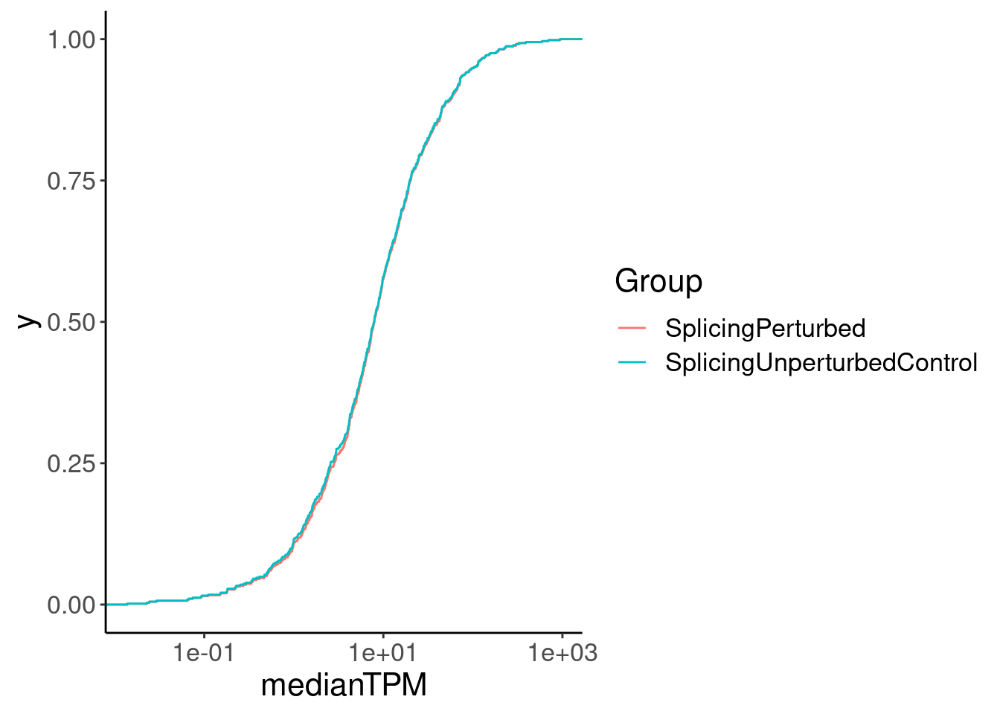
GeneLength.dat <- GeneCategories %>%
filter(Group %in% c("Tier 1", "Whole protein coding genome")) %>%
bind_rows(Merged.WithExpressionMatchedControlGenes) %>%
left_join(NumExonsAndLength) %>%
mutate(GeneLength = GeneLength/1E3)
GeneLength.dat %>%
count(Group)# A tibble: 4 × 2
Group n
<chr> <int>
1 SplicingPerturbed 604
2 SplicingUnperturbedControl 1142
3 Tier 1 1059
4 Whole protein coding genome 18484GeneLength.dat %>%
filter(Group %in% c("SplicingPerturbed", "SplicingUnperturbedControl")) %>%
wilcox.test(GeneLength~Group,data = .)
Wilcoxon rank sum test with continuity correction
data: GeneLength by Group
W = 427220, p-value < 2.2e-16
alternative hypothesis: true location shift is not equal to 0P.geneLength.FromPostTxnSet <- ggplot(GeneLength.dat, aes(x=GeneLength, color=Group)) +
stat_ecdf() +
scale_x_continuous(trans='log10') +
annotation_logticks() +
coord_cartesian(xlim=c(1, 500)) +
scale_color_manual(
labels=c(
"SplicingPerturbed"="604 Risdiplam-induced post-txn down genes",
"SplicingUnperturbedControl"="1142 expression-matched genes",
"Whole protein coding genome"="Whole genome",
"Tier 1"="1059 targets of approved small molecules"),
values=c(
"SplicingPerturbed"="#e31a1c",
"SplicingUnperturbedControl"="#1f78b4",
"Whole protein coding genome"="#000000",
"Tier 1"="#737373")
) +
labs(y="ecdf", color="Druggability gene group", x="Gene length (kb)", caption="Splicing perturbed to control P<2.2x10^-16")
P.geneLength.FromPostTxnSet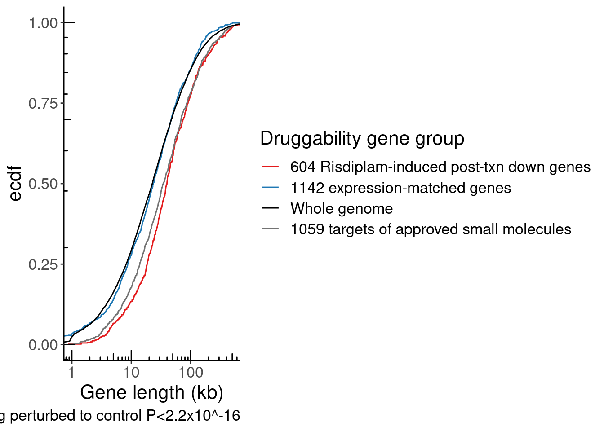
I think the last thing I want to show are some examples of dose response curves…
Let’s start by doing all the genes that intersect the OMIM short list.
OMIM.risdiplam.genes# A tibble: 13 × 20
gene dose.nM logFC_chRNA logFC_polyA PValue_chRNA PValue_polyA FDR_chRNA
<chr> <dbl> <dbl> <dbl> <dbl> <dbl> <dbl>
1 ENSG0000… 3160 0.676 -1.29 0.00000339 9.04e- 9 0.000132
2 ENSG0000… 3160 0.629 -1.96 0.00000902 9.49e-12 0.000271
3 ENSG0000… 3160 0.493 -4.36 0.000522 1.42e-36 0.00593
4 ENSG0000… 3160 0.557 -1.10 0.000557 1.52e- 3 0.00624
5 ENSG0000… 3160 0.388 -1.10 0.000956 8.66e- 3 0.00944
6 ENSG0000… 3160 0.0248 -1.00 0.893 2.79e- 2 0.977
7 ENSG0000… 3160 NA -1.84 NA 1.78e- 3 NA
8 ENSG0000… 3160 NA -2.97 NA 1.38e-18 NA
9 ENSG0000… 3160 NA -1.21 NA 2.07e- 5 NA
10 ENSG0000… 3160 NA -1.16 NA 5.78e- 3 NA
11 ENSG0000… 3160 NA -1.16 NA 5.78e- 3 NA
12 ENSG0000… 3160 NA -1.16 NA 5.78e- 3 NA
13 ENSG0000… 3160 NA -1.16 NA 5.78e- 3 NA
# … with 13 more variables: FDR_polyA <dbl>, Category <chr>, ColorEffect <chr>,
# MergedEffect <chr>, junc <chr>, DeltaPSI <dbl>, `MIM Number` <dbl>,
# `Gene Symbols` <chr>, `Gene Name` <chr>, `Approved Gene Symbol` <chr>,
# `Entrez Gene ID` <dbl>, Comments <chr>, Phenotypes <chr>Expression.tidyForDose_ActualDataForModel <- read_tsv("../code/SmallMolecule/FitModels/Data/polyA_genes.tsv.gz")
#Calculate factors to visually normalize chRNA and polyA to the same value at dose.nM==0
DiffFactors <- Expression.tidyForDose_ActualDataForModel %>%
filter(dose.nM == 0) %>%
group_by(Geneid, LibraryType) %>%
summarise(MeanLog2CPM=mean(Log2CPM)) %>%
ungroup() %>%
pivot_wider(names_from="LibraryType", values_from="MeanLog2CPM") %>%
mutate(DiffFactor = polyA - chRNA)
Splicing.tidyForDose_ActualDataForModel <- read_tsv("../code/SmallMolecule/CassetteExons/TidyPSI.tsv.gz") %>%
inner_join(
P.boxplot.dat %>%
filter(dataset=="polyA") %>%
dplyr::select(GAGTjunc=GAGTInt, gene, ColorEffect, MergedEffect, ExonStart_Cassette, ExonStop_Cassette) %>%
unite(Exon, ExonStart_Cassette,ExonStop_Cassette, sep="-")
)
P.OMIM.splicing.Effections <- Splicing.tidyForDose_ActualDataForModel %>%
filter(gene %in% OMIM.risdiplam.genes$gene) %>%
left_join(ensembl_to_symbols, by=c("gene"="ensembl_gene_id")) %>%
mutate(chrom = str_extract(GAGTjunc, "^chr.+?:")) %>%
mutate(facet = str_glue("{hgnc_symbol}\n{chrom}{Exon}")) %>%
# filter(libType=="polyA") %>%
# mutate(dose.nM = dose.nM + 0.1) %>%
ggplot(aes(x=dose.nM, y=PSI, color=libType)) +
geom_point() +
scale_color_manual(values=c("chRNA"="#969696", "polyA"="#252525")) +
geom_smooth(
data = . %>%
filter(libType=="polyA"),
method = drm, method.args = list(fct = L.4(names=c("Steepness", "LowerLimit", "UpperLimit", "ED50"))), se = FALSE) +
scale_x_continuous(trans="log1p", limits=c(0, 10000), breaks=c(10000, 3160, 1000, 316, 100, 31.6, 10, 3.16, 0) + 0.1, labels=rev(c("0", "3.16","10","31.6","100", "316", "1000", "3160", "10000"))) + facet_wrap(~facet, scales="free_y") +
Rotate_x_labels +
labs(x="[risdiplam] (nanomolar)", y="Splicing of indicated NMD exon; PSI")
P.OMIM.splicing.Effections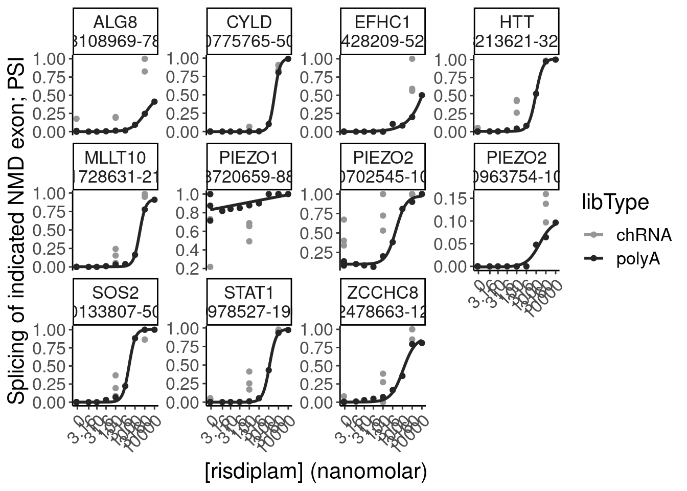
P.OMIM.expression.Effections <- Expression.tidyForDose_ActualDataForModel %>%
dplyr::rename(libType = "LibraryType") %>%
filter(ensembl_gene_id %in% OMIM.risdiplam.genes$gene) %>%
left_join(ensembl_to_symbols) %>%
left_join(DiffFactors) %>%
mutate(Log2CPM = case_when(
libType == "polyA" ~ Log2CPM,
libType == "chRNA" ~ Log2CPM + DiffFactor
)) %>%
# mutate(dose.nM = dose.nM + 0.1) %>%
ggplot(aes(x=dose.nM, y=Log2CPM, color=libType)) +
geom_point() +
scale_color_manual(values=c("chRNA"="#969696", "polyA"="#252525")) +
geom_smooth(
data = . %>%
filter(libType=="polyA"),
method = drm, method.args = list(fct = L.4(names=c("Steepness", "LowerLimit", "UpperLimit", "ED50"))), se = FALSE) +
scale_x_continuous(trans="log1p", limits=c(0, 10000), breaks=c(10000, 3160, 1000, 316, 100, 31.6, 10, 3.16, 0), labels=rev(c("0", "3.16","10","31.6","100", "316", "1000", "3160", "10000"))) +
facet_wrap(~hgnc_symbol, scales="free_y") +
Rotate_x_labels +
# scale_x_break(c(1,2)) +
labs(x="[risdiplam] (nanomolar)", y=expression("Expression; "*log["2"]*"CPM"))
P.OMIM.expression.Effections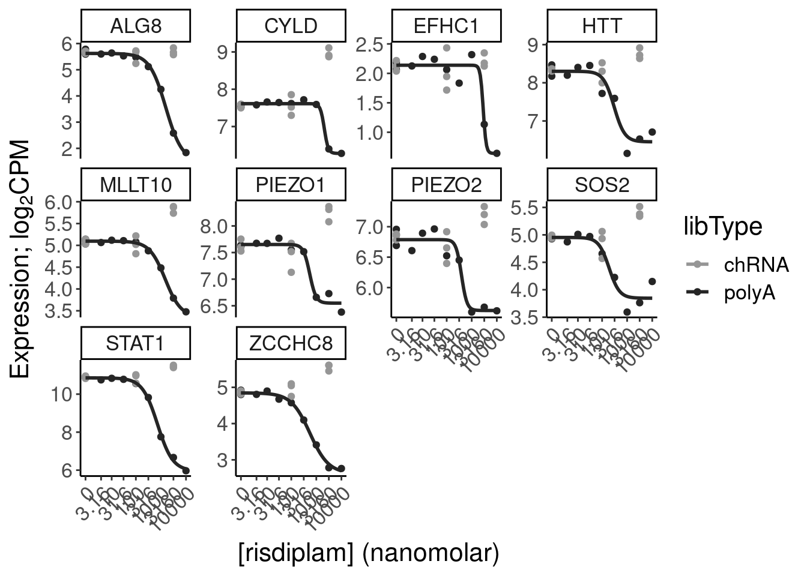
Expression.tidyForDose_ActualDataForModel %>%
dplyr::rename(libType = "LibraryType") %>%
# filter(ensembl_gene_id %in% OMIM.risdiplam.genes$gene) %>%
left_join(ensembl_to_symbols) %>%
filter(hgnc_symbol %in% c("HTT", "MYB", "STAT1")) %>%
left_join(DiffFactors) %>%
mutate(Log2CPM = case_when(
libType == "polyA" ~ Log2CPM,
libType == "chRNA" ~ Log2CPM + DiffFactor
)) %>%
# mutate(dose.nM = dose.nM + 0.1) %>%
ggplot(aes(x=dose.nM, y=Log2CPM, color=libType)) +
geom_point() +
scale_color_manual(values=c("chRNA"="#969696", "polyA"="#252525")) +
geom_smooth(
data = . %>%
filter(libType=="polyA"),
method = drm, method.args = list(fct = L.4(names=c("Steepness", "LowerLimit", "UpperLimit", "ED50"))), se = FALSE) +
scale_x_continuous(trans="log1p", limits=c(0, 10000), breaks=c(10000, 3160, 1000, 316, 100, 31.6, 10, 3.16, 0), labels=rev(c("0", "3.16","10","31.6","100", "316", "1000", "3160", "10000"))) +
facet_wrap(~hgnc_symbol, scales="free_y") +
Rotate_x_labels +
# scale_x_break(c(1,2)) +
labs(x="[risdiplam] (nanomolar)", y=expression("Expression; "*log["2"]*"CPM"))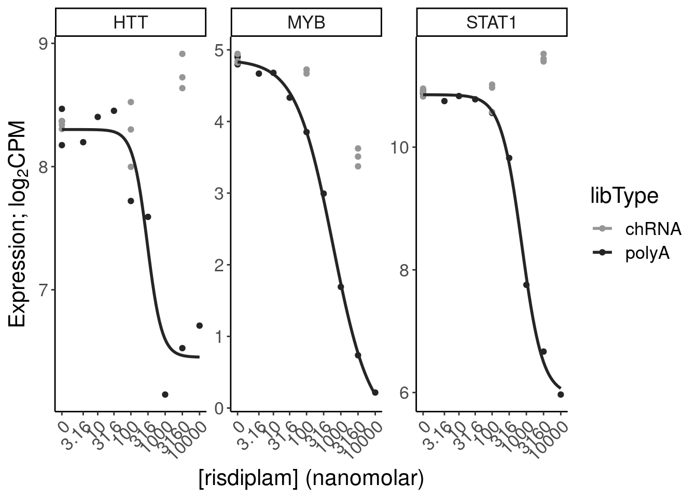
One more version with just log2FC on y axis so we don’t have to artifiially/misleadingly set different CPM scale for chRNA.
Expression.tidyForDose_ActualDataForModel.Relative <- Expression.tidyForDose_ActualDataForModel %>%
left_join(
Expression.tidyForDose_ActualDataForModel %>%
filter(dose.nM == 0) %>%
group_by(LibraryType, Geneid) %>%
summarise(MeanNormalCPM = mean(Log2CPM, na.rm=T))
) %>%
mutate()
P.OMIM.expression.Effections <- Expression.tidyForDose_ActualDataForModel.Relative %>%
dplyr::rename(libType = "LibraryType") %>%
filter(ensembl_gene_id %in% OMIM.risdiplam.genes$gene) %>%
left_join(ensembl_to_symbols) %>%
# mutate(dose.nM = dose.nM + 0.1) %>%
ggplot(aes(x=dose.nM, y=Log2CPM-MeanNormalCPM, color=libType)) +
geom_point() +
scale_color_manual(values=c("chRNA"="#969696", "polyA"="#252525")) +
geom_smooth(
data = . %>%
filter(libType=="polyA"),
method = drm, method.args = list(fct = L.4(names=c("Steepness", "LowerLimit", "UpperLimit", "ED50"))), se = FALSE) +
scale_x_continuous(trans="log1p", limits=c(0, 10000), breaks=c(10000, 3160, 1000, 316, 100, 31.6, 10, 3.16, 0), labels=rev(c("0", "3.16","10","31.6","100", "316", "1000", "3160", "10000"))) + facet_wrap(~hgnc_symbol, scales="free_y") +
Rotate_x_labels +
labs(x="[risdiplam] (nanomolar)", y=expression("Expression "*log["2"]*"FC"))
P.OMIM.expression.Effections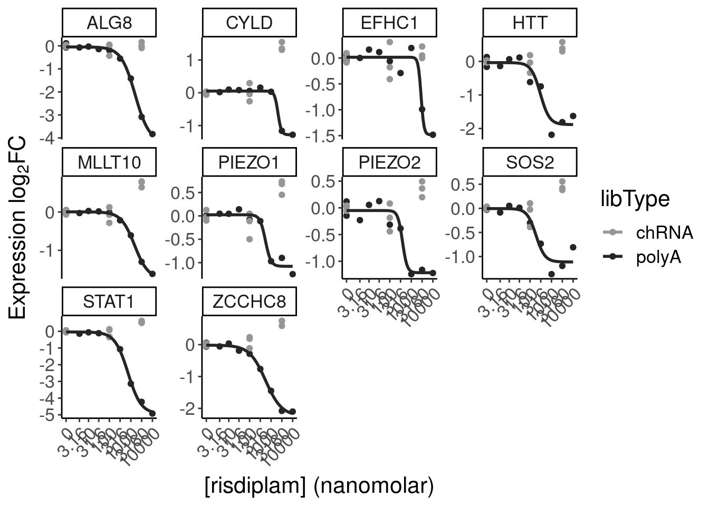
Get just the stat1 data and save
P.stat1.expression <- Expression.tidyForDose_ActualDataForModel.Relative %>%
dplyr::rename(libType = "LibraryType") %>%
left_join(ensembl_to_symbols) %>%
filter(hgnc_symbol == "STAT1") %>%
# mutate(dose.nM = dose.nM + 0.1) %>%
ggplot(aes(x=dose.nM, y=Log2CPM-MeanNormalCPM, color=libType)) +
geom_point() +
scale_color_manual(values=c("chRNA"="#969696", "polyA"="#252525")) +
geom_smooth(
data = . %>%
filter(libType=="polyA"),
method = drm, method.args = list(fct = L.4(names=c("Steepness", "LowerLimit", "UpperLimit", "ED50"))), se = FALSE) +
scale_x_continuous(trans="log1p", limits=c(0, 10000), breaks=c(10000, 3160, 1000, 316, 100, 31.6, 10, 3.16, 0), labels=rev(c("0", "3.16","10","31.6","100", "316", "1000", "3160", "10000"))) +
# Rotate_x_labels +
scale_x_break(c(2,2)) +
theme(axis.text.x.top = element_blank(),
axis.ticks.x.top = element_blank(),
axis.line.x.top = element_blank(),
plot.background = element_blank()) +
Rotate_x_labels +
labs(x="[risdiplam] (nanomolar)", y=expression("STAT1 expression; "*log["2"]*"FC"))
P.stat1.expression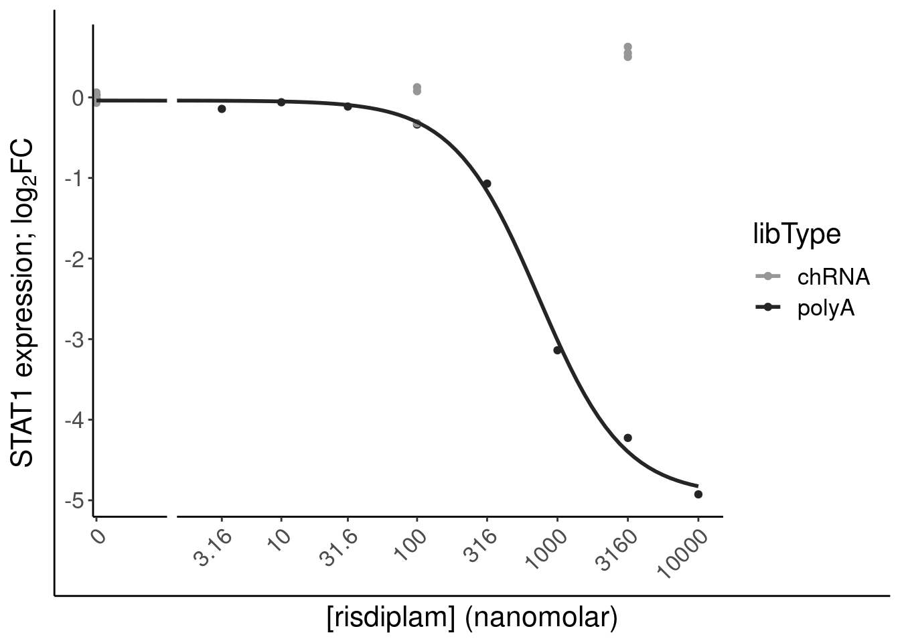
P.stat1.splicing <- Splicing.tidyForDose_ActualDataForModel %>%
left_join(ensembl_to_symbols, by=c("gene"="ensembl_gene_id")) %>%
filter(hgnc_symbol == "STAT1") %>%
mutate(chrom = str_extract(GAGTjunc, "^chr.+?:")) %>%
mutate(facet = str_glue("{hgnc_symbol}\n{chrom}{Exon}")) %>%
# filter(libType=="polyA") %>%
# mutate(dose.nM = dose.nM + 0.1) %>%
ggplot(aes(x=dose.nM, y=PSI, color=libType)) +
geom_point() +
scale_color_manual(values=c("chRNA"="#969696", "polyA"="#252525")) +
geom_smooth(
data = . %>%
filter(libType=="polyA"),
method = drm, method.args = list(fct = L.4(names=c("Steepness", "LowerLimit", "UpperLimit", "ED50"))), se = FALSE) +
labs(x="[risdiplam] (nanomolar)", y="Splicing of\nNMD-targeting exon; PSI") +
scale_x_continuous(trans="log1p", limits=c(0, 10000), breaks=c(10000, 3160, 1000, 316, 100, 31.6, 10, 3.16, 0), labels=rev(c("0", "3.16","10","31.6","100", "316", "1000", "3160", "10000"))) +
# Rotate_x_labels +
scale_x_break(c(2,2)) +
theme(axis.text.x.top = element_blank(),
axis.ticks.x.top = element_blank(),
axis.line.x.top = element_blank(),
plot.background = element_blank()) +
Rotate_x_labels
P.stat1.splicing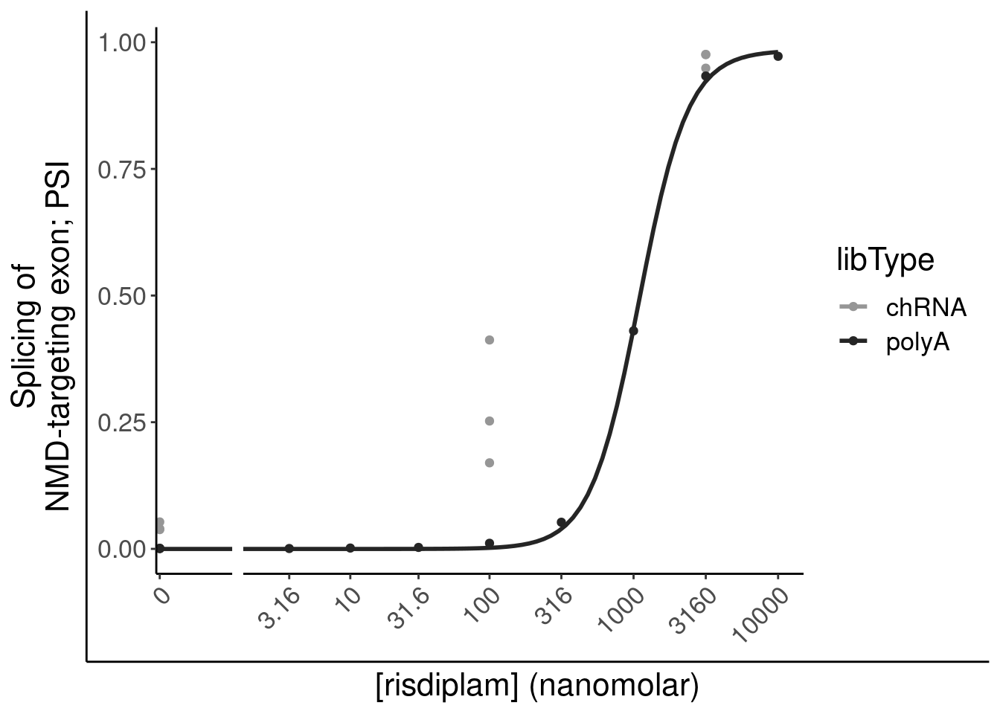
Get just myb data and save
P.myb.expression <- Expression.tidyForDose_ActualDataForModel.Relative %>%
dplyr::rename(libType = "LibraryType") %>%
left_join(ensembl_to_symbols) %>%
filter(hgnc_symbol == "MYB") %>%
# mutate(dose.nM = dose.nM + 0.1) %>%
ggplot(aes(x=dose.nM, y=Log2CPM-MeanNormalCPM, color=libType)) +
geom_point() +
scale_color_manual(values=c("chRNA"="#969696", "polyA"="#252525"), labels=c("chRNA"="naRNA", "polyA"="steady-state")) +
geom_smooth(
data = . %>%
filter(libType=="polyA"),
method = drm, method.args = list(fct = L.4(names=c("Steepness", "LowerLimit", "UpperLimit", "ED50"))), se = FALSE) +
scale_x_continuous(trans="log1p", limits=c(0, 10000), breaks=c(10000, 3160, 1000, 316, 100, 31.6, 10, 3.16, 0), labels=rev(c("0", "3.16","10","31.6","100", "316", "1000", "3160", "10000"))) +
# Rotate_x_labels +
# scale_x_break(c(2,2)) +
theme(axis.text.x.top = element_blank(),
axis.ticks.x.top = element_blank(),
axis.line.x.top = element_blank(),
plot.background = element_blank()) +
Rotate_x_labels +
labs(x="[risdiplam] (nanomolar)", y=expression("MYB expression; "*log["2"]*"FC"))
P.myb.expression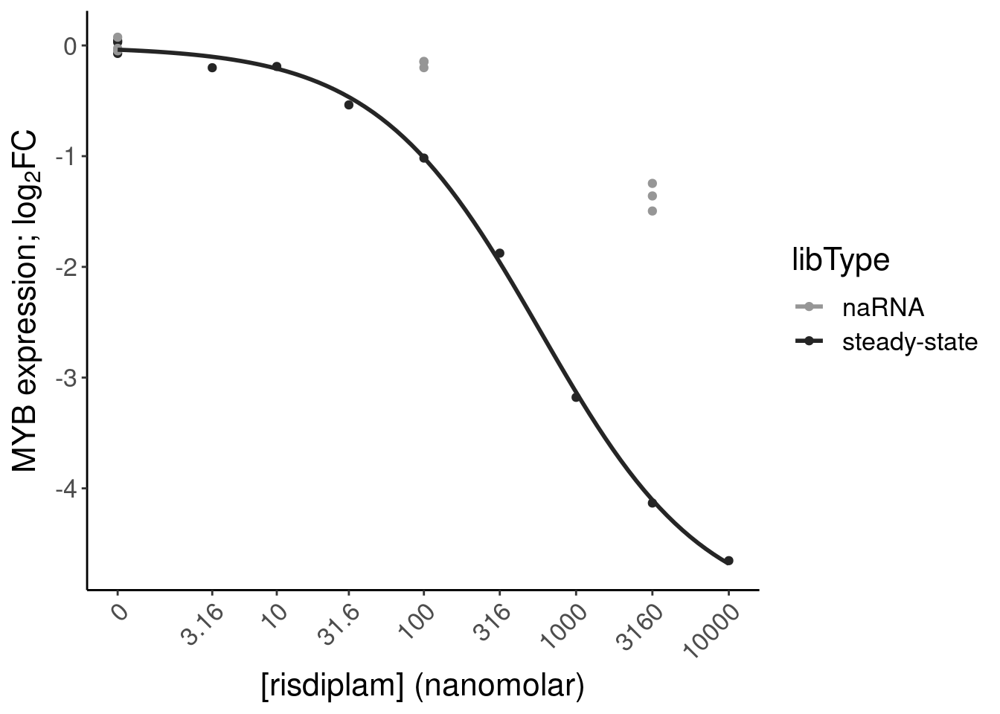
P.myb.splicing <- Splicing.tidyForDose_ActualDataForModel %>%
left_join(ensembl_to_symbols, by=c("gene"="ensembl_gene_id")) %>%
filter(gene == "ENSG00000142599") %>%
# filter(hgnc_symbol == "MYB") %>%
mutate(chrom = str_extract(GAGTjunc, "^chr.+?:")) %>%
mutate(facet = str_glue("{hgnc_symbol}\n{chrom}{Exon}")) %>%
# filter(libType=="polyA") %>%
# mutate(dose.nM = dose.nM + 0.1) %>%
ggplot(aes(x=dose.nM, y=PSI, color=libType)) +
geom_point() +
scale_color_manual(values=c("chRNA"="#969696", "polyA"="#252525"), labels=c("chRNA"="naRNA", "polyA"="steady-state")) +
geom_smooth(
data = . %>%
filter(libType=="polyA"),
method = drm, method.args = list(fct = L.4(names=c("Steepness", "LowerLimit", "UpperLimit", "ED50"))), se = FALSE) +
labs(x="[risdiplam] (nanomolar)", y="Splicing of\nNMD-targeting exon; PSI") +
scale_x_continuous(trans="log1p", limits=c(0, 10000), breaks=c(10000, 3160, 1000, 316, 100, 31.6, 10, 3.16, 0), labels=rev(c("0", "3.16","10","31.6","100", "316", "1000", "3160", "10000"))) +
# Rotate_x_labels +
# scale_x_break(c(2,2)) +
theme(axis.text.x.top = element_blank(),
axis.ticks.x.top = element_blank(),
axis.line.x.top = element_blank(),
plot.background = element_blank()) +
Rotate_x_labels
P.myb.splicing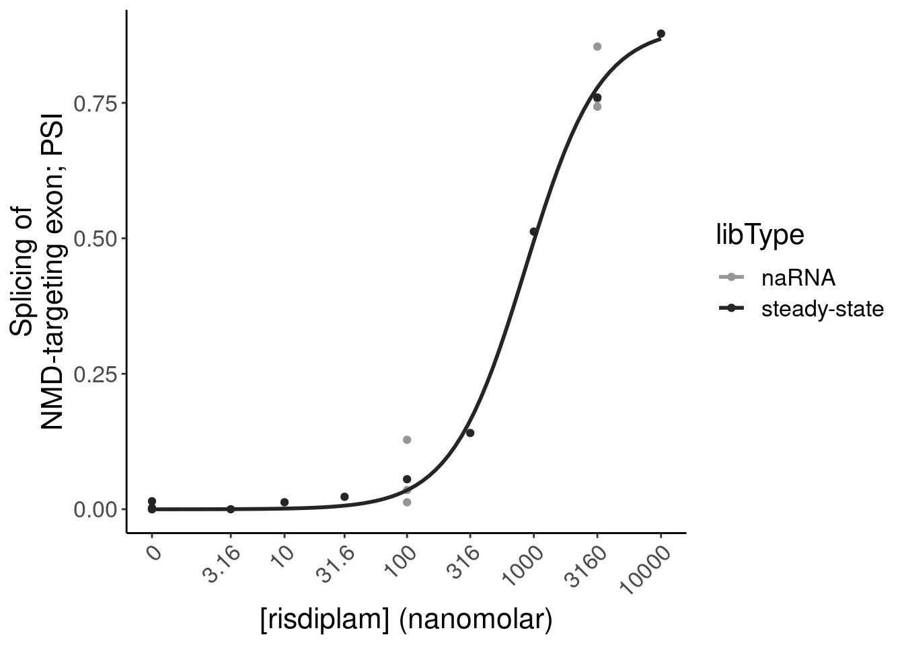
P.myb.splicing <- ggplotify::as.ggplot(print(P.myb.splicing))
P.myb.expression <- ggplotify::as.ggplot(print(P.myb.expression))Check SRSF10 for Jon
SpearmanCorr %>%
distinct(Intron, .keep_all=T) %>%
filter(substr(DonorSeq, 3,4)=="GA") %>%
filter(q<0.1) # A tibble: 641 × 15
Intron Leafcutter.ID DonorSeq DonorScore treatment dose.nM Cell.type
<chr> <chr> <chr> <dbl> <chr> <dbl> <chr>
1 chr1:2189781:2… chr1:2189781… CAGAGTA… 4.53 DMSO 0 LCL
2 chr1:8365974:8… chr1:8365974… AAGAGTA… 5.52 DMSO 0 LCL
3 chr1:18921121:… chr1:1892112… AGGAGTA… 6.27 DMSO 0 LCL
4 chr1:23863271:… chr1:2386327… AGGAGTA… 2.87 DMSO 0 LCL
5 chr1:23875662:… chr1:2387566… AAGAGTA… 4.83 DMSO 0 LCL
6 chr1:28151059:… chr1:2815105… AGGAGTA… 5.30 DMSO 0 LCL
7 chr1:28172527:… chr1:2817252… AGGAGTA… 5.30 DMSO 0 LCL
8 chr1:37493814:… chr1:3749381… GAGAGTA… 5.59 DMSO 0 LCL
9 chr1:41028726:… chr1:4102872… AAGAGTA… 6.42 DMSO 0 LCL
10 chr1:44313228:… chr1:4431322… TAGAGTA… 4.50 DMSO 0 LCL
# … with 631 more rows, and 8 more variables: LibraryType <chr>, rep <dbl>,
# PSI <dbl>, Counts <dbl>, n <dbl>, spearman <dbl>, spearman.p <dbl>, q <dbl>SpearmanCorr %>%
distinct(Intron, .keep_all=T) %>%
filter(substr(DonorSeq, 3,4)=="GA") %>%
separate(Intron, into=c("chrom", "start", "stop", "strand"), sep=":") %>%
dplyr::select(chrom, start, stop, strand, Leafcutter.ID, spearman, strand) %>%
arrange(chrom, start, stop) %>%
write_tsv("../code/scratch/AllGAGTInts.bed", col_names = F)
Expression.tidyForDose_ActualDataForModel %>%
filter(ensembl_gene_id == "ENSG00000188529") %>%
dplyr::rename(libType=LibraryType) %>%
ggplot(aes(x=dose.nM, y=Log2CPM, color=libType)) +
geom_point() +
scale_color_manual(values=c("chRNA"="#969696", "polyA"="#252525"), labels=c("chRNA"="naRNA", "polyA"="steady-state")) +
geom_smooth(
data = . %>%
filter(libType=="polyA"),
method = drm, method.args = list(fct = L.4(names=c("Steepness", "LowerLimit", "UpperLimit", "ED50"))), se = FALSE) +
labs(x="[risdiplam] (nanomolar)", y="Splicing of\nNMD-targeting exon; PSI") +
scale_x_continuous(trans="log1p", limits=c(0, 10000), breaks=c(10000, 3160, 1000, 316, 100, 31.6, 10, 3.16, 0), labels=rev(c("0", "3.16","10","31.6","100", "316", "1000", "3160", "10000"))) +
# Rotate_x_labels +
# scale_x_break(c(2,2)) +
theme(axis.text.x.top = element_blank(),
axis.ticks.x.top = element_blank(),
axis.line.x.top = element_blank(),
plot.background = element_blank()) +
Rotate_x_labels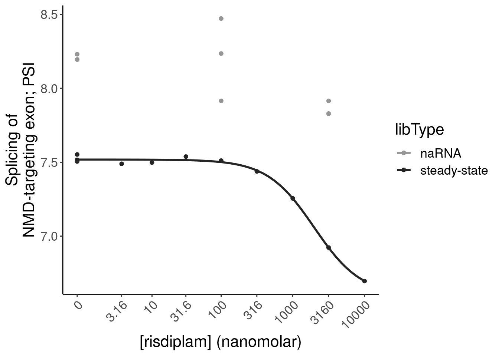
ggsave("/project2/yangili1/carlos_and_ben_shared/rough_figs/OriginalSubplots/2023_FinalFig4_Bar.pdf", P.bar, height=4, width=9)
ggsave("/project2/yangili1/carlos_and_ben_shared/rough_figs/OriginalSubplots/2023_FinalFig4_BarSimpler.pdf", P.bar.simpler, height=3, width=8)
ggsave("/project2/yangili1/carlos_and_ben_shared/rough_figs/OriginalSubplots/2023_FinalFig4_BarSimpler.Fixed.pdf", P.bar.simpler.fixed, height=1.5, width=4)
ggsave("/project2/yangili1/carlos_and_ben_shared/rough_figs/OriginalSubplots/2023_FinalFig4_BoxLarge.pdf", P.box.small, height=3, width=4)
ggsave("/project2/yangili1/carlos_and_ben_shared/rough_figs/OriginalSubplots/2023_FinalFig4_BoxSmall.pdf", P.box, height=3, width=4)
ggsave("/project2/yangili1/carlos_and_ben_shared/rough_figs/OriginalSubplots/2023_FinalFig4_chRNA_polyA_DE_scatter.pdf",P.scatter, height=6, width=8)
ggsave("/project2/yangili1/carlos_and_ben_shared/rough_figs/OriginalSubplots/2023_FinalFig4_MeanDeltaPSI.pdf",P.MeanDeltaPSI, height=3, width=6)
ggsave("/project2/yangili1/carlos_and_ben_shared/rough_figs/OriginalSubplots/2023_FinalFig4_DosePSI_SpearmanDist.pdf",P.spearman.dist, height=6, width=6)
ggsave("/project2/yangili1/carlos_and_ben_shared/rough_figs/OriginalSubplots/2023_FinalFig4_PSI_v_DE_ByPrediction.pdf",P.scatter.byPrediction, height=5, width=8)
ggsave("/project2/yangili1/carlos_and_ben_shared/rough_figs/OriginalSubplots/2023_FinalFig4_PSI_v_DE_ByPrediction_chRNA.pdf",P.scatter.byPrediction.chRNA, height=5, width=8)
ggsave("/project2/yangili1/carlos_and_ben_shared/rough_figs/OriginalSubplots/2023_FinalFig4_GeneSetEnrichment.pdf",P.genesetEnrichment, height=5, width=10)
ggsave("/project2/yangili1/carlos_and_ben_shared/rough_figs/OriginalSubplots/2023_FinalFig4_GeneSetEnrichment_QualitativeBarplot.pdf",P.enrichmentByBarplot, height=4, width=6)
ggsave("/project2/yangili1/carlos_and_ben_shared/rough_figs/OriginalSubplots/2023_FinalFig4_GeneLength.pdf",P.geneLength, height=3, width=7)
ggsave("/project2/yangili1/carlos_and_ben_shared/rough_figs/OriginalSubplots/2023_FinalFig4_GeneLength_NumExons.pdf",P.NumExons, height=3, width=7)
ggsave("/project2/yangili1/carlos_and_ben_shared/rough_figs/OriginalSubplots/2023_FinalFig4_GeneLength_LengthHostIntrons.pdf",P.IntLen, height=3, width=5)
ggsave("/project2/yangili1/carlos_and_ben_shared/rough_figs/OriginalSubplots/2023_FinalFig4_GeneLength_FromPostTxnSet.pdf",P.geneLength.FromPostTxnSet, height=3, width=7)
ggsave("/project2/yangili1/carlos_and_ben_shared/rough_figs/OriginalSubplots/2023_FinalFig4_stat1_SplicingDoseResponse.pdf",P.stat1.splicing, height=3.5, width=4.5)
ggsave("/project2/yangili1/carlos_and_ben_shared/rough_figs/OriginalSubplots/2023_FinalFig4_stat1_ExpressionDoseResponse.pdf",P.stat1.expression, height=3.5, width=4.5)
ggsave("/project2/yangili1/carlos_and_ben_shared/rough_figs/OriginalSubplots/2023_FinalFig4_myb_SplicingDoseResponse.pdf",P.myb.splicing, height=3.5, width=4.5)
ggsave("/project2/yangili1/carlos_and_ben_shared/rough_figs/OriginalSubplots/2023_FinalFig4_myb_ExpressionDoseResponse.pdf",P.myb.expression, height=3.5, width=4.5)
ggsave("/project2/yangili1/carlos_and_ben_shared/rough_figs/OriginalSubplots/2023_FinalFig4_OMIM_SplicingDoseResponse.pdf",P.OMIM.splicing.Effections, height=9, width=15)
ggsave("/project2/yangili1/carlos_and_ben_shared/rough_figs/OriginalSubplots/2023_FinalFig4_OMIM_ExpresionDoseResponse.pdf",P.OMIM.expression.Effections, height=9, width=15)
ggsave("/project2/yangili1/carlos_and_ben_shared/rough_figs/OriginalSubplots/2023_FinalFig4_MA.pdf",P.MA, height=3.5, width=6)Update; ignore Gencode annotations
I kind of think it will be simpler presentation (and possibly cleaner results) if i just use my own interpretations of cassette exons instead of using Gencode. Let’s try…
remake bar plot
P.bar.dat <- Translated.GAGT_CassetteExons %>%
mutate(IsAnnotated = if_else(str_detect(SuperAnnotation,"Annotated"), "Annotated by Gencode", "Unannotated", missing="Unannotated")) %>%
mutate(MergedEffect = case_when(
IsAnnotated == "Annotated by Gencode" & SemiSupergroupAnnotations=="basic tag" ~ "Productive",
IsAnnotated == "Annotated by Gencode" & !SemiSupergroupAnnotations=="basic tag" ~ "NMD",
TRUE ~ Effect
)) %>%
#HERE IS WHERE I RECODE TO DISREGARD GENCODE ANNOTATIONS
mutate(OldMergedEffect = MergedEffect) %>%
mutate(MergedEffect = Effect) %>%
mutate(ColorEffect = if_else(MergedEffect %in% c("Productive", "Preserves frame", "Cassette in UTR"), "Productive", "NMD") )
P.bar <- P.bar.dat %>%
count(MergedEffect, ColorEffect) %>%
mutate(MergedEffect=factor(MergedEffect, levels=c("Cassette in UTR","Preserves frame", "In-frame PTC", "Frame shifting"))) %>%
mutate(y="y") %>%
# mutate(IsAnnotated = recode(IsAnnotated, "Annotated by Gencode"="Annotated")) %>%
ggplot(aes(y=y, x=n, fill=MergedEffect, color=ColorEffect)) +
geom_col(position="stack", size=3) +
geom_text( aes(label=n), color='black', position=position_stack(vjust=0.5)) +
scale_color_manual(values=c(
"Productive" = "#1f78b4",
"NMD" = "#e31a1c"
)) +
scale_fill_manual(values=c(
# "Productive"="#1f78b4",
# "NMD"="#e31a1c",
"Frame shifting"="#fb6a4a",
"Cassette in UTR"="#deebf7",
"In-frame PTC"="#fcbba1",
"Preserves frame"="#a6cee3"
),
labels=c(
# "Productive"="In annotated productive transcript",
# "NMD"="In annotated NMD transcript",
"Frame shifting"="Frame shifting",
"Cassette in UTR"="Cassette in UTR",
"In-frame PTC"="In-frame PTC",
"Preserves frame"="Preserves frame"
)) +
scale_x_continuous(expand=c(0,0)) +
Rotate_x_labels +
guides(fill = guide_legend(order = 2),
color = guide_legend(order = 1)) +
theme(legend.box="vertical", legend.position = "bottom") +
theme(
strip.background = element_blank(),
strip.text.x = element_blank()
) +
labs(title="Predicted transcript effects of induced cassete exons", x="Number risdiplam-induced cassette exons", fill="Reason", y=NULL, color="Transcript effect")
P.bar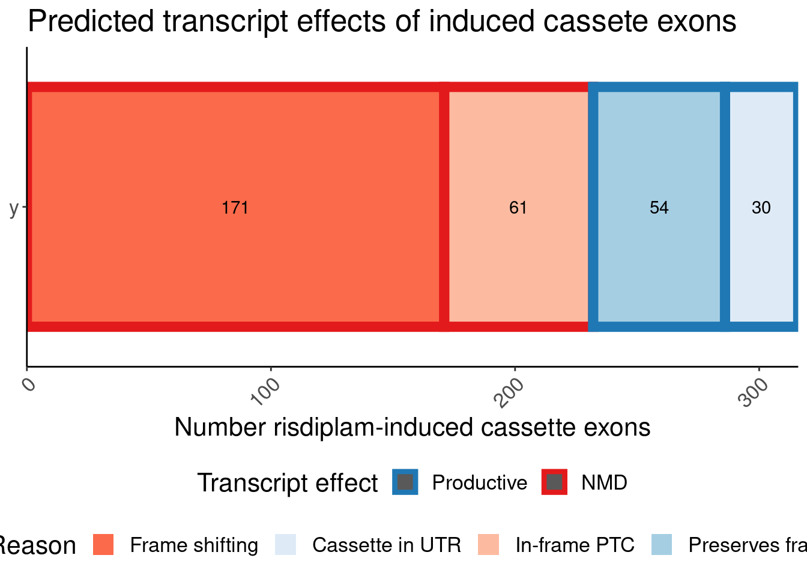
redo boxplot
P.boxplot.dat <- P.bar.dat %>%
dplyr::select(-symbol) %>%
mutate(gene = str_replace(gene, "(^.+?)\\..+?$", "\\1")) %>%
left_join(
volcano.dat %>%
filter(dose.nM == 3160) %>%
distinct(gene, dose.nM, dataset, .keep_all=T) %>%
dplyr::select(gene, dose.nM, dataset, logFC) %>%
pivot_wider(names_from="dataset", values_from="logFC"),
by="gene"
) %>%
left_join(ensembl_to_symbols, by=c("gene"="ensembl_gene_id")) %>%
# filter(hgnc_symbol %in% c("HTT", "SMN2", "GALC", "STAT1", "KCNT2", "FHOD3", "FOXM1))
dplyr::select(GAGTInt, ExonStart_Cassette, ExonStop_Cassette, gene, hgnc_symbol, chRNA, polyA, ColorEffect, MergedEffect, IsAnnotated, OldMergedEffect) %>%
gather("dataset", "log2FC", chRNA, polyA)
P.box.small <- P.boxplot.dat %>%
mutate(ColorEffect = factor(ColorEffect, levels=c("Productive", "NMD"))) %>%
ggplot(aes(y=log2FC, x=ColorEffect, color=ColorEffect)) +
geom_hline(yintercept=0) +
geom_boxplot(outlier.shape=NA, alpha=1, fill="white") +
geom_segment(x="Productive", xend="NMD", y=2.5, yend=2.5, color='black') +
geom_point(position=position_jitterdodge(jitter.width=0.5), alpha=0.3) +
geom_text(data = . %>%
group_by(dataset) %>%
do(w = wilcox.test(log2FC~ColorEffect, data=., paired=FALSE)) %>%
summarise(dataset, Wilcox = format.pval(w$p.value, digits=3)) %>%
ungroup() %>%
mutate(label=str_glue("P={Wilcox}")),
aes(label=label, group=NULL),
x=1.5, y=2.5, color='black', vjust=-1) +
scale_color_manual(values=c( "#1f78b4","#e31a1c")) +
facet_wrap(~dataset) +
labs(y=expression("Host gene "*log["2"]*"FC"), x="Predicted transcript effect") +
Rotate_x_labels +
theme(legend.position="none")
P.box.small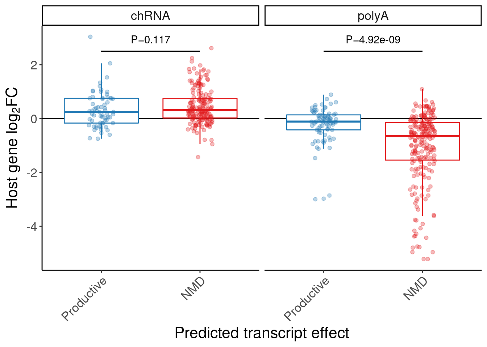
redo PSI vs logFC scatters
P.scatter.byPrediction.dat <- Scatter.dat %>%
filter(dose.nM==3160) %>%
inner_join(
P.boxplot.dat %>%
filter(dataset=="polyA") %>%
dplyr::select(gene, ColorEffect, MergedEffect, OldMergedEffect),
by="gene"
) %>%
inner_join(
PolyA.SplicingEffects.Annotationed %>%
filter(param=="Pred_3160") %>%
dplyr::select(junc, gene, Estimate) %>%
mutate(gene = str_replace(gene, "(^.+?)\\..+?$", "\\1")),
by="gene"
)
MergedEffectLabels <- c(
"Productive"="In annotated productive transcript",
"NMD"="In annotated NMD transcript",
"Frame shifting"="Frame shifting",
"Cassette in UTR"="Cassette in UTR",
"In-frame PTC"="In-frame PTC",
"Preserves frame"="Preserves frame",
"All NMD"="All predicted NMD exons",
"All productive"="All predicted productive exons"
)
P.scatter.byPrediction <- bind_rows(
P.scatter.byPrediction.dat %>%
mutate(color=OldMergedEffect),
P.scatter.byPrediction.dat %>%
mutate(color=OldMergedEffect) %>%
mutate(MergedEffect=recode(ColorEffect, !!!c("NMD"="All NMD", "Productive"="All productive")))
) %>%
mutate(MergedEffect = factor(MergedEffect, levels=c("Preserves frame", "Cassette in UTR", "All productive", "Frame shifting", "In-frame PTC", "All NMD"))) %>%
distinct(gene,MergedEffect, .keep_all=T) %>%
ggplot(aes(x=Estimate, y=logFC_polyA, color=color)) +
geom_hline(yintercept=0) +
geom_point() +
scale_color_manual(values=c(
"Productive"="#1f78b4",
"NMD"="#e31a1c",
"Frame shifting"="#fb9a99",
"Cassette in UTR"="#a6cee3",
"In-frame PTC"="#fb9a99",
"Preserves frame"="#a6cee3"
),
labels=MergedEffectLabels) +
geom_text( data = . %>%
group_by(MergedEffect) %>%
summarise(cor=cor.test(Estimate,logFC_polyA)[["estimate"]], pval=cor.test(Estimate,logFC_polyA, method='s')[["p.value"]]) %>%
mutate(R = signif(cor, 3), P=format.pval(pval, 3)) %>%
mutate(label = str_glue("rho:{R}\nP:{P}")),
aes(x=-Inf, y=-Inf, label=label),
hjust=-.1, vjust=-0.1, color='black'
) +
# facet_wrap(~MergedEffect, labeller = as_labeller(MergedEffectLabels)) +
facet_wrap(~MergedEffect, nrow=2, labeller = as_labeller(MergedEffectLabels, default=label_wrap_gen(20))) +
theme(legend.position="none") +
labs(y=expression("host gene "*log["2"]*"FC, polyA RNA"), x=expression(Delta*"PSI"), caption="[risdiplam]=3160nM, Effects measured in polyA RNA", title="Colored by annotations when available, faceted by my predictions") +
Rotate_x_labels
P.scatter.byPrediction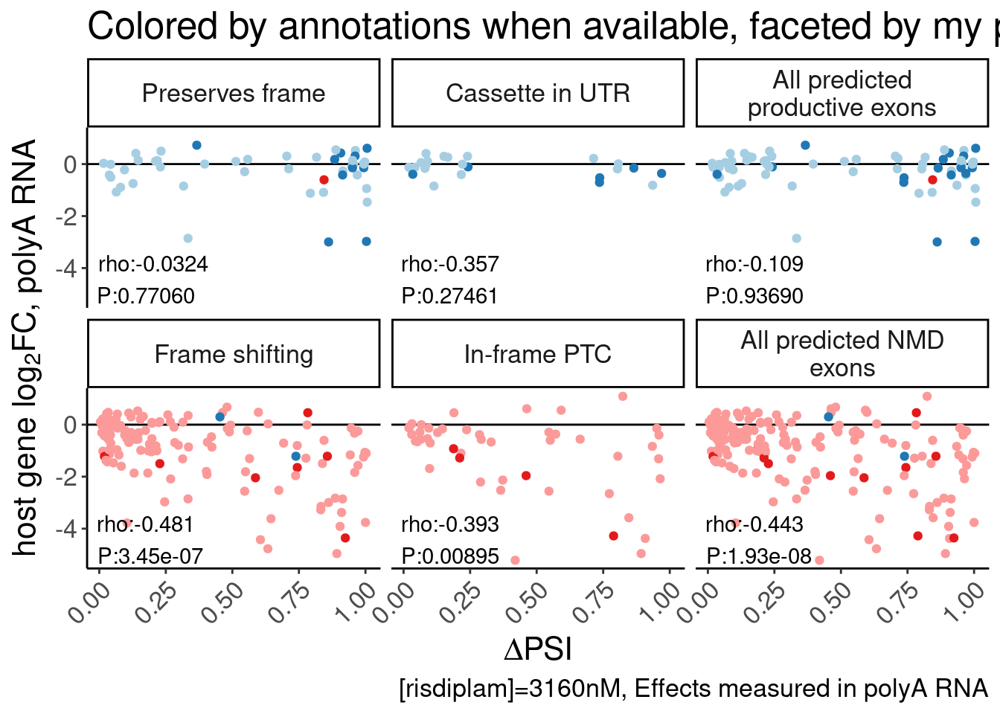
#First see how my annotations match up with Gencode and Yang's annotations
Translated.GAGT_CassetteExons %>%
mutate(IsAnnotated = if_else(str_detect(SuperAnnotation,"Annotated"), "Annotated by Gencode", "Annotated by Yang")) %>%
replace_na(list(SemiSupergroupAnnotations="Unannotated by either", IsAnnotated="Unannotated by either")) %>%
count(Effect, IsAnnotated, SemiSupergroupAnnotations) %>%
ggplot(aes(x=Effect, y=n, fill=SemiSupergroupAnnotations)) +
geom_col(position="stack") +
facet_wrap(~IsAnnotated, scales="free_y", nrow = 3) +
Rotate_x_labels +
labs(title="Comparing my annotations to Gencode/Yang", x="My annotation by comparing translations", fill="Gencode/Yang's annotation")
sessionInfo()R version 4.2.0 (2022-04-22)
Platform: x86_64-pc-linux-gnu (64-bit)
Running under: CentOS Linux 7 (Core)
Matrix products: default
BLAS/LAPACK: /software/openblas-0.3.13-el7-x86_64/lib/libopenblas_haswellp-r0.3.13.so
locale:
[1] LC_CTYPE=en_US.UTF-8 LC_NUMERIC=C LC_TIME=C
[4] LC_COLLATE=C LC_MONETARY=C LC_MESSAGES=C
[7] LC_PAPER=C LC_NAME=C LC_ADDRESS=C
[10] LC_TELEPHONE=C LC_MEASUREMENT=C LC_IDENTIFICATION=C
attached base packages:
[1] stats graphics grDevices utils datasets methods base
other attached packages:
[1] broom_0.8.0 ggnewscale_0.4.8 biomaRt_2.52.0 ggbreak_0.1.1
[5] drc_3.0-1 MASS_7.3-56 knitr_1.39 ggrepel_0.9.1
[9] qvalue_2.28.0 readxl_1.4.0 edgeR_3.38.4 limma_3.52.4
[13] data.table_1.14.2 RColorBrewer_1.1-3 forcats_0.5.1 stringr_1.4.0
[17] dplyr_1.0.9 purrr_0.3.4 readr_2.1.2 tidyr_1.2.0
[21] tibble_3.1.7 ggplot2_3.3.6 tidyverse_1.3.1
loaded via a namespace (and not attached):
[1] backports_1.4.1 workflowr_1.7.0 BiocFileCache_2.4.0
[4] plyr_1.8.7 splines_4.2.0 GenomeInfoDb_1.32.2
[7] TH.data_1.1-1 digest_0.6.29 yulab.utils_0.0.6
[10] htmltools_0.5.2 fansi_1.0.3 magrittr_2.0.3
[13] memoise_2.0.1 tzdb_0.3.0 Biostrings_2.64.0
[16] modelr_0.1.8 R.utils_2.11.0 vroom_1.5.7
[19] sandwich_3.0-1 prettyunits_1.1.1 colorspace_2.0-3
[22] blob_1.2.3 rvest_1.0.2 rappdirs_0.3.3
[25] haven_2.5.0 xfun_0.30 crayon_1.5.1
[28] RCurl_1.98-1.7 jsonlite_1.8.0 survival_3.3-1
[31] zoo_1.8-10 glue_1.6.2 gtable_0.3.0
[34] zlibbioc_1.42.0 XVector_0.36.0 car_3.1-1
[37] BiocGenerics_0.42.0 abind_1.4-5 scales_1.2.0
[40] mvtnorm_1.1-3 DBI_1.1.2 Rcpp_1.0.8.3
[43] plotrix_3.8-2 progress_1.2.2 gridGraphics_0.5-1
[46] bit_4.0.4 stats4_4.2.0 httr_1.4.3
[49] ellipsis_0.3.2 R.methodsS3_1.8.1 pkgconfig_2.0.3
[52] XML_3.99-0.14 farver_2.1.0 sass_0.4.1
[55] dbplyr_2.1.1 locfit_1.5-9.7 utf8_1.2.2
[58] ggplotify_0.1.0 tidyselect_1.1.2 labeling_0.4.2
[61] rlang_1.0.2 reshape2_1.4.4 later_1.3.0
[64] AnnotationDbi_1.58.0 munsell_0.5.0 cellranger_1.1.0
[67] tools_4.2.0 cachem_1.0.6 cli_3.3.0
[70] generics_0.1.2 RSQLite_2.2.14 evaluate_0.15
[73] fastmap_1.1.0 yaml_2.3.5 bit64_4.0.5
[76] fs_1.5.2 KEGGREST_1.36.2 nlme_3.1-157
[79] whisker_0.4 R.oo_1.24.0 aplot_0.1.10
[82] xml2_1.3.3 compiler_4.2.0 rstudioapi_0.13
[85] filelock_1.0.2 curl_4.3.2 png_0.1-7
[88] reprex_2.0.1 bslib_0.3.1 stringi_1.7.6
[91] highr_0.9 lattice_0.20-45 Matrix_1.5-3
[94] vctrs_0.4.1 pillar_1.7.0 lifecycle_1.0.1
[97] jquerylib_0.1.4 bitops_1.0-7 httpuv_1.6.5
[100] patchwork_1.1.1 R6_2.5.1 promises_1.2.0.1
[103] IRanges_2.30.0 codetools_0.2-18 gtools_3.9.2
[106] assertthat_0.2.1 rprojroot_2.0.3 withr_2.5.0
[109] multcomp_1.4-19 S4Vectors_0.34.0 GenomeInfoDbData_1.2.8
[112] mgcv_1.8-40 parallel_4.2.0 hms_1.1.1
[115] grid_4.2.0 ggfun_0.0.9 rmarkdown_2.14
[118] carData_3.0-5 git2r_0.30.1 Biobase_2.56.0
[121] lubridate_1.8.0